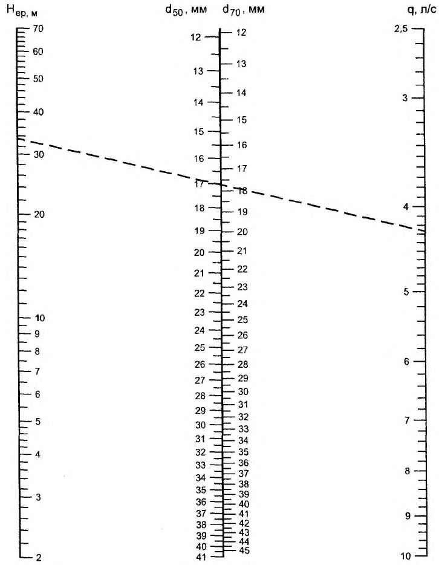

СП 30.13330.2020 «Внутренний водопровод и канализация зданий»
О документе: разработчики, утверждение, регистрация, ключевые слова
СВОД ПРАВИЛ
СП 30.13330.2020
СНиП 2.04.01-85*
Издание официальное
СП 30.13330.2020
1 ИСПОЛНИТЕЛИ - НИИСФ РААСН, НП АВОК, ФГБОУ СПб ГАСУ, ООО «Спец Строй Проект», ООО «ХЛ-РУС», ПКП НПО «Мосспецавтоматика», ООО ППФ «АК»
2 ВНЕСЕН Техническим комитетом по стандартизации ТК 465 «Строительство»
3 ПОДГОТОВЛЕН к утверждению Департаментом градостроительной деятельности и архитектуры Министерства строительства и жилищно-коммунального хозяйства Российской Федерации (Минстрой России)
4 УТВЕРЖДЕН приказом Министерства строительства и жилищно-коммунального хозяйства Российской Федерации от 30 декабря 2020 г. № 920/пр и введен в действие с 1 июля 2021 г.
5 ЗАРЕГИСТРИРОВАН Федеральным агентством по техническому регулированию и метрологии (Росстандарт). Пересмотр СП 30.13330.2016 «СНиП 2.04.01-85* Внутренний водопровод и канализация зданий»
В случае пересмотра (замены) или отмены настоящего свода правил соответствующее уведомление будет опубликовано в установленном порядке. Соответствующая информация, уведомление и тексты размещаются также в информационной системе общего пользования - на официальном сайте разработчика (Минстрой России) в сети Интернет
© Минстрой России, 2020
Настоящий нормативный документ не может быть полностью или частично воспроизведен, тиражирован и распространен в качестве официального издания на территории Российской Федерации без разрешения Минстроя России
- 23 Санитарно-эпидемиологические и гигиенические требования, требования охраны окружающей среды, предъявляемые к внутренним системам водоснабжения и водоотведения…………………………………………………
- 24 Обеспечение надежности и безопасности при эксплуатации. Долговечность и ремонтопригодность……………………………………………………………
- 25 Порядок проведения монтажа и сдачи в эксплуатацию внутренних систем водоснабжения и водоотведения (включая апробацию, испытания, пусконаладку и контроль)…………………………… ……………………….
- 26 Требования энергетической эффективности внутренних систем водоснабжения и водоотведения. Требования рационального использования водных ресурсов …………………………………………………..…………….
- Приложение А Расчетные расходы воды………………………….…………..
Приложение Б Значения коэффициентов α и α
hr
в зависимости от числа
санитарно-технических приборов
𝑁
, вероятности их действия
P
и использования
𝑃h𝑟
…………………………………………….
Приложение В Номограмма для определения диаметров отверстий диафрагм, устанавливаемых между соединительными головками и пожарными кранами………………………………
Приложение Г Значения коэффициента 𝑘𝑐𝑖𝑟 для системы горячего водоснабжения…………………………………………………..
Приложение Д Регулирующий объем резервуара (аккумулятора теплоты),
расход воды (теплоты) за период ее потребления, при заданных неравномерностях подачи и потребления …………………….……
Приложение Е Регулирующий объем резервуара (аккумулятора теплоты),
расход воды (теплоты) за период ее потребления, при
равномерной подаче и неравномерном потреблении………..
Приложение Ж Расходы воды на пожаротушение……………………………
Приложение И Допустимая скорость движения воды в трубопроводах
систем холодного и горячего водоснабжения………………
Приложение К Пропускная способность канализационных стояков………..
Приложение Л Потери тепла трубопроводами системы горячего
водоснабжения…………………………………………………. Библиография……………………………………………………………………..
СП 30.13330.2020
Дата введения - 2021-07-01
УДК 696.1
ОКС 91.140.60 91.140.70 91.140.80
Ключевые слова: внутренняя система, водопровод, водоотведение, канализация, здание, водопотребление, горячее и холодное водоснабжение, теплота, трубопровод, арматура, насосные установки, водосток
Руководитель организации-разработчика
НИИСФ РААСН директор \_\_\_\_\_\_\_\_\_\_\_\_\_\_ И. Л. Шубин
наименование организации
должность личная подпись
инициалы, фамилия
Руководитель разработки зав. лаб. \_\_\_\_\_\_\_\_\_\_\_\_\_ Д. Б. Фрог
должность личная подпись
инициалы, фамилия
Введение
Настоящий свод правил разработан в целях обеспечения требований Федерального закона от 30 декабря 2009 г. № 384-ФЗ «Технический регламент о безопасности зданий и сооружений» [5] с учетом требований федеральных законов от 27 декабря 2002 г. № 184-ФЗ «О техническом регулировании» [2], от 22 июля 2008 г. № 123-ФЗ «Технический регламент о требованиях пожарной безопасности» [3], от 23 ноября 2009 г. № 261-ФЗ «Об энергосбережении и повышении энергетической эффективности и о внесении изменений в отдельные законодательные акты Российской Федерации» [4], от 7 декабря 2011 г. № 416-ФЗ «О водоснабжении и водоотведении» [6].
Пересмотр СП 30.13330.2016 «СНиП 2.04.01-85* Внутренний водопровод и канализация зданий» выполнен авторским коллективом: НИИСФ РААСН (канд. техн. наук Д.Б. Фрог ), НП АВОК ( А.Н. Колубков ), ФГБОУ СПб ГАСУ (канд. техн. наук А.В. Подпорин ), ООО «Спец Строй Проект» (канд. техн. наук А.А. Шипилов, М.М. Глебов ), ООО «ХЛ-РУС», ( С.М. Якушин ), ПКП НПО «Мосспецавтоматика» (канд. техн. наук, проф. Е.Е. Кирюханцев ), ООО ППФ «АК» ( Л.Г. Народицкая, С.Г. Никитин ).
1Область применения
- на системы внутреннего водопровода и канализации, системы противопожарного водоснабжения защитных сооружений гражданской обороны; сооружений, предназначенных для работ с радиоактивными веществами, источниками ионизирующих излучений и помещений, в которых производятся, хранятся или применяются взрывчатые вещества;
- на здания и помещения сельскохозяйственного и производственного назначения, в которых требования к системам внутреннего водопровода и канализации задаются технологическими требованиями, а также на здания и сооружения, отнесенные к особо опасным объектам;
- системы автоматического водяного пожаротушения;
- установки обработки горячей воды;
- системы горячего водоснабжения для технологических нужд промышленных предприятий;
- системы специального производственного водоснабжения (деионизированной воды, глубокого охлаждения и др.);
- внутридомовые системы кондиционирования воды.
2Нормативные ссылки
В настоящем своде правил использованы нормативные ссылки на следующие документы:
ГОСТ 12.1.003-2014 Система стандартов безопасности труда. Шум. Общие требования
Internal water supply and sewerage of buildings
СП 30.13330.2020
безопасности
| ГОСТ 17.1.2.03-90 Охрана природы. Гидросфера. Критерии и показатели качества |
|---|
| воды для орошения |
| ГОСТ 18599-2001 Трубы напорные из полиэтилена. Технические условия |
| ГОСТ 19185-73 Гидротехника. Основные понятия. Термины и определения |
| ГОСТ 21.601-2011 Система проектной документации для строительства. Правила |
| выполнения рабочей документации внутренних систем водоснабжения и канализации |
| ГОСТ 25150-82 Канализация. Термины и определения |
| ГОСТ 25151-82 Водоснабжение. Термины и определения |
| ГОСТ 27751-2014 Надежность строительных конструкций и оснований. Основные |
| положения |
| ГОСТ Р 50193.1-92 (ИСО 4064/1-77) Измерение расхода воды в закрытых каналах. |
| Счетчики холодной питьевой воды. Технические требования ГОСТР51232-98 Вода питьевая. Общиетребования к организации и методам контроля |
| качества ГОСТ Р 51571-2000 Компенсаторы и уплотнения сильфонные металлические. Общие |
| технические требования СП 2.13130.2020 Системы противопожарной защиты. Обеспечение огнестойкости |
| объектов защиты СП 8.13130.2020 Системы противопожарной защиты. Наружное |
| противопожарное водоснабжение. Требования пожарной безопасности |
| СП 10.13130.2020 Системы противопожарной защиты. Внутренний противопожарный |
| водопровод. Нормы и правила проектирования СП 21.13330.2012 «СНиП 2.01.09-91 Здания и сооружения на подрабатываемых |
| и просадочных грунтах» (с изменением №1) |
| территориях СП 31.13330.2012 «СНиП 2.04.02-84* Водоснабжение. Наружные сети и |
| сооружения» |
| изменениями №1, №2, №3, №4, №5) СП 32.13330.2018 «СНиП 2.04.03-85 Канализация. Наружные сети и сооружения» |
| №1) |
| СП 42.13330.2016 «СНиП 2.07.01-89* Градостроительство. Планировка и застройка |
| городских и сельских поселений» (с изменениями №1, №2) |
| СП 48.13330.2019 «СНиП 12-01-2004 Организация строительства» |
| СП 51.13330.2011 «СНиП 23-03-2003 Защита от шума» (с изменением №1) |
| изменением |
| (с |
| (с |
СП 54.13330.2016 «СНиП 31-01-2003 Здания жилые многоквартирные» (с изменениями № 1, № 2, № 3)
СП 59.13330.2016 «СНиП 35-01-2001 Доступность зданий и сооружений для маломобильных групп населения»
СП 61.13330.2012 «СНиП 41-03-2003 Тепловая изоляция оборудования и трубопроводов» (с изменением № 1)
СП 66.13330.2011 Проектирование и строительство напорных сетей водоснабжения и водоотведения с применением высокопрочных труб из чугуна с шаровидным графитом (с изменениями № 1, № 2)
СП 73.13330.2016 «СНиП 3.05.01-85 Внутренние санитарно-технические системы зданий» (с изменением № 1)
СП 118.13330.2012 «СНиП 31-06-2009 Общественные здания и сооружения» (с изменениями № 1, № 2, № 3, № 4)
СП 124.13330.2012 «СНиП 41-02-2003 Тепловые сети» (с изменением № 1)
СП 131.13330.2018 «СНиП 23-01-99* Строительная климатология»
СП 136.13330.2012 Здания и сооружения. Общие положения проектирования с учетом доступности для маломобильных групп населения (с изменением № 1)
СП 137.13330.2012 Жилая среда с планировочными элементами, доступными инвалидам. Правила проектирования (с изменением № 1)
СП 148.13330.2012 Помещения в учреждениях социального и медицинского обслуживания. Правила проектирования (с изменением № 1)
СП 158.13330.2014 Здания и помещения медицинских организаций. Правила проектирования (с изменениями № 1, № 2)
СП 252.1325800.2016 Здания дошкольных образовательных организаций. Правила проектирования (с изменением № 1)
СП 253.1325800.2016 Инженерные системы высотных зданий
СП 466.1325800.2019 Наемные дома. Правила проектирования
СП 486.1311500.2020 Системы противопожарной защиты. Перечень зданий, сооружений, помещений и оборудования, подлежащих защите автоматическими установками пожаротушения и системами пожарной сигнализации. Требования пожарной безопасности
СанПиН 2.1.2.2645-10 Санитарно-эпидемиологические требования к условиям проживания в жилых зданиях и помещениях
СП 30.13330.2020
СанПиН 2.1.2.2801-10 Изменения и дополнения № 1 к СанПиН 2.1.2.2645-10 «Санитарно-эпидемиологические требования к условиям проживания в жилых зданиях и помещениях»
СанПиН 2.1.4.1074-01 Питьевая вода. Гигиенические требования к качеству воды централизованных систем питьевого водоснабжения. Контроль качества. Гигиенические требования к обеспечению безопасности систем горячего водоснабжения
СанПиН 2.1.4.2496-09 Гигиенические требования к обеспечению безопасности систем горячего водоснабжения. Изменение к СанПиН 2.1.4.1074-01
СанПиН 2.1.4.2580-10 Изменение № 2 к СанПиН 2.1.4.1074-01 «Питьевая вода. Гигиенические требования к качеству воды централизованных систем питьевого водоснабжения. Контроль качества»
СанПиН 2.1.4.2652-10 Изменение № 3 в СанПиН 2.1.4.1074-01 «Гигиенические требования безопасности материалов, реагентов, оборудования, используемых для водоочистки и водоподготовки»
СанПиН 42-128-4690-88 Санитарные правила содержания территорий населенных мест
СН 2.2.4/2.1.8.562-96 Шум на рабочих местах, в помещениях жилых, общественных зданий и на территории жилой застройки
СН 2.2.4/2.1.8.566-96 Производственная вибрация, вибрация в помещениях жилых и общественных зданий
Примечание - При пользовании настоящим сводом правил целесообразно проверить действие ссылочных документов в информационной системе общего пользования - на официальном сайте федерального органа исполнительной власти в сфере стандартизации в сети Интернет или по ежегодному информационному указателю «Национальные стандарты», который опубликован по состоянию на 1 января текущего года, и по выпускам ежемесячного информационного указателя «Национальные стандарты» за текущий год. Если заменен ссылочный документ, на который дана недатированная ссылка, то рекомендуется использовать действующую версию этого документа с учетом всех внесенных в данную версию изменений. Если заменен ссылочный документ, на который дана датированная ссылка, то рекомендуется использовать версию этого документа с указанным выше годом утверждения (принятия). Если после утверждения настоящего свода правил в ссылочный документ, на который дана датированная ссылка, внесено изменение, затрагивающее положение, на которое дана ссылка, то это положение рекомендуется применять без учета данного изменения. Если ссылочный документ отменен без замены, то положение, в котором дана ссылка на него, рекомендуется применять в части, не затрагивающей эту ссылку. Сведения о действии сводов правил целесообразно проверить в Федеральном информационном фонде стандартов.
3Термины, определения, обозначения и единицы измерения
В настоящем своде правил применены термины и определения по ГОСТ 17.1.2.03, ГОСТ 19185, ГОСТ 25150, ГОСТ 25151, [5], [6], [8]-[11], [13]-[15], СП 486.1311500, СП 118.13330, а также следующие термины с соответствующими определениями:
- 3.1.1 баланс водопотребления и водоотведения
- Документ, содержащий сведения о среднесуточном объеме воды, полученной абонентом из всех источников водоснабжения, и (или) об объеме сточных вод, сброшенных абонентом в централизованную систему водоотведения, в том числе сведения о распределении объема сточных вод по канализационным выпускам.Источник: 9, статья 1
- 3.1.2 внутренняя система водопровода (внутренний водопровод)
- Система трубопроводов и устройств, обеспечивающая присоединение к наружным сетям, подачу воды к санитарно-техническим приборам, технологическому оборудованию и пожарным кранам в границах внешнего контура стен одного здания или группы зданий и сооружений и имеющая общее водоизмерительное устройство от наружных сетей водопровода поселения, городского округа или предприятия.
- 3.1.3 внутренняя система водоотведения (внутренняя канализация)
- Система трубопроводов и устройств в границах внешнего контура здания и сооружений, ограниченная выпусками до первого смотрового колодца, обеспечивающая отведение сточных, дождевых и талых вод в сеть водоотведения соответствующего назначения поселения или городского округа, или предприятия.
- 3.1.4водоотведение
- Прием, транспортировка и очистка сточных вод с использованием централизованной системы водоотведения.Источник: 6, статья 2
- 3.1.5водоснабжение
- Водоподготовка, транспортировка и подача питьевой или технической воды абонентам с использованием централизованных или нецентрализованных систем холодного водоснабжения (холодное водоснабжение) или приготовление, транспортировка и подача горячей воды абонентам с использованием централизованных или нецентрализованных систем горячего водоснабжения (горячее водоснабжение).Источник: 6, статья 2
- 3.1.6 воздушный клапан
- Устройство, пропускающее воздух в одном направлении вслед за движущейся в трубопроводе жидкостью и не пропускающее воздух в обратном направлении, предназначенное для увеличения пропускной способности невентилируемого канализационного стояка или предотвращения срыва гидрозатвора у санитарного прибора или приборов.
- 3.1.7 выпуск (канализационный)
- Участок отводного (горизонтального) трубопровода от раструба с внутренней стороны стены здания до первого приемного колодца.
- 3.1.8 гарантированный напор
- Давление воды в точке подключения к коммунальным сетям водопровода, обеспечиваемое организацией водопроводно-канализационного хозяйства в период максимального водоразбора.
- 3.1.9граница балансовой принадлежности
- Линия раздела объектов централизованных систем холодного водоснабжения и (или) водоотведения, в том числе водопроводных и (или) канализационных сетей, между владельцами по признаку собственности или владения на ином законном основании.Источник: 9, раздел 1, пункт 2
- 3.1.10 гидрозатвор
- Запахозапирающее устройство гидравлического действия.
- 3.1.11индивидуальный тепловой пункт; ИТП
- Комплекс устройств для присоединения теплопотребляющей установки к тепловой сети, преобразования параметров теплоносителя и распределения его по видам тепловой нагрузки для одного здания, строения или сооружения. [15, раздел 1, пункт 3]
- 3.1.12 канализационный вентилируемый стояк
- Стояк, имеющий вытяжную часть и через нее сообщение с атмосферой, способствующее воздухообмену в трубопроводах внутренней и наружной сети канализации.
- 3.1.13 канализационный невентилируемый стояк
- Стояк, не имеющий сообщения с атмосферой.
- Примечание - К невентилируемым стоякам относятся
- стояк или группа стояков, объединенных поверху сборным трубопроводом, не имеющие вытяжной части или оборудованные воздушным клапаном.
- 3.1.14 лимит водопотребления (водоотведения)
- Установленный абоненту предельный объем отпущенной (полученной) питьевой воды и принимаемых (сбрасываемых) сточных вод на определенный период времени.
- 3.1.15 напор
- Давление воды при определенном расходе в сети водопровода, м вод. ст. Примечание - Метр (миллиметр) водяного столба - внесистемная единица давления, применяемая в ряде отраслей техники и гидравлике. 9,807 килопаскалей (кПа) соответствуют гидростатическому давлению водяного столба высотой 1 м при наибольшей плотности воды при температуре 4 °C. Сокращение: «м вод. ст.» и «мм вод. ст.».
- 3.1.16 номинальное (условное) давление PN
- Наибольшее избыточное давление при температуре среды 293 К (20 °С), при котором допустима длительная работа труб, арматуры и деталей трубопровода, имеющих заданные размеры, обоснованные расчетом на прочность при выбранных материалах и характеристиках их прочности, соответствующих температуре 293 К (20 °С).
- 3.1.17питьевая вода
- Вода, за исключением бутилированной питьевой воды, предназначенная для питья, приготовления пищи и других хозяйственно-бытовых нужд населения, а также для производства пищевой продукции.Источник: 6, статья 2
- 3.1.18 пожарный кран; ПК
- Комплект, состоящий из запорного клапана с устройством открывания, установленного на внутреннем противопожарном водопроводе (ВПВ) или трубопроводах объединенной системы ВПВ и автоматического пожаротушения и оборудованного пожарной соединительной головкой, а также пожарного рукава с ручным пожарным стволом.
- 3.1.19 пропускная способность
- Максимальный объемный или весовой расход жидкости через поперечное сечение трубопровода или санитарно-технической арматуры в единицу времени.
- 3.1.20 рабочее давление
- Наибольшее избыточное давление, при котором обеспечивается заданный режим эксплуатации труб, арматуры и деталей трубопровода.
- 3.1.21 расчетный расход воды
- Обоснованные исследованиями и практикой эксплуатации значения расходов водопотребления с учетом основных влияющих факторов (числа потребителей, числа приборов, заселенности квартир жилых зданий, объема выпуска продукции и др.).
- 3.1.22 расчетный расход сточных вод
- Обоснованные исследованиями и практикой эксплуатации значения расходов, прогнозируемых для объекта канализования в целом или его части с учетом влияющих факторов (числа потребителей, числа и характеристик санитарнотехнических приборов, оборудования, емкости отводных трубопроводов и др.).
- 3.1.23 сборный отводной (горизонтальный) трубопровод
- Трубопровод, предназначенный для транспортирования загрязненных стоков от стояка (стояков) из здания до первого приемного колодца.
- 3.1.24 сифон
- Техническое устройство, позволяющее подключить санитарный прибор или приемник сточных вод (производственных стоков) к системе канализации, в конструкции которого может быть использован гидрозатвор или иной принцип защиты от канализационных газов, например «сухой» сифон и т. п.
- 3.1.25 срок службы оборудования, арматуры, материалов
- Календарная продолжительность эксплуатации от ее начала или возобновления после ремонта до наступления состояния, при котором дальнейшая эксплуатация недопустима или нецелесообразна.
- 3.1.26 тепловая изоляция (трубопроводов)
- Теплоизоляционные материалы и конструкции для сокращения тепловых потерь трубопроводами или предотвращения образования конденсата на их поверхности.
- 3.1.27техническая вода
- Вода, подаваемая с использованием централизованной или нецентрализованной системы водоснабжения, не предназначенная для питья, приготовления пищи и других хозяйственно-бытовых нужд населения или для производства пищевой продукции. В настоящем своде правил применены следующие обозначения и единицы измерения: 𝑞0 𝑡𝑜𝑡 - общий расход воды, л/с, санитарно-техническим прибором (арматурой), принимаемый согласно 5.2; 𝑞0 h - расход горячей воды, л/с, санитарно-техническим прибором (арматурой), принимаемый согласно 5.2; 𝑞0 𝑐 - расход холодной воды, л/с, санитарно-техническим прибором (арматурой), принимаемый согласно 5.2; 𝑞0 𝑠 - расход стоков от санитарно-технического прибора, л/с, принимаемый согласно таблице А.1; 𝑞 𝑡𝑜𝑡 - общий максимальный расчетный расход воды, л/с, принимаемый согласно 5.3; 𝑞 h - максимальный расчетный расход горячей воды, л/с, принимаемый согласно 5.3; 𝑞 𝑐 -максимальный расчетный расход холодной воды, л/с, принимаемый согласно 5.3; 𝑞 𝑠 -максимальный расчетный расход сточных вод для стояков, л/с, принимаемый согласно 5.5; 𝑞 𝑠𝐿 -максимальный расчетный расход сточных вод для горизонтальных отводящих трубопроводов, л/с, принимаемый согласно 5.7; 𝑞0,h𝑟 𝑡𝑜𝑡 - общий расход воды, л/ч, санитарно-техническим прибором, принимаемый согласно 5.8; 𝑞0,h𝑟 h - расход горячей воды, л/ч, санитарно-техническим прибором, принимаемый согласно 5.8; 𝑞0,h𝑟 𝑐 - расход холодной воды, л/ч, санитарно-техническим прибором, принимаемый согласно 5.8; 𝑞h𝑟,𝑢 𝑡𝑜𝑡 - общий расчетный расход воды, л, потребителем в час наибольшего водопотребления, принимаемый по таблице А.2; 𝑞h𝑟,𝑢 h - расчетный расход горячей воды, л, потребителем в час наибольшего водопотребления, принимаемый по таблице А.2; 𝑞h𝑟,𝑢 𝑐 - расчетный расход холодной воды, л, потребителем в час наибольшего потребления, принимаемый по таблице А.2; 𝑞h𝑟 𝑡𝑜𝑡 - общий максимальный часовой расход воды, м³ , принимаемый согласно 5.10; 𝑞h𝑟 h - максимальный часовой расход горячей воды, м³ , принимаемый согласно 5.10; 𝑞h𝑟 𝑐 - максимальный часовой расход холодной воды, м³, принимаемый согласно 5.10; 𝑞𝑛 𝑡𝑜𝑡 - средний за период водопотребления общий удельный часовой расход воды, отнесенный к одному прибору, л; 𝑞𝑛 h - средний за период водопотребления удельный часовой расход горячей воды, отнесенный к одному прибору, л; 𝑞𝑛 𝑐 - средний за период водопотребления удельный часовой расход холодной воды, отнесенный к одному прибору, л; 𝑞𝑇 𝑡𝑜𝑡 - общий средний часовой расход воды, м³ , принимаемый согласно 5.11; 𝑞𝑇 h - средний часовой расход горячей воды, м³ , принимаемый согласно 5.11; 𝑞𝑇 𝑐 - средний часовой расход холодной воды, м³ , принимаемый согласно 5.11; 𝑞 𝑐𝑖𝑟 - расчетный циркуляционный расход горячей воды в системе, л/с; 𝑞 h,𝑐𝑖𝑟 - расчетный расход горячей воды с учетом циркуляционного, л/с; 𝑞𝑢,𝑚 𝑡𝑜𝑡 -общий расчетный расход воды потребителем в средние сутки, л, принимаемый по таблице А.2; 𝑞𝑢,𝑚 h -расчетный расход горячей воды потребителем в средние сутки, л, принимаемый по таблице А.2; 𝑞𝑢,𝑚 𝑐 - расчетный расход холодной воды потребителем в средние сутки, л, принимаемый по таблице А.2; 𝑞𝑢 𝑡𝑜𝑡 -общий расход воды потребителем в сутки (смену) наибольшего водопотребления, л, принимаемый по таблице А.2; 𝑞𝑢 h - расход горячей воды, л, потребителем в сутки (смену) наибольшего водопотребления, принимаемый по таблице А.2; 𝑞𝑢 𝑐 - расход холодной воды, л, потребителем в сутки (смену) наибольшего водопотребления, принимаемый по таблице А.2; 𝑄 - расчетный расход дождевых вод, л/с; 𝑞 𝑠𝑝 - расход воды, подаваемой насосами, л/с (м³ /ч); 𝑞 h𝑟 𝑠𝑝 - часовой расход воды, м³ , подаваемой насосом; 𝑈 - число водопотребителей; 𝑁 - число санитарно-технических приборов; 𝑃 - вероятность действия санитарно-технических приборов согласно 5.4; 𝑃h𝑟 - вероятность использования санитарно-технических приборов (возможность подачи прибором нормированного часового расхода воды) в течение расчетного часа в зданиях или сооружениях с одинаковыми водопотребителями согласно 5.9; 𝑖 - удельные потери напора по длине на трение при расчетном расходе, определяемые по таблицам для гидравлического расчета трубопроводов систем холодного и горячего водоснабжения; 𝑇 - расчетное время водопотребления воды (сутки, смена), ч; 𝐻𝑝 - напор, давление, м вод. ст., развиваемый насосной установкой; 𝐻𝑔𝑒𝑜𝑚 - геометрическая высота подачи воды, м, от оси насоса до диктующего санитарно-технического прибора; 𝐻𝑙 - потери напора, давления, м вод. ст., на расчетном участке трубопровода; 𝐻𝑙,𝑡𝑜𝑡 - сумма потерь напора на расчетном участке трубопровода; 𝐻𝑔 - наименьший гарантированный напор, давление, м вод. ст., в наружной водопроводной сети; 𝐻𝑒𝑝 - избыточный напор, м вод. ст., который следует погасить диафрагмой; 𝑄h𝑟 h -расход тепла, кВт, на приготовление горячей воды в течение часа максимального водопотребления; 𝑄𝑇 h - расход тепла, кВт, на приготовление горячей воды в течение среднего часа водопотребления; СП 30.13330.2020 𝑄 h𝑡 - потери тепла трубопроводами на расчетном участке, кВт; 𝑣 - скорость движения жидкости в трубопроводе, м/с; h 𝑑 - наполнение трубопровода; 𝑡 𝑐 - температура холодной воды, °С, в сети водопровода; при отсутствии данных ее следует принимать равной 5 °С; 𝑡 h - температура горячей воды, °С, в местах водоразбора или на границе балансовой принадлежности (для предварительных расчетов допускается принимать 65 °С); 𝑘𝑙 - коэффициент, учитывающий потери напора в местных сопротивлениях; 𝑛 - число включений насоса в 1 ч.Источник: 6, статья 2
4Общие положения
Для общественных зданий высотой более 50 м и жилых зданий высотой более 75 м требования настоящего свода правил применяются совместно с положениями СП 253.1325800 в области проектирования инженерных систем высотных зданий.
Районы поселений или городских округов, в пределах которых отсутствуют абоненты, подключенные к централизованным сетям водоотведения, транспортирующим сточные воды к очистным сооружениям, относятся к неканализованным.
Лимиты водопотребления и нормативы водоотведения и сброса загрязняющих веществ, контроль состава и свойств сточных вод определяются в соответствии с положениями [8].
СП 30.13330.2020
Трубопроводы наружных сетей водопровода (в том числе наружного пожаротушения) и водоотведения, прокладываемые вне здания, должны соответствовать требованиям СП 31.13330, СП 32.13330 и СП 8.13130.
Водоснабжение абонентов неканализованных районов осуществляется при наличии технической возможности через абонентские водомерные камеры с подключением уличных водоразборных кранов без ввода водопровода в здания. Способы утилизации содержимого люфт-клозетов, туалетных кабин, уборных и биотуалетов, а также расположение и конструкция абонентских водомерных камер определяются проектной документацией и [9], [10].
Использование восстановленных и бывших в употреблении материалов, изделий и труб не допускается.
Организацию и методы контроля качества питьевой воды устанавливают согласно ГОСТ Р 51232.
Температура горячей воды в местах водоразбора независимо от применяемой системы теплоснабжения должна быть не ниже 60 °С и не выше 75 °С.
Качество воды, подаваемой на производственные нужды, определяется технологическим заданием.
5Определение расчетных расходов воды, стоков и тепла на приготовление горячей воды
При проектировании системы горячего водоснабжения, присоединяемой к закрытой системе теплоснабжения, расчетную температуру горячей воды на выходе из ИТП здания следует принимать равной 65 °C.
- отдельным прибором - по таблице А.1;
- различными приборами для одинаковых водопотребителей на участке тупиковой сети - по таблице А.2;
- различными приборами для разных водопотребителей - по формуле
где Pi - вероятность действия санитарно-технических приборов, определяемая для каждой группы водопотребителей согласно 5.4; q i 0 - расход воды (общий, горячей, холодной), л/с, санитарно-техническим прибором (арматурой), принимаемый по таблице А.2 для каждой группы водопотребителей;
Ni - число санитарно-технических приборов.
Примечания
1 При устройстве кольцевой сети расход воды 𝑞0 следует определять для сети в целом и принимать одинаковым для всех ее участков.
2 В жилых и общественных зданиях, по которым отсутствуют сведения о расходах воды и технических характеристиках санитарно-технических приборов, допускается принимать:
где 𝑞0 (𝑞 0 𝑡𝑜𝑡 , 𝑞 0 h , 𝑞0 𝑐 ) , - расход воды, л/с, значение которого следует определять согласно 5.2;
- коэффициент, определяемый по приложению Б в зависимости от общего числа приборов N на расчетном участке сети и вероятности их действия Р .
При этом таблицей Б.1 следует руководствоваться при Р > 0,1 и N 200; при других значениях Р и N коэффициент следует принимать по таблице Б.2.
Примечания
1 Расход воды на концевых участках сети следует принимать по расчету, но не меньше максимального секундного расхода воды одним из установленных санитарно-технических приборов с наибольшим расходом.
2 Расход воды на технологические нужды промышленных предприятий следует определять, как наибольший из расходов воды: либо от единицы технологического оборудования, при полном несовпадении работы по времени; либо - как сумму расходов воды, совпадающих по времени работы единиц технологического оборудования.
3 Для вспомогательных зданий промышленных предприятий значение q допускается определять, как сумму расходов воды на хозяйственно-питьевые нужды по формуле (2) и душевые нужды - по числу установленных душевых сеток по таблице А.1.
б) при отличающихся группах водопотребителей в здании
Примечания
1 При отсутствии данных о числе санитарно-технических приборов в здании значение Р допускается определять по формулам (3) и (4), принимая N = U .
2 При нескольких группах водопотребителей, для которых периоды наибольшего потребления воды не будут совпадать по времени суток, вероятность действия приборов для системы в целом допускается вычислять по формулам (3) и (4).
где 𝑞𝑢 𝑡𝑜𝑡 - общий расход воды потребителем в сутки наибольшего водопотребления (принимаемый по таблице А.2), л;
𝑇 - расчетное время, ч, потребления воды (за сутки);
𝑈 - число водопотребителей;
𝑁 - число санитарно-технических приборов.
Примечание - При неизвестном числе санитарно-технических приборов допускается принимать число приборов 𝑁 равным числу потребителей 𝑈 .
где 𝑞h𝑟 𝑡𝑜𝑡 - общий максимальный часовой расход воды, м³, на расчетном участке;
𝐾𝑠 - коэффициент, принимаемый по таблице 5.1; 𝑞0 𝑠 - расход стоков, л/с, от присоединяемого прибора с максимальной емкостью, принимаемый по таблице А.1.
Таблица 5.1
| N | Значения 𝐾 𝑠 при 𝐿 , м, равном | Значения 𝐾 𝑠 при 𝐿 , м, равном | Значения 𝐾 𝑠 при 𝐿 , м, равном | Значения 𝐾 𝑠 при 𝐿 , м, равном | Значения 𝐾 𝑠 при 𝐿 , м, равном | Значения 𝐾 𝑠 при 𝐿 , м, равном | Значения 𝐾 𝑠 при 𝐿 , м, равном | Значения 𝐾 𝑠 при 𝐿 , м, равном | Значения 𝐾 𝑠 при 𝐿 , м, равном | Значения 𝐾 𝑠 при 𝐿 , м, равном | Значения 𝐾 𝑠 при 𝐿 , м, равном | Значения 𝐾 𝑠 при 𝐿 , м, равном | Значения 𝐾 𝑠 при 𝐿 , м, равном |
|---|---|---|---|---|---|---|---|---|---|---|---|---|---|
| N | 1 | 3 | 5 | 7 | 10 | 15 | 20 | 30 | 40 | 50 | 100 | 500 | 1000 |
| 4 | 0,61 | 0,51 | 0,46 | 0,43 | 0,40 | 0,36 | 0,34 | 0,31 | 0,27 | 0,25 | 0,23 | 0,15 | 0,13 |
| 8 | 0,63 | 0,53 | 0,48 | 0,45 | 0,41 | 0,37 | 0,35 | 0,32 | 0,28 | 0,26 | 0,24 | 0,16 | 0,13 |
| 12 | 0,64 | 0,54 | 0,49 | 0,46 | 0,42 | 0,39 | 0,36 | 0,33 | 0,29 | 0,26 | 0,24 | 0,16 | 0,14 |
| 16 | 0,65 | 0,55 | 0,50 | 0,47 | 0,43 | 0,39 | 0,37 | 0,33 | 0,30 | 0,27 | 0,25 | 0,17 | 0,14 |
| 20 | 0,66 | 0,56 | 0,51 | 0,48 | 0,44 | 0,40 | 0,38 | 0,34 | 0,30 | 0,28 | 0,25 | 0,17 | 0,14 |
| 24 | 0,67 | 0,57 | 0,52 | 0,48 | 0,45 | 0,41 | 0,38 | 0,35 | 0,31 | 0,28 | 0,26 | 0,17 | 0,15 |
| 28 | 0,68 | 0,58 | 0,53 | 0,49 | 0,46 | 0,42 | 0,39 | 0,36 | 0,31 | 0,29 | 0,27 | 0,18 | 0,15 |
| 32 | 0,68 | 0,59 | 0,53 | 0,50 | 0,47 | 0,43 | 0,40 | 0,36 | 0,32 | 0,30 | 0,27 | 0,18 | 0,15 |
| 36 | 0,69 | 0,59 | 0,54 | 0,51 | 0,47 | 0,43 | 0,40 | 0,37 | 0,33 | 0,30 | 0,28 | 0,19 | 0,16 |
| 40 | 0,70 | 0,60 | 0,55 | 0,52 | 0,48 | 0,44 | 0,41 | 0,37 | 0,33 | 0,31 | 0,28 | 0,19 | 0,16 |
| 100 | 0,77 | 0,69 | 0,64 | 0,60 | 0,56 | 0,52 | 0,49 | 0,45 | 0,40 | 0,37 | 0,34 | 0,23 | 0,20 |
| 500 | 0,95 | 0,92 | 0,89 | 0,88 | 0,86 | 0,83 | 0,81 | 0,77 | 0,73 | 0,70 | 0,66 | 0,50 | 0,44 |
| 1000 | 0,99 | 0,98 | 0,97 | 0,97 | 0,96 | 0,95 | 0,94 | 0,93 | 0,91 | 0,90 | 0,88 | 0,77 | 0,71 |
Примечание - За длину L принимают расстояние от последнего на расчетном участке стояка до ближайшего присоединения следующего стояка или, при отсутствии таких присоединений, до ближайшего канализационного колодца.
- при однотипных водопотребителях - по таблице А.2;
- при отличающихся водопотребителях - по формуле
Примечание - В жилых и общественных зданиях, по которым отсутствуют сведения о числе и технических характеристиках санитарно-технических приборов, допускается принимать:
где αh𝑟 - коэффициент, определяемый по приложению Б в зависимости от общего числа приборов N, обслуживаемых проектируемой системой, и вероятности их использования 𝑃h𝑟 , вычисляемой согласно 5.9. При этом таблицей Б.1 следует руководствоваться при 𝑃h𝑟 > 0,1 и N 200, при других значениях 𝑃h𝑟 и N коэффициент αh𝑟 следует принимать по таблице Б.2.
Примечание - Для вспомогательных зданий промышленных предприятий значение qhr допускается определять, как сумму расходов воды на пользование душами и хозяйственно-питьевые нужды, принимаемых по числу водопотребителей в наиболее многочисленной смене.
б) в течение часа максимального водопотребления
СП 30.13330.2020
где 𝑞T h и 𝑞 hr h -средний часовой и максимальный часовой расходы горячей воды, м³ /ч; 𝑡 h - температура горячей воды в местах водоразбора или на границе балансовой принадлежности, для предварительных расчетов допускается принимать 𝑡 h = 65 °С; 𝑡 𝑐 - температура в системе холодного водоснабжения, при отсутствии данных следует принимать 𝑡 𝑐 = 5 °С.
Примечание 𝑄 h𝑡 в зависимости от расположения ИТП, принятой конструктивной схемы горячего водоснабжения, диаметров подающих и циркуляционных трубопроводов, типа изоляции определяется расчетом и может составлять 20 % - 60 % 𝑞 hr h . В проектной документации значение 𝑄 h𝑡 ориентировочно принимают равным 30 % ÷ 40 %.
6Системы холодного водоснабжения
- хозяйственно-питьевого;
- производственного;
- противопожарного.
Сети хозяйственно-питьевого водоснабжения при совпадении требований по качеству воды и рабочему давлению допускается объединять с производственным и противопожарным водопроводом. При этом в системе должны отсутствовать не имеющие циркуляции (застойные) участки.
Оборудование сетей производственного и противопожарного водопровода для использования в системах с водой питьевого качества должно отвечать требованиям 4.5.
СП 30.13330.2020 правил, технико-экономической целесообразности, требований технологии производства, а также с учетом проектируемой (существующей) наружной системы водоснабжения.
7Противопожарный водопровод
- в зданиях и помещениях, объемом или высотой менее указанных в таблицах Ж.1 и Ж.2;
- в зданиях общеобразовательных организаций (школах, гимназиях, лицеях, кроме кроме спальных корпусов образовательных учреждений интернатного типа), в том числе имеющих актовые залы, оборудованные стационарной киноаппаратурой;
- в дошкольных образовательных организациях;
- в зданиях кинотеатров сезонного действия на любое число мест;
- в банях и саунах;
- в производственных зданиях, в которых применение воды может вызвать взрыв, пожар, распространение огня;
- в производственных и административно-бытовых зданиях промышленных предприятий, в помещениях для хранения овощей и фруктов и в холодильниках, не оборудованных хозяйственно-питьевым или производственным водоснабжением, для которых предусмотрено тушение пожаров из емкостей (резервуаров, водоемов);
- в зданиях складов грубых кормов, пестицидов и минеральных удобрений;
- в трансформаторных подстанциях и помещениях с электросиловым оборудованием, в том числе в насосных станциях и вентиляционных камерах.
Примечание - Допускается не предусматривать противопожарный водопровод в производственных зданиях по переработке сельскохозяйственной продукции категории В со степенями огнестойкости I и II объемом до 5000 м³ .
СП 30.13330.2020
При соединении зданий степеней огнестойкости I и II переходами из несгораемых материалов и установке противопожарных дверей объем здания считают по каждому зданию отдельно, при отсутствии противопожарных дверей - по общему объему зданий, при этом учитывают категорию наиболее пожароопасного здания.
- для жилых этажей - по площади, объему, длине межквартирного коридора или числу этажей здания, приходящихся на жилые помещения;
- для нежилых этажей, встроенных в жилые здания, - по площади, объему или общему числу этажей всего здания.
СП 30.13330.2020
Расход воды для производственных зданий (независимо от категории по пожарной опасности) высотой свыше 50 м и объемом более 150000 м³ следует принимать из четырех среднерасходных пожарных кранов ПК-с с расходом не менее 5 л/с каждый.
- 6 м - в жилых, общественных, производственных и вспомогательных зданиях промышленных предприятий высотой до 50 м;
- 8 м - в жилых зданиях высотой более 50 м;
- 16 м -в общественных, производственных и вспомогательных зданиях промышленных предприятий высотой более 50 м.
Примечание - Для получения пожарных струй с расходом воды до 4 л/с следует применять пожарные краны и рукава диаметром 50 мм; для получения пожарных струй большей производительности - диаметром 65 мм. При технико-экономическом обосновании допускается применять пожарные краны диаметром 50 мм, производительностью свыше 4 л/с. Давление у пожарного крана следует определять с учетом потерь в пожарных рукавах.
При расчетном напоре (давлении), превышающем 45 м вод. ст. (0,45 МПа), следует предусматривать устройство раздельной сети противопожарного водопровода.
Гидростатический напор (давление) в системе раздельного противопожарного водопровода на отметке у наиболее низко расположенного пожарного крана не должен превышать 60 м вод. ст. (0,60 МПа).
Примечание - При давлении у пожарных кранов более 0,4 МПа между пожарным краном и соединительной головкой следует предусматривать установку диафрагм или регуляторов давления. Допускается устанавливать диафрагмы с одинаковым диаметром отверстий на три-четыре этажа здания (см. номограмму приложения В).
СП 30.13330.2020 производственные нужды, при этом расход воды на пользование душами, мытье полов, поливку территории не учитывается.
Скорость движения воды в системе объединенного хозяйственно-противопожарного водопровода при пожаротушении не должна превышать 3 м/с, в спринклерных и дренчерных системах - 10 м/с.
- число стояков или опусков ВПВ, как и расстояние между пожарными шкафами, ПК определяется из расчета обеспечения возможности орошения каждой точки горящего помещения двумя струями;
- в жилых зданиях при общей длине коридора до 10 м включительно допускается устанавливать на одном стояке два ПК;
- в жилых зданиях при общей длине коридора свыше 10 м, а также в производственных и общественных зданиях при расчетном числе струй две и более каждую точку помещения следует орошать двумя струями - по одной струе из двух пожарных стояков.
В производственных и общественных зданиях при расчетном числе струй не менее трех на стояках допускается установка сдвоенных пожарных кранов.
Примечание - Установку пожарных кранов на технических этажах, чердаках и в технических подпольях следует предусматривать при наличии в них сгораемых материалов и конструкций.
При устройстве объединенной сети хозяйственно-питьевого и противопожарного водопровода кольцевание трубопроводной сети должно производиться сверху, при этом для обеспечения сменности воды в зданиях рекомендуется предусматривать пожарные стояки в качестве распределительных, в том числе и для двухзонного водоснабжения.
СП 30.13330.2020
Размещение пожарных кранов следует предусматривать в пожарных шкафах заводского изготовления или в нишах (объемах), оборудованных дверью, приспособленных к опломбированию и имеющих отверстия для проветривания.
Сдвоенные пожарные краны допускается устанавливать один над другим, при этом второй кран устанавливается на высоте не менее 1 м от пола.
Каждый пожарный кран должен быть снабжен пожарным рукавом одинакового с ним диаметра длиной 10, 15 или 20 м и пожарным стволом.
8Устройство систем холодного водоснабжения
СП 30.13330.2020 систему внутреннего водоснабжения следует включать насосные установки, запасные и регулирующие емкости.
- тупиковыми, если допускается перерыв в подаче воды и при числе пожарных кранов менее 12;
- кольцевыми или с закольцованными вводами при двух тупиковых трубопроводах с ответвлениями к потребителям от каждого из них для обеспечения непрерывной подачи воды.
- для зданий, в которых установлено 12 пожарных кранов и более;
- жилых зданий с числом квартир более 400, клубов и досугово-развлекательных учреждений с эстрадой, кинотеатров с числом мест более 300;
- театров, клубов и досугово-развлекательных учреждений со сценой независимо от числа мест;
- зданий, оборудованных автоматическими установками пожаротушения (спринклерные, дренчерные системы), при числе узлов управления более трех;
- бань при числе мест 200 и более;
- прачечных на 2 т и более белья в смену.
При устройстве на каждом вводе самостоятельных насосных установок объединения вводов не требуется.
1,5 - при диаметре трубопровода ввода до 200 мм включительно;
3 - при диаметре трубопровода ввода более 200 мм.
Допускается совместная прокладка вводов водопровода различного назначения.
СП 30.13330.2020 резиновым кольцом (ПФРК), когда возникающие усилия не могут быть восприняты соединениями труб. Следует предусматривать устройство упоров или неподвижных опор на всех напорных трубопроводах при поворотах труб в вертикальной или горизонтальной плоскости.
Прокладку стояков и разводку внутреннего водопровода следует предусматривать в шахтах, открыто - по стенам душевых, кухонь, в монтажных нишах межквартирных коридоров с устройством специальных технических шкафов, обеспечивающих свободный доступ технического персонала к измерительным приборам и арматуре. Технические шкафы (включая лицевые панели) стояков входят в состав инженерного оборудования систем внутреннего водоснабжения и водоотведения зданий и должны быть включены в объем работ на строительство объекта.
В жилых зданиях с расположением этажных распределительных коллекторов в межквартирных коридорах допускается присоединение квартир к коллекторам холодной и горячей воды разводящими трубопроводами, проходящими в пространстве подшивного потолка общеквартирного коридора или в конструкции пола. При этом на присоединениях квартирных трубопроводов к коллекторам следует предусматривать запорную арматуру, обратные клапаны и приборы учета водопотребления. На присоединении коллекторов к стоякам следует устанавливать запорную арматуру, фильтр и этажный регулятор давления. Разводящие сети от коллекторов до квартир следует принимать с учетом обеспечения напора (давления) у приборов квартир согласно 8.21.
СП 30.13330.2020 водопроводных сетей в общих каналах с другими трубопроводами, кроме трубопроводов, транспортирующих легковоспламеняющиеся, горючие или ядовитые жидкости и газы.
Специальные каналы для прокладки водопроводных сетей следует проектировать при обосновании и только в исключительных случаях. Трубопроводы, подводящие воду к технологическому оборудованию, допускается прокладывать в полу или под полом, за исключением подвальных помещений.
СП 30.13330.2020 мероприятия, предотвращающие промерзание трубопроводов (электроподогрев, прокладка греющего спутника).
- с нижней разводкой магистрали (подвал, технический этаж), с расположением водоразборных стояков в санузлах (кухнях, ванных комнатах) квартир;
- с верхней разводкой магистрали (технический этаж, «теплый» чердак), с главным подающим стояком в лестнично-лифтовом холле (общеквартирном коридоре) с водоразборными стояками в санузлах (кухнях, ванных комнатах) квартир;
- с расположением водоразборных стояков вне пределов квартир в конструктивных нишах лестнично-лифтового холла или общеквартирного коридора, с подключением к ним поэтажных коллекторов;
- с расположением водоразборных стояков вне пределов квартир в конструктивных нишах лестнично-лифтового холла или межквартирного коридора, с подключением к ним тупиковых полимерных трубопроводов, проложенных в пространстве подшивного потолка межквартирного коридора, к которым присоединяются трубопроводы подачи холодной воды в квартиры, проходящие в пространстве подшивного потолка.
Разводящие сети от коллекторов до квартир следует принимать с учетом обеспечения напора (давления) у приборов квартир согласно 8.21.
Возможность установки приборов учета на ответвлении от стояка под потолком коридора, в нише санузла или кухни квартиры определяется проектной документацией.
В верхних точках систем холодного водоснабжения следует предусматривать установку автоматических воздушных клапанов, исключающих образование разрежения при опорожнении стояков и удаление воздуха из верхней зоны стояков в режиме эксплуатации.
Возможны также иные проектные решения подключения потребителей.
СП 30.13330.2020
При двух вводах в здание каждый из них должен быть рассчитан на 100 %-ный пропуск расчетного расхода воды. При числе вводов три и более каждый ввод должен быть рассчитан на 50 %-ный пропуск расчетного расхода воды.
Гидравлический расчет системы холодного водоснабжения следует проводить по максимальному секундному расходу воды.
Продолжительность пользования душем в групповых душевых вспомогательных зданий и помещениях производственных предприятий следует принимать 45 мин после окончания смены.
где 𝐻geom -геометрическая высота расположения диктующего санитарно-технического прибора (пожарного крана) над точкой подключения, м вод. ст.;
∑𝐻𝑖𝑙 -сумма потерь напора на всех участках трубопровода диктующего направления, м вод. ст.;
𝐻 пр -напор (давление) перед диктующим прибором, м вод. ст., принимают согласно 8.21;
∑𝐻 вод -сумма потерь напора в узлах учета потребляемой воды (общем для жилого комплекса, общедомовом, индивидуальном), м вод. ст., принимают согласно 12.15;
𝐻 тепл -потери напора в теплообменнике (водонагревателе), принимают ориентировочно -0,03 МПа (3 м вод. ст.);
𝐻𝑙 ввод -потери напора на вводе/вводах водопровода, при пропуске расхода воды на хозяйственно-питьевые нужды и (или) противопожарного расхода воды, м вод. ст.
где 𝑖 -удельные потери напора единицы длины трубопровода 𝑙 , м, при температуре воды, равной 10 °С, принимаемые по таблицам для гидравлического расчета водопроводных труб, по расчетным формулам с учетом шероховатости материала труб или по данным предприятия - производителя труб; 𝑘𝑙 -коэффициент, учитывающий потери напора в местных сопротивлениях, значения которого следует принимать: 0,2 - в сетях объединенных хозяйственно-противопожарных водопроводов жилых и общественных зданий, а также в сетях производственных водопроводов; 0,3 - в сетях хозяйственно-питьевых водопроводов жилых и общественных зданий; 0,15 - в сетях объединенных производственных противопожарных водопроводов; 0,1 - в сетях противопожарных водопроводов.
9Системы горячего водоснабжения
Для приготовления горячей воды допускается применение альтернативных источников теплоснабжения, работающих на природных возобновляемых источниках энергии
СП 30.13330.2020
(солнечные, ветровые, водные, геотермальные, твердотопливные и комбинированные в их сочетаниях). Оборудование и трубопроводы данных систем со стороны подачи воды в систему горячего водоснабжения должны соответствовать [14].
Примечание - При необходимости подачи горячей воды питьевого качества на технологические нужды допускается подача горячей воды одновременно на хозяйственно-питьевые и технологические нужды.
К системе горячего водоснабжения допускается присоединять:
- нагревательные приборы в шкафах для сушки одежды детей в раздевальных дошкольных образовательных организаций;
- системы обогрева пола зала бассейна в дошкольных образовательных организациях с обеспечением температуры поверхности пола в пределах 26 °С - 30 °С.
Необходимо предусматривать устройства для отключения вышеуказанных нагревательных приборов и систем обогрева; оборудование и трубопроводы данных систем должны соответствовать требованиям 4.5 и 4.6.
СП 30.13330.2020 циркуляционным трубопроводам системы горячего водоснабжения по схеме, обеспечивающей постоянный проток через них горячей воды. С той же целью допускается оснащение ванных комнат электрическими полотенцесушителями, подключенными к системе электроснабжения потребителя.
- на циркуляционных стояках системы горячего водоснабжения;
- на системе отопления ванных комнат.
Продолжительность пользования душем в групповых душевых вспомогательных зданий и помещениях производственных предприятий следует принимать 45 мин после окончания смены.
10Устройство систем горячего водоснабжения
32 10.3 Тепловую изоляцию следует предусматривать для подающих и циркуляционных трубопроводов системы горячего водоснабжения, включая стояки, кроме подводок к
СП 30.13330.2020 водоразборным приборам. Толщина теплоизоляционного слоя должна обеспечивать допустимые потери тепла трубопроводами при расчете циркуляционного расхода. Теплопроводность теплоизоляционного материала следует принимать не более 0,05 Вт/(м С), а толщину теплоизоляции -не менее 10 мм.
- с нижней разводкой подающей и циркуляционной магистралей (подвал, технический этаж), с расположением водоразборных и циркуляционных стояков в ванных комнатах, нишах санузлов (кухонь) квартир. В нижней части циркуляционные стояки объединяются в секционные узлы и подключаются к общему циркуляционному трубопроводу либо напрямую, либо сборными участками с установкой на них ручных балансировочных клапанов;
- с нижней разводкой подающей магистрали (подвал, технический этаж), с расположением водоразборных стояков в ванных комнатах, в нишах санузлов (кухонь) квартир и объединением их в секционный узел перемычкой (на техническом этаже, чердаке) с последующим присоединением к циркуляционному стояку, прокладываемому в общеквартирном коридоре;
- с верхней разводкой подающей магистрали (технический этаж, «теплый» чердак), с главным подающим стояком в лестнично-лифтовом холле (коридоре), водоразборными стояками в ванных комнатах, нишах санузлов (кухонь) квартир. В нижней части стояки подключаются к сборному циркуляционному трубопроводу либо объединяются в секционные узлы (от двух до шести стояков) и подключаются также к общему циркуляционному трубопроводу сборными участками с установкой на них ручных балансировочных клапанов;
- с расположением подающих и циркуляционных водоразборных стояков вне пределов квартир в конструктивных нишах лестнично-лифтового холла или общеквартирного коридора, с подключением к ним этажных коллекторов, к которым присоединяются трубопроводы подачи горячей воды в квартиры. При этом на поквартирных ответвлениях устанавливаются запорная арматура, обратные клапаны и приборы учета. Расчетная
СП 30.13330.2020 циркуляция в стояках обеспечивается установкой ручного балансировочного клапана в месте подключения циркуляционного стояка к разводящей сборной магистрали;
- с расположением водоразборных и циркуляционных стояков вне пределов квартир в конструктивных нишах лестнично-лифтового холла или коридора, с подключением к ним кольцевых полимерных трубопроводов, проложенных в пространстве подшивного потолка общеквартирного коридора, к которым присоединяются трубопроводы подачи горячей воды в квартиры. Циркуляция на этаже обеспечивается установкой ручного балансировочного клапана в месте подключения к циркуляционному стояку. На ответвлении от трубопровода к квартирам следует устанавливать запорную арматуру, фильтр, регулятор давления и прибор учета (при условии обеспечения расчетного допустимого давления у приборов по 8.24). Водоразборные и циркуляционные стояки при такой схеме не должны кольцеваться между собой.
Вариант установки фильтра, регулятора давления и прибора учета (на ответвлении от кольцевого трубопровода под потолком коридора или в нише санузла или кухни квартиры) определяется проектом.
В местах присоединения циркуляционных трубопроводов к сборным циркуляционным магистралям и стоякам следует предусматривать установку ручных балансировочных клапанов.
При соответствующем обосновании допустимы иные варианты подключения потребителей.
Максимальный секундный расход горячей воды на расчетных участках сети q h , л/с, следует определять по формуле (2) и 5.3.
Величину требуемого напора, м вод. ст., необходимого для подачи воды потребителю и потери напора на участках системы горячего водоснабжения, следует определять по формулам (14), (15).
При расчете системы горячего водоснабжения следует обеспечивать необходимый напор (давление) воды у санитарных приборов согласно 8.21. Скорость движения горячей воды в трубопроводах следует принимать согласно 8.26.
Циркуляционный расход горячей воды должен компенсировать потери тепла подающими и циркуляционными трубопроводами системы для поддержания нормативной температуры воды у потребителей и соответствовать режиму работы циркуляционных насосов и оборудования в ИТП.
Определение циркуляционного расхода воды, компенсирующего потери тепла подающими и циркуляционными трубопроводами системы, следует проводить в увязке с подбором диаметров циркуляционных трубопроводов и потерь напора (давления) в циркуляционных кольцах.
Циркуляционный расход горячей воды в системе 𝑞 𝑐𝑖𝑟 , л/с, следует определять по формуле
где Ʃ𝑄 h𝑡 , ккал/ч -потери тепла подающими и циркуляционными трубопроводами системы горячего водоснабжения, принимаемые на основании данных приложения Л;
D 𝑡 -допустимая разность температур в подающих трубопроводах системы от водонагревателя до наиболее удаленной водоразборной точки, обеспечивающая температуру горячей воды не ниже 60 С, D 𝑡 = 10 С;
С - удельная теплоемкость воды.
Для систем горячего водоснабжения здания с одним теплообменником в ИТП для нескольких зон по высоте общий циркуляционный расход следует определять как сумму циркуляционных расходов каждой зоны.
где 𝑘𝑐𝑖𝑟 -коэффициент, принимаемый для водонагревателей и начальных участков системы горячей воды до последнего водоразборного стояка или наиболее удаленного прибора по приложению Г, для остальных участков сети 𝑘𝑐𝑖𝑟 = 0.
11Трубопроводы и арматура
36 11.2 Материал труб и соединительных деталей для систем холодного и горячего водоснабжения следует выбирать на основании технико-экономического и гидравлического расчетов, коррозионной агрессивности транспортируемой воды, а также условий обеспечения надежности, долговечности работы трубопроводов и требований к качеству воды. Срок
СП 30.13330.2020 службы систем водоснабжения при температуре воды 20 °С и нормативном давлении должен составлять не менее 50 лет, а при температуре 75 °С и нормативном давлении -не менее 25 лет.
При пересечении трубопроводами ограждающих конструкций с нормируемой огнестойкостью должны быть выполнены требования по огнестойкости узлов пересечения в соответствии с требованиями [3].
- на каждом вводе;
СП 30.13330.2020
- на кольцевой разводящей сети для обеспечения возможности выключения на ремонт ее отдельных участков (расстояние не более 1/2 длины кольцевой сети);
- на кольцевой сети производственного водопровода холодной воды из расчета обеспечения двухсторонней подачи воды к оборудованию, не допускающему перерыва в подаче воды;
- у основания пожарных стояков;
- у основания подающих и циркуляционных стояков в зданиях и сооружениях;
- на ответвлениях, питающих пять водоразборных точек и более;
- на ответвлениях от магистральных линий водопровода;
- на ответвлениях в каждую квартиру или номер гостиницы, на подводках к смывным бачкам и водонагревательным колонкам, на ответвлениях к групповым душам и умывальникам;
- на ответвлениях трубопровода к секционным узлам;
- перед наружными поливочными кранами;
- перед приборами, аппаратами и оборудованием специального назначения -в случае необходимости.
Запорную арматуру следует предусматривать у основания и в верхней части закольцованных по вертикали стояков.
На кольцевых участках сети следует предусматривать арматуру, обеспечивающую пропуск воды в двух направлениях.
Запорную арматуру на водопроводных стояках, проходящих через встроенные магазины, столовые, рестораны и другие помещения, недоступные для осмотра в ночное время, следует устанавливать в подвале, подполье или в техническом этаже, к которым имеется постоянный доступ.
СП 30.13330.2020 возможности наладки регулятора давления до и после него должны быть установлены манометры.
Установку регулятора давления на вводе в квартиру следует предусматривать после запорной арматуры без манометров для контроля работы и возможности наладки регулятора.
Допускается не предусматривать установку смесителей в системе горячего водоснабжения, если водоразбор осуществляется без смешения с холодной водой.
- на участках трубопроводов, подающих воду к групповым смесителям;
- на циркуляционном трубопроводе перед присоединением его к водонагревателю.
Также следует предусматривать установку спринклера и дренчера, сигнализатора протока жидкости с установкой его до спринклерных головок на трубопроводе подачи воды.
Конструкция верхней части ствола мусоропровода должна обеспечивать установку устройства для очистки, промывки и дезинфекции внутренней поверхности ствола. Устройство должно содержать узел прочистки, привод его перемещения, узел водоподачи, устройство для автоматического смешивания дезинфицирующего средства с водой и подачи в ствол, устройство автоматического пожаротушения в стволе, корпус с герметизированной дверью и замком в соответствии с требованиями [16].
- в гардеробах рабочей одежды загрязненных производств;
- в общественных уборных;
- в умывальных помещениях с пятью умывальниками и более;
- в душевых помещениях с тремя душами и более;
- в помещениях, при необходимости мокрой уборки полов;
- в зонах загрузки и выгрузки предприятий общественного питания;
СП 30.13330.2020
- в помещениях с жироотделителем.
Для зданий и сооружений, оборудованных системой горячего водоснабжения, к поливочным кранам следует предусматривать подводку холодной и горячей воды.
Подача воды на полив от внутреннего водопровода с водой питьевого качества предусматривается только по заданию на проектирование.
Для зданий, расположенных в климатических подрайонах строительства IA, IБ и IГ по СП 131.13330, а также на территории промышленных предприятий установку поливочных кранов следует предусматривать в зависимости от степени благоустройства, наличия зеленых насаждений и других местных условий, а также от способа полива.
Разводящие трубопроводы водопровода допускается прокладывать без уклона в стесненных условиях, а также при скорости движения воды в трубопроводах, м/с, не менее:
0,25 - из стальных труб;
0,1 - из медных и полимерных труб.
СП 30.13330.2020
На указанных трубопроводах необходимо предусматривать дополнительные штуцеры, направленные вверх со стороны, противоположной расположению спускного крана на данном участке, для возможности подключения компрессора для продувки трубопроводов сжатым воздухом при проведении ремонтных работ.
12Устройства для измерения расхода воды
В тепловых пунктах (центральных или индивидуальных) для измерения расхода потребляемой горячей воды счетчики следует устанавливать на трубопроводах, подающих холодную воду к водонагревателям.
СП 30.13330.2020
- с каждой стороны счетчика предусматривать установку запорной арматуры, обеспечивающей отключение воды на участке с установленным счетчиком (шаровые краны, задвижки с обрезиненным клином); для квартир в жилых зданиях и для индивидуальных жилых зданий запорная арматура устанавливается только до счетчиков (по ходу движения воды);
- между счетчиком (кроме квартирных) и вторым (по ходу движения воды) запорным устройством предусматривать контрольный шаровой кран (с постоянно установленной заглушкой), предназначенный для подключения устройств метрологической поверки счетчиков. Такой же кран следует предусматривать на расстоянии не более 0,5 м после запорного устройства: для крыльчатых счетчиков воды (с диаметром до 50 мм) диаметр контрольных кранов -15 мм, для турбинных (с диаметром более 50 мм) -25 мм;
- с каждой стороны счетчиков предусматривать прямые участки трубопроводов, длина которых устанавливается в соответствии с требованиями паспортов приборов.
- имеется один ввод водопровода в здание;
- счетчик воды не рассчитан на пропуск расчетного расхода воды (с учетом расхода воды на пожаротушение).
При недостаточном для пожаротушения давлении воды в водопроводной сети здания или сооружения открывание запорного устройства на обводной линии должно обеспечиваться одновременно с пуском противопожарных насосов.
Возможность передачи данных счетчиком (с наличием выхода импульсов, цифровой выход типа RS-485 или с выходом по радиоканалу) определяется проектом.
Счетчики холодной и горячей воды следует устанавливать на вводах в каждую квартиру жилых зданий. Перед домовыми и квартирными водосчетчиками на металлических трубопроводах следует устанавливать механические или магнитно-механические фильтры. После водосчетчика следует устанавливать обратный клапан.
Таблица 12.1
| Диаметр условного прохода счетчика, мм | Параметры | Параметры | Параметры | Параметры | Параметры | Параметры |
|---|---|---|---|---|---|---|
| Диаметр условного прохода счетчика, мм | Расход воды, м³ /ч | Расход воды, м³ /ч | Расход воды, м³ /ч | Порог чувствительности, м³ /ч, не более | Максимальный объем воды за сутки, м³ | Гидравлическое сопротивление счетчика 𝑆 , м (л ⁄с) 2 |
| Диаметр условного прохода счетчика, мм | Минималь- ный | Эксплуатацион- ный | Максималь- ный | Порог чувствительности, м³ /ч, не более | Максимальный объем воды за сутки, м³ | Гидравлическое сопротивление счетчика 𝑆 , м (л ⁄с) 2 |
| 15 | 0,03 | 1,2 | 3 | 0,015 | 45 | 14,5 |
| 20 | 0,05 | 2 | 5 | 0,025 | 70 | 5,18 |
| 25 | 0,07 | 2,8 | 7 | 0,035 | 100 | 2,64 |
| 32 | 0,1 | 4 | 10 | 0,05 | 140 | 1,3 |
СП 30.13330.2020
| Диаметр условного прохода счетчика, мм | Параметры | Параметры | Параметры | Параметры | Параметры | Параметры |
|---|---|---|---|---|---|---|
| Диаметр условного прохода счетчика, мм | Расход воды, м³ /ч | Расход воды, м³ /ч | Расход воды, м³ /ч | Порог чувствительности, м³ /ч, не более | Максимальный объем воды за сутки, м³ | Гидравлическое сопротивление счетчика 𝑆 , м (л ⁄с) 2 |
| Диаметр условного прохода счетчика, мм | Минималь- ный | Эксплуатацион- ный | Максималь- ный | Порог чувствительности, м³ /ч, не более | Максимальный объем воды за сутки, м³ | Гидравлическое сопротивление счетчика 𝑆 , м (л ⁄с) 2 |
| 40 | 0,16 | 6,4 | 16 | 0,08 | 230 | 0,5 |
| 50 | 0,3 | 12 | 30 | 0,15 | 450 | 0,143 |
| 65 | 1,5 | 17 | 70 | 0,6 | 610 | 810 10 - 5 |
| 80 | 2 | 36 | 110 | 0,7 | 1300 | 264 10 - 5 |
| 100 | 3 | 65 | 180 | 1,2 | 2350 | 76,6 10 - 5 |
| 150 | 4 | 140 | 350 | 1,6 | 5100 | 13 10 - 5 |
| 200 | 6 | 210 | 600 | 3 | 7600 | 3,5 10 - 5 |
| 250 | 15 | 380 | 1000 | 7 | 13700 | 1,8 10 - 5 |
где 𝑆 - гидравлическое сопротивление счетчика, принимаемое по таблице 12.1.
- а) на пропуск максимального (расчетного) секундного расхода воды; при этом потери напора (давления) в счетчиках холодной воды не должны превышать: 5 м вод. ст. (0,05 МПа) -для крыльчатых и 2,5 м вод. ст. (0,025 МПа) -для турбинных счетчиков; б) на пропуск максимального (расчетного) секундного расхода воды с учетом подачи расчетного расхода воды на внутреннее пожаротушение; при этом потери давления в счетчике не должны превышать 10 м вод. ст. (0,1 МПа) -для крыльчатых и 5 м вод. ст. (0,05 МПа) -для турбинных счетчиков; в) на возможность измерения минимальных (расчетных) часовых расходов холодной и горячей воды; при этом минимальный расход воды для выбранного счетчика (по паспорту прибора в зависимости от метрологического класса) должен превышать минимальный (расчетный) часовой расход воды.
СП 30.13330.2020
Если счетчик не соответствует одновременно условиям перечислений а), в) или б), в), то следует предусматривать установку:
- комбинированного счетчика (объединенные турбинный и крыльчатый счетчики со встроенным клапаном, переключающим поток воды);
- счетчика метрологического класса С (по ГОСТ Р 50193.1);
- нескольких счетчиков одинакового диаметра (устанавливаются параллельно), число которых определяется расчетом при условии выполнения требований 12.16.
13Насосные установки
- непрерывно или периодически действующих насосов при отсутствии регулирующих емкостей;
- насосов производительностью, равной или превышающей максимальный часовой расход воды работающих в повторно-кратковременном режиме совместно с гидропневматическими водонапорными баками или баками мембранного типа;
- непрерывно или периодически действующих насосов производительностью менее максимального часового расхода воды, работающих совместно с аккумулирующей емкостью.
СП 30.13330.2020 выгорожены противопожарными стенами (перегородками) и перекрытиями и иметь отдельный выход наружу или на лестничную клетку, имеющую выход наружу.
- при отсутствии регулирующей емкости - не менее максимального секундного расхода воды;
- при наличии водонапорного или гидропневматического бака и насосов, работающих в повторно-кратковременном режиме, - не менее максимального часового расхода воды;
- при максимальном использовании регулирующей емкости водонапорного бака или резервуара - согласно разделу 14.
где Нgeom -геометрическая высота подачи воды от оси насоса до диктующего санитарнотехнического прибора (пожарного крана), м;
∑𝐻𝑙,𝑡𝑜𝑡 -сумма потерь напора (давления) в сети водопровода холодной или горячей воды (в узле ввода, счетчиках, трубопроводах, арматуре) по диктующему направлению до диктующего санитарно-технического прибора (пожарного крана), м вод. ст., определяемых согласно разделам 8, 10 и 12;
𝐻 пр -напор (давление) перед прибором, м вод. ст., принимаемый согласно 8.21;
𝐻 гар -минимальный гарантированный напор (давление) в наружной водопроводной сети, м вод. ст.
- в насосных станциях для категории водоснабжения I -2 ед.;
- для категории водоснабжения II -1 ед.
В насосных станциях при установке только пожарных насосов следует принимать один резервный пожарный насос или агрегат независимо от числа рабочих насосов или агрегатов.
СП 30.13330.2020 манометр. При работе насоса без подпора установка задвижки на всасывающей линии не требуется.
- в производственных зданиях, где не требуется защита от шума;
- в противопожарных установках;
- в отдельно стоящих зданиях насосных станций при расстоянии от них до ближайшего здания более 25 м.
Насосные станции (установки) заводского изготовления, в которых предусмотрены изоляция шумов, вибраций и компенсация перемещений, могут быть установлены без выполнения указанных мероприятий.
Сигнал автоматического или дистанционного пуска должен поступать на насосные агрегаты после автоматической проверки давления воды в системе. При достаточном давлении в системе пуск насоса должен автоматически отменяться до момента снижения давления, требующего включения насосного агрегата.
Одновременно с сигналом автоматического или дистанционного пуска насосов для противопожарных целей открытием пожарного крана должен поступать сигнал для открытия электрифицированной задвижки на обводной линии водомера на вводе водопровода.
- первую - при расходе воды на внутреннее пожаротушение более 2,5 л/с, а также для насосных установок, перерыв в работе которых не допускается;
СП 30.13330.2020
- вторую - при расходе воды на внутреннее пожаротушение 2,5 л/с. Для жилых 10-16этажных зданий при суммарном расходе воды 5 л/с, а также для насосных установок, которым требуется кратковременный перерыв в работе на время, необходимое для ручного включения резервного питания.
Примечания
1 При невозможности по местным условиям осуществить питание насосных установок первой категории надежности электроснабжения от двух независимых источников электроснабжения допускается осуществлять питание их от одного источника при условии подключения к разным линиям напряжением 0,4 кВ и к разным трансформаторам двухтрансформаторной подстанции или трансформаторам двух ближайших однотрансформаторных подстанций (с устройством автоматического включения резерва).
2 При невозможности обеспечения необходимой надежности электроснабжения насосных установок допускается устанавливать резервные насосы с приводом от двигателей внутреннего сгорания. При этом не допускается размещать их в подвальных помещениях.
- автоматический пуск и отключение рабочих насосов в зависимости от требуемого давления в системе;
- автоматическое включение резервного насоса при аварийном отключении рабочего насоса;
- подача звукового или светового сигнала об аварийном отключении рабочего насоса.
Дистанционное и автоматическое управление следует осуществлять с диспетчерского узла управления.
При дистанционном пуске насосных установок совмещенного хозяйственно-питьевого и противопожарного водоснабжения пусковые кнопки следует устанавливать в пожарных шкафах или рядом с ними. При автоматическом пуске пожарных насосов ВПВ установка пусковых кнопок в шкафах у пожарных кранов не требуется.
1 - между насосами / электродвигателями;
0,7 - между насосами / электродвигателями и стеной в заглубленных помещениях;
1 - в прочих помещениях, при этом ширина прохода со стороны двигателя должна быть достаточной для демонтажа ротора;
1,5 - между компрессорами или воздуходувками, 1- между ними и стеной;
0,7 - между неподвижными выступающими частями оборудования;
2 - перед распределительным электрическим щитом.
Примечания
1 Проходы вокруг оборудования следует принимать в соответствии с требованиями СП 31.13330 и СП 32.13330.
2 Для агрегатов с диаметром нагнетательного патрубка до 100 мм включительно допускаются: установка агрегатов у стены или на кронштейнах; установка двух агрегатов на одном фундаменте при расстоянии между выступающими частями агрегатов не менее 0,25 м с обеспечением вокруг сдвоенной установки проходов шириной не менее 0,7 м.
Устройство одной всасывающей линии предусматривается при установке насосов без резервных агрегатов.
14Запасные и регулирующие емкости
Тип резервуара, целесообразность его устройства и место расположения следует определять проектом.
Гидропневматические баки допускается применять для хранения противопожарного запаса воды по заданию на проектирование.
СП 30.13330.2020
- подающий, для подачи воды в бак с поплавковыми клапанами. Перед каждым поплавковым клапаном следует устанавливать запорный вентиль или задвижку;
- отводящий;
- переливной, присоединяемый на отметке максимально допустимого уровня воды в баке;
- спускной, присоединяемый к днищу бака и к переливному трубопроводу с вентилем или задвижкой на присоединяемом участке трубопровода;
- водоотводящий, для отведения воды из поддона;
- циркуляционный, для поддержания, при необходимости, постоянной температуры в баке-аккумуляторе во время перерывов при разборе горячей воды; с установкой обратного клапана, вентиля/задвижки;
- вентиляционный (диаметром 25 мм), соединяющий бак с атмосферой.
Кроме того, должны быть предусмотрены:
- устройства, обеспечивающие циркуляцию холодной воды в баках, предназначенных для хранения воды питьевого качества;
- датчики уровня воды в баках для включения и выключения насосных установок;
- указатели уровня воды в баках и устройства для передачи их показаний на пульт управления.
Примечания
1 Подающие и отводящие трубы могут быть объединены в одну. В этом случае на ответвлении подающей трубы к днищу бака следует предусматривать обратный клапан и задвижку или вентиль.
2 При отсутствии сигнализации уровня воды в водонапорном баке необходимо предусматривать сигнальную трубку диаметром 15 мм, присоединяемую к баку на 5 см ниже переливной трубы, с выводом ее в раковину дежурного помещения насосной установки.
где n - допустимое число включений насосной установки за 1 ч, принимаемое для установок с открытым баком 2-4; для установок с гидропневматическим баком - 6-10. Большее число включений за 1 ч следует принимать для установок небольшой мощности (до 10 кВт); б) для водонапорного бака или резервуара при производительности насосной установки меньше максимального часового расхода
в) для бака-аккумулятора теплоты в системе горячего водоснабжения при мощности водонагревателя (генератора теплоты), не обеспечивающего максимального часового потребления теплоты:
В формулах (21) и (22) j - относительная величина регулирующего объема, определяемая в соответствии с 14.9.
Величины T, 𝑄𝑇 h , 𝑞𝑇 , 𝑡 𝑐 следует принимать в соответствии с разделом 5.
Примечание -Необходимость установки баков-аккумуляторов систем горячего водоснабжения для жилых зданий следует определять по заданию на проектирование.
б) при равномерной и непрерывной работе насосной установки (водонагревателя или генератора теплоты) в части периода водопотребления (теплопотребления), включающей также часы наибольшего водопотребления (теплопотребления):
Примечания
1 При расчете аккумуляторов теплоты по формулам (23) и (24) вместо значений 𝐾h𝑟 (𝐾 h𝑟 𝑡𝑜𝑡 , 𝐾 h𝑟 h , 𝐾 h𝑟 𝑐 ) и 𝐾h𝑟 𝑠𝑝 следует принимать значения 𝐾h𝑟 h𝑡 и 𝐾 h𝑟 𝑠𝑝 .
2 Значения j 1 и j 2 , вычисленные по формулам (23) и (24), приведены в приложениях Д и Е.
𝐾
𝐾
где 𝑄 𝑠𝑝 - расчетная мощность водонагревателя, котла, кВт.
0÷20 - 2 ч;
21÷30 - 3 ч;
31 и более - 4 ч.
При гарантированном автоматическом включении пожарных насосов неприкосновенный противопожарный запас допускается не предусматривать.
- а) для гидропневматического бака
- б) для водонапорного бака или резервуара
где 𝑊1 - противопожарный объем воды, м³ ;
А - отношение абсолютного минимального давления к максимальному, значение которого следует принимать: 0,8 - для установок, работающих с подпором; 0,75 - для установок с напором до 50 м; 0,7 - для установок с напором свыше 50 м;
В - коэффициент запаса вместимости бака, принимаемый: 1,2-1,3 - при использовании насосных установок, работающих в повторно-кратковременном режиме; 1,1 -при производительности насосных установок менее максимального часового расхода воды; для аккумуляторов теплоты В = 1.
- в) для аккумулятора теплоты
Примечание - В системах централизованного горячего водоснабжения баки-аккумуляторы предусматривать не следует, за исключением случаев, когда они необходимы для создания запаса воды (в банях, прачечных, в душевых бытовых зданий производственных предприятий и т. п.).
Вместимость резервуара необходимо определять по графикам притока воды и работы насосов.
При известных неравномерностях притока и подачи воды насосами регулирующий объем резервуара допускается вычислять согласно 14.8.
15Дополнительные требования к системам внутреннего водоснабжения в особых природных и климатических условиях
15.1Просадочные грунты
Таблица 15.1
| Толщина слоя просадочного грунта, м | Длина канала, м, при диаметре трубопровода, мм | Длина канала, м, при диаметре трубопровода, мм | Длина канала, м, при диаметре трубопровода, мм |
|---|---|---|---|
| Толщина слоя просадочного грунта, м | до 100 | от 100 до 300 | св. 300 |
| До 5 | Принимается как для непросадочных грунтов | Принимается как для непросадочных грунтов | Принимается как для непросадочных грунтов |
| От 5 до 12 | 5 | 7,5 | 10 |
| Св. 12 | 7,5 | 10 | 15 |
СП 30.13330.2020
Контрольные колодцы следует оборудовать автоматической сигнализацией о появлении в них воды.
15.2Сейсмические районы
К таким мероприятиям могут относиться кольцевание систем водоснабжения, дополнительные источники электроснабжения, установка аварийных насосов, запасных и регулирующих емкостей.
СП 30.13330.2020 и строительными конструкциями. Зазор должен заполняться эластичным негорючим водо- и газонепроницаемым материалом. Пропуск труб через стенки емкостных сооружений следует выполнять с устройством герметичной трубной проходки или с применением сальников, закладываемых в стены.
Применять для этих целей чугунные, хризотилцементные, стеклянные, а также полиэтиленовые трубы легкого и среднего типов согласно классификации по ГОСТ 18599 не допускается.
15.3Подрабатываемые территории
Величины перемещений отдельных отсеков здания и его элементов принимают по данным расчетов геологов.
СП 30.13330.2020
На территории строящегося здания, где в результате подработок ожидается образование уступов, прокладку подземных вводов следует выполнять в каналах, при этом зазор между верхом трубы и перекрытием канала должен быть не менее расчетной высоты уступа.
В зданиях, защищаемых по податливой конструктивной схеме, крепление трубопроводов к элементам зданий должно обеспечивать осевые и поперечные (горизонтальные, вертикальные) перемещения трубопровода.
В таких зданиях скрытая прокладка трубопроводов не допускается.
В таких зданиях в качестве мер защиты в местах подключения стояков к магистрали и крепления разводящих трубопроводов к элементам здания, расположенным над швом скольжения, следует предусматривать компенсаторы, обеспечивающие горизонтальные и вертикальные перемещения трубопроводов. Величина перемещений определяется расчетной податливостью зданий и температурными удлинениями трубопровода.
СП 30.13330.2020 установке компенсаторов в местах пересечения трубопроводами деформационных швов. Вариант устройства вводов определяется технико-экономическими показателями.
Компенсаторы на таких трубопроводах необходимо располагать в местах пересечения деформационных швов и на ответвлениях от транзитного трубопровода к стоякам внутренней сети. Пересечение трубопроводами деформационных швов в пределах этажей зданий не допускается.
Расчет на прочность футляров необходимо выполнять с учетом нагрузок от воздействия деформаций оснований.
15.4Многолетнемерзлые грунты
СП 30.13330.2020 исключение теплового воздействия на грунты оснований соседних зданий и сооружений, которое может привести к недопустимым деформациям зданий и сооружений в нормальных и аварийных режимах работы трубопроводов.
Устойчивость трубопроводов, прокладываемых в просадочных многолетнемерзлых грунтах, следует обеспечивать сохранением грунтов оснований в мерзлом состоянии или заменой просадочных грунтов в основаниях в зоне возможного протаивания на непросадочные, а также поддержанием расчетного теплового режима трубопроводов.
СП 30.13330.2020 следует выполнять с лотком, обеспечивающим удаление воды при минимальном тепловом воздействии на грунты оснований.
Установка на дне каналов под трубопроводом опор, препятствующих свободному стоку воды и удалению льда, не допускается.
Узлы управления системами инженерного оборудования зданий следует размещать в первых этажах, предусматривая устройство дополнительной местной тепло- и гидроизоляции цокольных перекрытий и трапов для стока воды в канализацию.
В местах перехода трубопроводов через конструкции зданий, а также в местах примыкания каналов и тоннелей к фундаментам и стенам зданий, рассчитываемых на возможную разность вертикальных перемещений трубопроводов, каналов, тоннелей и зданий, необходимо предусматривать устройство мягких сопряжений.
Следует минимально ограничивать число отводов и соединений труб, в частности сварных отводов и других фасонных частей.
- применение схем, обеспечивающих непрерывное движение воды в трубопроводах с максимально допустимой скоростью;
- тепловую изоляцию трубопроводов;
- подогрев трубопроводов;
- применение специальной арматуры, устойчивой против замерзания и средств автоматической защиты.
- применением тупиковых схем подачи воды с сухими резервирующими перемычками;
- применением схем с циркуляцией воды;
- использованием автоматических выпусков, сбрасывающих водопроводную воду в канализацию, при прекращении или опасном понижении температуры воды на отдельных участках.
Для подогрева трубопроводов следует применять совместную прокладку труб в общей теплоизоляции с трубопроводами тепловых сетей или саморегулируемый электрический кабель, укладываемый непосредственно на поверхность труб. Витковое расположение кабеля допускается только на вводах и в местах установки водопроводной арматуры. Электроснабжение систем подогрева труб следует организовывать от местной сети с устройством системы автоматического управления подогревом.
На вводах водопровода следует устанавливать арматуру, спускные и воздушные краны из бронзы или полимеров и применять гнутые компенсаторы и отводы.
16Системы водоотведения
- бытовую -для отведения сточных вод от санитарных приборов и бытовой техники (унитазов, умывальников, ванн, душей, стиральных и посудомоечных машин);
- производственную -для отведения производственных сточных вод;
- дренажную -для отведения сточных вод от любого оборудования, в результате эксплуатации которого необходимо отведение условно чистых вод, а также для отведения огнетушащих веществ, пролитых при испытании или после тушения пожара в соответствии с СП 486.1311500;
- объединенную - для отведения бытовых и производственных сточных вод при условии возможности их совместного транспортирования и очистки;
- внутренние водостоки - для отведения дождевых и талых вод с кровли здания.
В производственных зданиях допускается предусматривать несколько систем канализации, предназначенных для отведения сточных вод, отличающихся по составу, агрессивности, температуре и другим показателям, с учетом которых смешение их недопустимо или нецелесообразно.
- для производственных зданий, сточные воды которых требуют обработки или очистки;
- для зданий бань и прачечных при устройстве теплоуловителей или при наличии местных очистных сооружений;
- для многофункциональных зданий и комплексов, магазинов, предприятий общественного питания и предприятий по переработке пищевой продукции.
17Санитарно-технические приборы и приемники сточных вод
Примечания
1 Для группы умывальников (не более трех), устанавливаемых в одном помещении, или для мойки с двумя отделениями допускается устанавливать один общий сифон с ревизией диаметром 50 мм. От группы душевых поддонов допускается устанавливать общий сифон с ревизией.
2 Для каждой производственной мойки (моечной ванны) следует предусматривать отдельную приемную воронку с сифоном диаметром 50 мм для каждого отделения.
3 Присоединять два умывальника, расположенные с двух сторон общей стены разных помещений, к одному сифону не допускается.
- диаметром 50 мм - в душевых на 1 -2 душа;
- диаметром 100 мм:
- в душевых на 3 -4 душа;
- в душевых с душевыми поддонами - 1 на помещение;
- в полу общественных туалетов гостиниц, санаториев, кемпингов, турбаз с тремя и более унитазами; с тремя и более и писсуарами;
- в умывальных с пятью и более умывальниками;
- в помещениях личной гигиены женщин;
- в мусоросборных камерах;
- в производственных помещениях при необходимости мокрой уборки полов или для производственных целей;
- в помещениях уборочного инвентаря, при наличии ввода воды с поливочным краном.
Примечания
1 В лотке душевого помещения допускается устанавливать один трап не более чем на четыре душа.
2 В ванных комнатах жилых зданий, гостиниц и пансионатов трапы не устанавливаются, за исключением случаев, когда в ванных комнатах жилых зданий, номерах гостиниц и пансионатов трапы выполняют роль душевого поддона.
18Устройство систем водоотведения
Производственные стоки, не имеющие неприятного запаха и не выделяющие вредные газы и пары, если это вызывается технологической необходимостью, допускается отводить самотеком по открытым лоткам с устройством общего гидравлического затвора.
Применять на сборном отводном (горизонтальном) трубопроводе трубы из разных материалов (с разными гидравлическими характеристиками) не допускается.
Изменять уклон прокладки сборного отводного (горизонтального) трубопровода не допускается.
- если часть стояка ниже отступа может работать как невентилируемый стояк, максимальную пропускную способность невентилируемой части стояка следует определять по соответствующим таблицам пропускной способности невентилируемых стояков в зависимости от диаметра и материала труб. При этом необходимо учитывать, что максимальный расчетный расход необходимо считать по всему стояку (учитывая все приборы на стояке: до и после отступа), а высотой невентилируемой части стояка является расстояние от точки перехода горизонтального трубопровода (отступа) в стояк до точки перехода стояка в сборный отводной (горизонтальный) трубопровод;
- если часть стояка ниже отступа может работать как невентилируемый стояк, оборудованный воздушным клапаном. При этом максимальный расчетный расход по всему стояку не должен превышать значений, указанных в [13]. Воздушный клапан следует устанавливать ниже точки перехода горизонтального трубопровода (отступа) в стояк, над подключением санитарно-технических приборов к невентилируемой части стояка;
- если выполнить устройство вентиляционного трубопровода для вентиляции части стояка, расположенной ниже отступа. В этом случае следует соединить вентиляционным трубопроводом нижнюю часть стояка, расположенную над точкой перехода стояка в горизонтальный трубопровод (отступ) и верхнюю часть стояка под точкой перехода горизонтального трубопровода (отступа) в стояк до подключения санитарно-технических приборов к невентилируемой части стояка. Диаметр вентиляционного трубопровода следует принимать равным диаметру стояка, а пропускная способность канализационного стояка ниже отступа будет как у вентилируемого стояка того же диаметра.
При переходе стояка в сборный отводной (горизонтальный) трубопровод запрещается применять отвод 90° (87,5°). Нижний отвод стояка следует монтировать не менее чем из двух отводов по 45° или трех отводов по 30° или из четырех отводов по 22,5°. В необходимых случаях допускается применение отводов 45° + 30° или 45° + 22,5°, или 45° + 2° по 22,5°.
Запрещается присоединение стояков к горизонтальным транзитным трубопроводам с помощью тройника 90° (87,5°) (кроме чердака зданий).
Узлы поворотов самотечных трубопроводов в горизонтальной плоскости следует выполнять не менее чем из двух фасонных частей (два отвода или более, тройник и отвод и т. д.).
Для зданий с числом этажей более 10 при расстоянии менее 1 м между подключением к стояку санитарных приборов нижнего этажа и точкой перехода стояка в отводной (горизонтальный) трубопровод эти приборы следует присоединять непосредственно к отводному (горизонтальному) трубопроводу самостоятельным (дополнительным) стояком. Дополнительный стояк следует присоединять: к основному стояку в пределах одного этажа выше места подключения канализуемых приборов под углом 45°; к отводному
СП 30.13330.2020
(горизонтальному) трубопроводу - только сверху под углом 45° не менее чем из двух фасонных частей (два отвода или более, тройник и отвод и т. д.) и не ближе 1,5 м от точки перехода основного стояка в сборный отводной (горизонтальный) трубопровод.
Присоединение стояков к сборному отводному (горизонтальному) трубопроводу следует выполнять только в горизонтальной плоскости под углом 45° не менее чем двумя фасонными частями (два отвода или более, тройник и отвод и т. д.).
Применять прямые крестовины при расположении их в горизонтальной и вертикальной плоскостях не допускается.
Присоединять санитарные приборы, расположенные в разных квартирах на одном этаже, к одному стояку или трубопроводу не допускается.
Применение стальных труб без внутреннего и наружного антикоррозионного покрытия не допускается.
Примечания
1 В системах безнапорной канализации для труб из полипропилена (ПП) и полиэтилена (ПЭ) допускается (при залповых расходах жидкости) кратковременное повышение температуры транспортируемой среды до 100 °С, в трубах из поливинилхлорида (ПВХ) - до 65 °С.
2 Срок службы фасонных частей должен соответствовать сроку службы труб, при этом применение фасонных частей и труб из различных полимерных материалов не допускается.
3 Способы соединения (разъемные и неразъемные), а также материалы, используемые для соединения труб и фасонных деталей (фланцы, уплотнительные кольца, клеевые составы и т. п.), не должны снижать расчетного периода эксплуатации систем канализации.
Выбор материала и типа труб (фасонных частей) следует производить с учетом срока службы, агрессивности транспортируемых стоков и условий работы трубопроводов. В системах безнапорной канализации для труб из ПП допускается температура транспортируемой среды до 95 °С, например при проектировании кухонных стояков и сифонов кухонных моек, приемников сточных вод и трубопроводов помещений общественного питания, прачечных, пунктов подготовки воды, и с температурой до 100 °С при проектировании котельных, тепловых пунктов и других помещений, в которых по условиям эксплуатации могут формироваться стоки (в том числе аварийные) с температурой 100 °С.
- скрыто - с заделкой в строительной конструкции, под полом (в земле, подпольных каналах), панелях, бороздах стен, под облицовкой колонн (в приставных коробах у стен, колонн), в подшивных потолках, в санитарно-технических кабинах, в вертикальных шахтах, за плинтусом в полу, в монтажных коммуникационных шахтах, штрабах, каналах, коробах, ограждающие конструкции которых выполняются из негорючих материалов, за исключением лицевой панели, обеспечивающей доступ к стоякам (изготовляется в виде двери из материалов, отнесенных к группе горючести не ниже Г2 по [3]). Напротив ревизий на стояках при скрытой прокладке следует предусматривать люки размерами не менее 0,3×0,4 м;
- открыто - в подпольях, подвалах зданий (кроме производственных складских и служебных помещений), технических этажах, в помещениях, предназначенных для размещения инженерных сетей, с креплением к конструкциям зданий (стенам, колоннам, потолкам, фермам, специальным опорам); в производственных и подсобных помещениях, коридорах, а также на чердаках, в санузлах жилых зданий.
СП 30.13330.2020 д) не допускается прокладка систем внутренней канализации и водостоков с трубами из полимерных материалов через помещения отдельно стоящих и встроенно-пристроенных в здания стоянок автомобилей.
Примечание - Перед заделкой стояка раствором на трубы необходимо закрепить без зазора звукоизоляционный кожух из негорючего утеплителя толщиной 30 мм, имеющий гидроизоляционное или фольгированное покрытие с внешней стороны.
- под потолком, у стен, в стенах и в полу жилых комнат, спальных помещений дошкольных образовательных организаций, гостиниц, больничных палат, врачебных кабинетов, обеденных залов, рабочих комнат административных зданий, залов заседаний, зрительных залов, библиотек, учебных аудиторий, электрощитовых и трансформаторных, пультов управления автоматики и производственных помещений, требующих особого санитарного режима;
- под потолком помещений предприятий общественного питания, кухонь, торговых залов, складов пищевых продуктов и ценных товаров, вестибюлей, помещений, имеющих ценное художественное оформление, производственных помещений в местах установки производственных печей, на которые не допускается попадание влаги, помещений, где производятся ценные товары и материалы, качество которых снижается от попадания на них влаги.
Примечания
1 К стоякам, расположенным на территории кухонь и обслуживающим санитарно-технические приборы кухонь (кухонным стоякам) в жилых зданиях, допускается подключать только кухонные мойки, посудомоечные машины и аналогичные устройства. Подключение оборудования санузлов к кухонным стоякам не допускается. Кухонные стояки следует размещать только скрыто - с заделкой в строительной конструкции, в каналах, панелях, штрабах, бороздах стен, в приставных коробах у стен, в вертикальных монтажных коммуникационных шахтах. Ревизии на этих стояках следует предусматривать в соответствии с 18.26, не выше борта кухонной мойки. Напротив ревизий следует предусматривать люки размерами не менее 0,3×0,4 м.
2 В помещениях приточного вентиляционного оборудования допускается прокладка водосточных и канализационных стояков и трубопроводов из чугунных безраструбных труб при размещении их вне зоны воздухозабора.
3 Трубопроводы внутренних систем бытовых и производственных сточных вод (канализации) прокладывать в шахтах с воздуховодами систем вентиляции, внутри воздуховодов, а также снаружи на расстоянии менее 100 мм от них не допускается. Пересечение воздуховодов трубопроводами бытовой и производственной канализации не допускается.
4 Допускается прокладка отводящих трубопроводов под потолком входных вестибюлей в жилые здания от расположенных над ним санитарно-технических приборов квартир и апартаментов при условии прокладки их за подшивным потолком, допускающим легкий доступ для осмотра трубопровода, устройством поддона по всей длине отводящего трубопровода до перехода в стояк. Прокладка трубопроводов должна выполняться из чугунных безраструбных труб с учетом требований 18.4.
- технологического оборудования для приготовления и переработки пищевой продукции;
- оборудования для мойки посуды, устанавливаемого в общественных и производственных зданиях;
- спускных трубопроводов бассейнов.
Примечание -Присоединение отводящих трубопроводов от вентиляционного оборудования (воздухоохладителей, камер орошения, сплит-систем, водонагревателей и аналогичного оборудования) следует предусматривать присоединение с разрывом струи через гидрозатворы или устройства, препятствующие проникновению запаха в помещения.
От сетей производственных и бытовых сточных вод магазинов и предприятий общественного питания допускается присоединение двух раздельных выпусков к одному колодцу централизованной системы водоотведения.
Сети дренажной канализации и внутренних водостоков допускается присоединять двумя раздельными выпусками к одному колодцу сети поверхностного водостока.
Вытяжная часть канализационного стояка выводится вертикально через кровлю или сборную вентиляционную шахту здания на высоту:
- 0,2 м от плоской неэксплуатируемой и скатной кровли;
- 0,1 м от обреза сборной вентиляционной шахты;
- не менее 3,0 м от плоской эксплуатируемой кровли при обязательном выполнении требований 18.22.
Выводимые выше кровли вытяжные части канализационных стояков следует размещать от открываемых окон и балконов на расстоянии не менее 4 м (по горизонтали).
Аналогичные решения следует принимать во всех случаях, когда канализационные газы от стояков необходимо отвести из зоны пребывания людей.
где 𝑘 - суточная кратность воздухообмена в сети канализации, 𝑘 = 80-100 1/сут;
𝑊 - емкость расчетного (вновь проектируемого) участка наружной сети канализации (до подключения к существующим наружным сетям), обслуживающего данный объект, м³ ;
𝑄 = 320 м³ /сут - расчетный расход загрязненного воздуха, выходящего из вытяжной части одиночного вентилируемого стояка диаметром 100 мм.
Примечания
1 Под емкостью расчетного участка наружной сети следует понимать внутренний объем трубопроводов и колодцев на расчетном участке наружной сети.
2 При реконструкции зданий и сооружений отказ от части вентилируемых канализационных стояков или их замена на невентилируемые (с воздушными клапанами или без них) возможны только после проверки обеспечения режима вентиляции наружной сети, обслуживающей объект реконструкции, на соответствие требованиям данного примечания.
3 При невозможности обеспечения заданной кратности воздухообмена режима вентиляции наружных сетей, обслуживающих объект, необходимо выполнить мероприятия для обеспечения заданной кратности воздухообмена в наружной сети (например, применение дополнительных «сухих» вентилируемых стояков, обеспечивающих только вентиляцию наружных сетей).
4 При проектировании жилых зданий, частных домов на одну или несколько семей, коттеджей, таунхаусов и подобных зданий, внутренние сети канализации которых подключаются как к централизованной системе водоотведения, так и к септикам (сверхмалым аэрационным установкам), следует предусматривать не менее одного вентилируемого стояка на один выпуск без расчета.
- на стояках при отсутствии на них отступов - на нижнем и верхнем этажах, а при наличии отступов - также и на вышерасположенных над отступами этажах;
- в жилых и общественных зданиях с числом этажей пять и более - не реже чем через три этажа;
- в начале участков (по движению стоков) отводных трубопроводов при числе присоединяемых приборов три и более, под которыми нет устройств для прочистки;
- на поворотах сети - при изменении направления движения стоков, если участки трубопровода не могут быть прочищены через другие участки;
- в проходных туннелях.
Вместо ревизии на подвесных трубопроводах сети канализации, прокладываемых под потолком, рекомендуется предусматривать установку прочисток, выводимых в вышерасположенный этаж, с устройством люка в полу или открыто в зависимости от назначения помещения. Ревизии и прочистки необходимо устанавливать в местах, удобных для их обслуживания.
Примечание - На трубопроводах внутренней бытовой канализации, проходящей через встроенные помещения, допускается не предусматривать установку ревизий и прочисток. При этом ревизии и прочистки должны быть размещены на стояках выше и ниже этих помещений.
На сети бытовой канализации устройство смотровых колодцев внутри зданий не допускается.
В бытовых помещениях допускается предусматривать прокладку труб на глубине 0,1 м от поверхности пола до верха трубы.
Таблица 18.1
| Диаметр трубопрово- | Расстояние, м, между ревизиями и прочистками в зависимости от вида сточных вод | Расстояние, м, между ревизиями и прочистками в зависимости от вида сточных вод | Расстояние, м, между ревизиями и прочистками в зависимости от вида сточных вод | Вид устройства для проведения прочистки |
|---|---|---|---|---|
| да, мм | Производственные незагрязненные и водостоки | Бытовые и производственные, близкие к ним | Производственные, содержащие большое количество взвешенных веществ | Вид устройства для проведения прочистки |
| 50 | 15 | 12 | 10 | Ревизия |
| 50 | 10 | 8 | 6 | Прочистка |
| 100-150 | 20 | 15 | 12 | Ревизия |
| 100-150 | 15 | 10 | 8 | Прочистка |
| 200 и более | 25 | 20 | 15 | Ревизия |
За автоматизированной запорной арматурой ниже по течению стоков допускается подключение канализации вышерасположенных этажей, при этом устанавливать ревизии в подвале на стояке не допускается.
Все отводные трубопроводы (ревизии, прочистки), расположенные за автоматизированной запорной арматурой, в том числе прокладываемые ниже пола первого этажа, а также стояки вышерасположенных этажей следует рассчитывать на гидростатическое давление до уровня люка ближайшего смотрового колодца при засорах и переполнениях и жестко закреплять во избежание продольных и поперечных перемещений.
При длине выпуска более длины, указанной в таблице 18.2, необходимо предусматривать устройство дополнительного смотрового колодца.
Длину выпуска незагрязненных сточных вод и водостоков при диаметре труб 100 мм и более допускается увеличивать до 20 м.
Таблица 18.2
| Диаметр трубопровода, мм | 50 | 100 | 150 и более |
|---|---|---|---|
| Длина выпуска от стояка или прочистки до оси смотрового колодца, м | 8 | 12 | 15 |
Прокладка трубопроводов внутренних систем водоотведения и водостока и их выпусков в местах, где доступ к ним во время эксплуатации и при аварийных ситуациях связан с ослаблением несущих элементов и конструкций зданий и сооружений (под фундаментными плитами, в ограждающих конструкциях, в конструкции перекрытий), не допускается.
19Расчет внутренней системы водоотведения
Выбор расчетного уклона 𝑖 , средней скорости сточной жидкости 𝑉 , м/с, и наполнения h/d следует производить таким образом, чтобы было выполнено условие, характеризующее режим самоочищения в безнапорном трубопроводе:
где h - высота наполнения трубопровода сточной жидкостью;
К = 0,5 - для трубопроводов из полимерных материалов;
К = 0,6 - для трубопроводов из других материалов.
При этом средняя скорость движения стоков должна быть не менее 0,7 м/с (самоочищающая), а наполнение трубопроводов - не менее 0,3.
В тех случаях, когда выполнить условие (33) не представляется возможным из-за недостаточной величины расхода сточных вод, следует увеличить число стояков, присоединяемых к данному сборному отводному (горизонтальному) трубопроводу (выпуску) для увеличения величины расхода сточной жидкости, достаточного для обеспечения режимов самоочищения, и, только если такая возможность отсутствует, нерасчетные участки отводных горизонтальных трубопроводов следует прокладывать с уклоном 1/ d .
В системах производственной канализации средняя скорость движения стоков и наполнение трубопроводов определяются необходимостью транспортирования загрязнений, содержащихся в производственных стоках.
При расходе сточных вод, превышающем максимальные значения, приведенные в таблицах К.1-К.8, следует либо увеличить диаметр стояка, либо рассредоточить расход по нескольким стоякам.
Допустимая величина разрежения Δ р в вентилируемых и невентилируемых канализационных стояках не должна превышать 0,9 h3 ( h3 - высота наименьшего из гидравлических затворов санитарно-технических приборов, присоединенных к канализационному стояку).
Конструктивно диаметр канализационного стояка не может быть меньше диаметра поэтажных отводов, присоединенных к этому стояку.
где 𝑞𝑠 - расчетный расход стоков, м³ /с;
Δ𝑝 - допустимая (максимальная) величина разрежения в стояке, мм вод. ст.; Δ р = 0,9 h3 ; - угол присоединения поэтажного отвода к стояку, градус;
𝐷 ст - внутренний диаметр стояка, м; 𝑑 отв - внутренний диаметр поэтажного отвода, м;
𝐿 ст - рабочая высота стояка, м.
Величину разрежения в вентилируемом стояке при расчетном расходе 𝑞𝑠 следует определять по формуле
При 𝐿 ст ≥ 90𝐷 ст следует принимать 𝐿 ст = 90𝐷 ст .
При высоте стояка 𝐿 ст < 90𝐷 ст значения пропускной способности стояка, приведенные в таблицах К.1-К.4, необходимо умножить на ( 90𝐷 ст 𝐿 ст ) 0,298 .
При другой высоте гидравлических затворов величину разрежения в невентилируемом стояке следует определять по формуле
где Δ𝑝 - допустимая (максимальная) величина разрежения в стояке, мм вод. ст.; Δ р = 0,9h3 ;
𝑉 см - скорость водовоздушной смеси, м/с, следует определять по формуле
здесь 𝑞𝑠 - расчетный расход стоков, м³ /с; ω - площадь сечения стояка, м²;
𝑄 в - расход воздуха, эжектируемого (увлекаемого) в стояк движущимися в нем сверху вниз стоками, м³/с, определяемый по формуле
- увеличить диаметр стояка;
- рассредоточить расход сточных вод по нескольким невентилируемым стоякам;
- применить воздушный клапан;
- объединить поверху не менее четырех канализационных стояков в соответствии с 18.22, при этом необходимо обеспечить вентиляцию наружной сети канализации в соответствии с 18.25.
где 𝑑 в.кл = √ ω в.кл 0,785 - эквивалентный диаметр воздушного клапана, выраженный через площадь ωв.кл.
20Местные установки для очистки и перекачки сточных вод
- работающих на полуфабрикатах - при числе мест в залах 500 и более;
- работающих на сырье - при числе мест в залах 200 и выпускающих более 600 блюд;
- пищеблоков в больницах на 1000 коек и более.
- размещение жироуловителя в отдельном помещении с приточно-вытяжной вентиляцией (отдельной от приточно-вытяжной вентиляции других помещений или здания), исключающей попадание в другие помещения неприятных запахов;
- наличия в очистной установке (жироуловителе) разрыва струи между водопроводом холодной воды и содержимым емкости установки (жироуловителя);
- возможности откачки жироуловителя без доступа утилизационной машины с цистерной внутрь здания;
- наличие ввода горячей и холодной воды с поливочным краном внутрь помещения с жироуловителем, а также трапа диаметром 100 мм для уборки помещения и технического обслуживания жироуловителя;
- наличие собственной вентиляции (отвод на корпусе жироуловителя для возможности монтажа вентилируемого стояка) для вентиляции корпуса очистной установки (жироуловителя).
СП 30.13330.2020
При размещении жироуловителя в отдельном помещении внутри здания необходимо учитывать геометрические размеры проходов и проемов (после отделки) позволяющие, при необходимости, демонтаж и замену очистной установки (жироуловителя).
Помещение с установленным в нем жироуловителем должно отделяться от других помещений дверями с уплотнителями, исключающими возможность попадания в это помещение посторонних лиц.
Жироуловители необходимо размещать как можно ближе к источнику жиросодержащих стоков, канализационные трубопроводы, транспортирующие жиросодержащие стоки к жироуловителям, следует прокладывать с уклоном 0,02, чтобы предотвратить жировые отложения. Если выполнить эти условия невозможно по конструктивным и эксплуатационным причинам и (или) если требуются более длинные линии, необходимо принять соответствующие меры, чтобы предотвратить накопление и отложение жира (например, теплоизоляция трубопровода или сопутствующие обогрев, электроподогрев).
На канализационных трубопроводах, транспортирующих жиросодержащие стоки к жироуловителям, необходимо предусматривать только вентилируемые стояки, вытяжная часть которых выводится через кровлю в соответствии с 18.17:
- при длине трубопровода не более 5 м - один вентилируемый стояк;
- при длине трубопровода от 5 до 10 м включительно - два вентилируемых стояка, один из которых необходимо располагать в начале участка, другой - непосредственно перед подключением трубопровода к жироуловителю;
- при длине более 10 м - через каждые 5 м - дополнительный вентилируемый стояк.
На отводящем трубопроводе, при возможности естественного отведения стоков, непосредственно за жироуловителем следует предусматривать вентилируемый стояк для вентиляции отводящего трубопровода.
Вентилируемые стояки трубопроводов, транспортирующих жиросодержащие стоки, вентилируемый сток для собственной вентиляции жироуловителя, а также вентилируемый стояк на отводящем трубопроводе от жироуловителя, при необходимости, допускается объединять в группу единой вытяжной частью в соответствии с 18.20.
Объединение вентилируемых стояков (группы стояков) трубопроводов, транспортирующих жиросодержащие стоки, с вентилируемыми стояками (группой стояков), предназначенных для вентиляции канализационных трубопроводов другого назначения (например, бытовых), не допускается.
СП 30.13330.2020
Установка внутри зданий бензоуловителей, уловителей ЛВЖ и любых продуктов, являющихся источником взрывопожароопасных паров (при температуре стоков от 0 °С до 100 °С и атмосферном давлении), не допускается.
Спуск в систему водоотведения ядовитых продуктов и реагентов при эксплуатации в штатном режиме и при авариях запрещается. Эти продукты следует сбрасывать в специальные технологические емкости для дальнейшей утилизации или обезвреживания. Во всех случаях следует соблюдать требования территориальных правил приема производственных сточных вод в системы водоотведения поселения или городского округа.
Насосы для перекачки бытовых и производственных стоков, имеющих в своем составе токсичные и быстро загнивающие загрязнения, а также выделяющие ядовитые и неприятные запахи, газы и пары, следует располагать в отдельно стоящем здании, подвале или изолированном помещении, а при отсутствии подвала -в отдельном отапливаемом помещении первого этажа, имеющем самостоятельный выход наружу или на лестничную клетку.
Примечание - Выход из насосной на лестничную клетку допускается устраивать в зданиях, к которым не предъявляются повышенные требования по звукоизоляции.
Число резервных насосов для перекачки кислых и шламосодержащих стоков следует принимать:
СП 30.13330.2020
- при одном рабочем насосе - один резервный и один хранящийся на складе;
- при двух рабочих насосах и более - два резервных.
Примечание - В отдельных случаях при обосновании допускаются установка одного рабочего насоса и хранение запасного насоса на складе.
Насосные установки следует предусматривать с автоматическим, дистанционным и ручным управлением.
Примечание - При транспортировании стоков, содержащих взвешенные вещества (песок, шлам), приемные и обратные клапаны не предусматриваются.
- для насосных, ИТП, стоянок автомобилей, узлов учета воды и тепла - устанавливать один рабочий и один резервный дренажные насосы;
- для приточных венткамер - устанавливать один рабочий дренажный насос;
- для технического подполья - устанавливать один рабочий и один резервный дренажные насосы (допускается хранение резервного насоса на складе).
В межэтажных перекрытиях подземных стоянок автомобилей следует предусматривать устройства или трапы для отвода воды при тушении пожара на нижний уровень. На нижнем подземном уровне следует предусматривать лотки для отвода воды при тушении пожара в приемные резервуары для сбора воды вместимостью согласно расчету, но не менее 2 м³ на каждый пожарный отсек стоянки. Уклон лотков следует принимать не менее 0,006.
21Внутренние водостоки
Примечание - При устройстве открытого выпуска на стояке внутри здания допускается предусматривать запорную арматуру (обратный клапан) и гидравлический затвор с отводом талых вод в зимний период года в бытовую канализацию.
На плоской кровле здания и в одной ендове устанавливаются не менее двух водосточных воронок с расстоянием между ними не менее 1 м.
Максимальное расстояние между водосточными воронками при любых видах кровли не должно превышать 48 м.
Примечание - Водосточные воронки (при бесчердачном варианте) располагать над жилыми квартирами не допускается.
СП 30.13330.2020
Таблица 21.1
| Диаметр водосточного стояка, мм | 85 | 100 | 150 | 200 |
|---|---|---|---|---|
| Расчетный расход дождевых вод на водосточный стояк, л/с | 10 | 20 | 50 | 80 |
При длине подвесных горизонтальных линий до 24 м прочистку в начале участка допускается не предусматривать.
где 𝐹 - водосборная площадь, м² ; 𝑞5 - интенсивность дождя, л/с, с 1 га (для данной местности), продолжительностью 5 мин при периоде однократного превышения расчетной интенсивности, равной 1 году, определяемая по формуле
здесь 𝑛 - параметр, принимаемый согласно СП 32.13330; 𝑞20 - интенсивность дождя, л/с, с 1 га (для данной местности), продолжительностью 20 мин при периоде однократного превышения расчетной интенсивности, равной 1 году, принимаемая согласно СП 32.13330.
- из полимерных материалов;
- чугунные, в том числе безраструбные;
- стальные, имеющие внутреннее и наружное антикоррозионное покрытие на бессварных соединительных муфтах.
Примечания
1 Стальные трубы, имеющие внутреннее и наружное антикоррозионное покрытие, допускается применять на горизонтальных подвесных линиях при наличии вибрационных нагрузок.
2 Системы внутренних водостоков для зданий высотой до 10 м допускается выполнять из безнапорных труб.
В пределах жилых квартир прокладка трубопроводов внутреннего водостока не допускается.
22Дополнительные требования к внутренним системам водоотведения и водостокам в особых природных и климатических условиях
22.2Просадочные грунты
СП 30.13330.2020
Лотки под тротуарами и проезжей частью автомобильных дорог следует перекрывать железобетонными плитами.
22.3Сейсмические районы
Укладку труб под фундаменты зданий следует предусматривать в футлярах из стальных труб, при этом расстояние между верхом футляра и подошвой фундамента должно быть не менее 0,2 м.
22.4Подрабатываемые территории
22.5Многолетнемерзлые грунты
Подогрев канализационных стоков в случае необходимости допускается обеспечивать дополнительным сбросом водопроводной воды.
Примечание - Сброс водопроводной воды в системы внутреннего водоотведения у потребителей в концах тупиковых участков и на перемычках, не обеспечивающих надежной циркуляции, допускается на основании результатов технико-экономических расчетов, подтверждающих целесообразность такого решения, за счет увеличенного расхода воды.
- уклоны труб и каналов необходимо направлять от здания;
- в местах непосредственного примыкания каналов свайные фундаменты зданий следует заглублять на 2-3 м ниже расчетной величины.
23Санитарно-эпидемиологические и гигиенические требования, требования охраны окружающей среды, предъявляемые к внутренним системам водоснабжения и водоотведения
- применения в системах холодного и горячего водоснабжения, совмещенного хозяйственно-питьевого и противопожарного водопровода, оборудования и материалов, соответствующих [14];
- обеспечения в процессе эксплуатации потребителей достоверной и своевременной информацией о наличии отклонений от нормативов качества питьевой воды и сроках их действия, об отсутствии риска для здоровья, а также наличия рекомендаций по использованию питьевой воды;
- выполнением требований СанПиН 2.1.4.1074, СанПиН 2.1.4.2580, СанПиН 2.1.4.1175 и СанПиН 2.1.4.2652.
24Обеспечение надежности и безопасности при эксплуатации. Долговечность и ремонтопригодность
СП 30.13330.2020 ситуациях связан с ослаблением несущих элементов конструкций зданий и сооружений (оснований, фундаментов, фундаментных плит, ограждающих конструкций, конструкций перекрытий), не допускается.
Сильфонные компенсаторы для систем из металлических трубопроводов, устанавливаемые в местах общего пользования, должны оснащаться внешним защитным кожухом. В местах присоединения защитного кожуха к патрубкам компенсатора должны предусматриваться отверстия для удаления конденсата.
При монтаже компенсаторов в закрытых строительных шахтах должны устанавливаться смотровые лючки, обеспечивающие осмотр и замену компенсатора. Применение однослойных компенсаторов и компенсаторов без стабилизатора сильфона не допускается.
Минимальная температура монтажа сильфонного компенсатора на стальных трубопроводах должна быть не менее минус 10 о С. Возможен монтаж при более низких температурах при наличии рекомендаций производителей труб, фитингов и компенсаторов, подтвержденных аккредитованными лабораториями, допущенными к осуществлению такой деятельности в порядке, установленном действующим законодательством Российской Федерации.
Осевой ход компенсатора при сжатии должен быть больше, чем максимальное тепловое удлинение компенсируемого участка.
Вероятность безотказной работы (ВБР) сильфонного компенсатора при осевом ходе при сжатии должна соответствовать 5 000 циклам срабатывания (испытания проводят по методике ГОСТ Р 51571) и подтверждаются протоколами испытаний в аккредитованной лаборатории, допущенной к проведению таких испытаний в порядке, установленном действующим законодательством Российской Федерации.
СП 30.13330.2020 контроля аварий (протечек), которые позволяют дистанционно оповещать и (или) ликвидировать аварии на трубопроводах систем внутреннего водоснабжения.
Датчики (детекторы) протечки воды в зависимости от конструкции следует устанавливать на поверхности пола или непосредственно в пол санузла в местах, гарантирующих целевое срабатывание. Блоки питания системы контроля протечек рекомендуется устанавливать в доступных местах. Система контроля затопления должна иметь непрерывное электропитание и по сигналу датчиков (детекторов) управлять закрыванием электромагнитных клапанов на трубопроводе.
Устанавливать нормально открытые электромагнитные соленоидные запорные клапаны следует в дополнение к имеющейся запорной арматуре. Для обеспечения безопасности рекомендуемое напряжение электропитания клапанов следует принимать 12 В (при обосновании допускается установка нормально открытых электромагнитных соленоидных запорных клапанов с питанием 220 В).
25Порядок проведения монтажа и сдачи в эксплуатацию внутренних систем водоснабжения и водоотведения (включая апробацию, испытания, пусконаладку и контроль)
- эксплуатационные требования, предъявляемые к проектируемому зданию или сооружению (при необходимости);
- перечень видов работ, которые оказывают влияние на безопасность здания или сооружения и для которых необходимо составлять акты освидетельствования скрытых работ, ответственных конструкций, участков внутренних систем водоснабжения и водоотведения, в том числе акты согласно требованиям СП 48.13330 и СП 73.13330.
26Требования энергетической эффективности внутренних систем водоснабжения и водоотведения. Требования рационального использования водных ресурсов
- совершенствование методов контроля и учета водопотребления;
- оснащения квартир, находящихся в собственности поселения или городского округа, приборами учета;
- разработка и внедрение автоматизированных систем учета водопотребления;
- обеспечение оптимальных режимов работы оборудования тепловых пунктов в целях снижения всех видов используемых ресурсов (водных, тепловых, энергетических);
СП 30.13330.2020
- установка антивандальной и водосберегающей санитарно-технической арматуры в культурно-бытовом секторе и бюджетных организациях;
- сокращение нерационального водопользования на предприятиях;
- разработка и внедрение инновационных технологий обнаружения утечек воды;
- замена воды питьевого качества на природную или частично очищенную воду для водопотребителей, у которых нет необходимости в этом качестве (при соответствующем технико-экономическом и санитарно-гигиеническом обосновании);
- необходимость выполнения мероприятий, влияющих на качество питьевой воды, подаваемой потребителям.
- насосные агрегаты с регулируемым приводом (числом оборотов двигателя), что позволяет поддерживать требуемое расчетное давление воды после насосов независимо от колебаний давления в системе водоснабжения поселения или городского округа;
- однозонную схему водоснабжения с установкой регуляторов давления в жилых домах высотой 54 м включительно для этажного (квартирного) регулирования давлений (напоров) воды у санитарно-технических приборов;
- зонное водоснабжение в жилых домах высотой 54 м и выше, в том числе с установкой в нижних этажах зон регуляторов давления;
- установку современной водоразборной и наполнительной арматуры, обеспечивающей сокращение расхода питьевой воды (водоразборной арматуры с керамическими уплотнениями, смесителей с одной рукояткой, термостатических смесителей, полуавтоматической и автоматической арматуры);
- выполнение комплекса мероприятий по регулированию давления воды в системах водоснабжения жилых зданий путем установки балансировочных кранов и их регулировки в процессе пусконаладочных работ;
- регулирующие резервуары в системах холодного и горячего водоснабжения зданий.
Примечание - Применение регуляторов давления устанавливает практически одинаковое для всех этажей оптимальное расчетное давление (напор) воды, распределение потока по этажам, исключает вероятность сбоев в подаче холодной и горячей воды на верхние этажи в часы максимального водоразбора. В целях улучшения эксплуатации систем водоснабжения рекомендуется использование комплектных изделий, включающих регулятор давления, фильтр и запорное устройство в одном корпусе (КФРД и аналоги).
- циркуляционные стояки 1-й зоны прокладывают рядом с водоразборными, при этом их объединение в секционные узлы осуществляется в техническом подполье, подвальном или промежуточном техническом этаже между жилой и нежилой частью здания;
- циркуляционные стояки 2-й зоны также прокладывают рядом со стояками 1-й зоны с их последующим объединением в секционные узлы в тех же помещениях, что и секционные узлы 1-й зоны.
В жилых домах с однозонным водоснабжением при отсутствии чердака или невозможности объединения стояков горячей воды в мансардных помещениях объединение стояков в секционные узлы следует выполнять по аналогии с решениями, указанными выше для двухзонных систем водоснабжения.
В зависимости от конкретных объемно-планировочных решений предусматривают другие схемы горячего водоснабжения.
Установку водосчетчиков с импульсным выходом во встроенно-пристроенных помещениях общественного назначения предусматривают по заданию на проектирование.
Перед домовыми и квартирными водосчетчиками следует устанавливать механические или магнитно-механические фильтры.
СП 30.13330.2020 водоснабжения и водоотведения (прямоточной или оборотной с очисткой) следует проводить в соответствии с объемами водопотребления и водоотведения.
Для теплоизоляционного слоя трубопроводов холодного водоснабжения, обеспечивающего отсутствие конденсации водяного пара на их поверхности, следует применять изделия в виде полых цилиндров из вспененного полиэтилена и пенокаучуков без покровного слоя (при коэффициенте сопротивления диффузии не менее 3000).
При пересечении трубопроводом противопожарной преграды следует предусматривать теплоизоляционные конструкции из негорючих материалов в пределах размера противопожарной преграды.
- теплонасосные системы утилизации тепла для систем горячего водоснабжения;
- кожухотрубные теплообменники для утилизации теплоты канализационных стоков;
- системы очистки «серых» стоков для повторного использования в качестве технической воды для смыва унитазов, мойки автомобилей, мойки тротуаров, полива зеленых насаждений;
- применение систем оборотного водоснабжения;
- создание замкнутых систем водного хозяйства промышленных предприятий;
- перевод технологических процессов промышленных предприятий на техническую (речную) воду;
- замену воды питьевого качества на техническую воду для ряда потребителей при соответствующем технико-экономическом и санитарно-гигиеническом обосновании.
АПриложение А. Расчетные расходы воды
Таблица А.1 Расчетные расходы воды и стоков для санитарно-технических приборов
| Санитарные приборы | Секундный расход воды, л/с | Секундный расход воды, л/с | Секундный расход воды, л/с | Часовой расход воды, л/ч | Часовой расход воды, л/ч | Часовой расход воды, л/ч | Расход стоков от прибора, л/с | Минимальные диаметры условного прохода, мм | Минимальные диаметры условного прохода, мм |
|---|---|---|---|---|---|---|---|---|---|
| общий 𝑞 0 𝑡𝑜𝑡 | холодной 𝑞 0 𝑐 | горя- чей 𝑞 0 h | общий 𝑞 0,h𝑟 𝑡𝑜𝑡 | холодной 𝑞 0,h𝑟 𝑐 | горя- чей 𝑞 0,h𝑟 h | 𝑞 0 𝑠 | подвод- ки | отвода | |
| 1 Умывальник, рукомойник с водоразборным краном | 0,1 | 0,1 | - | 30 | 30 | - | 0,15 | 10 | 32 |
| 2 То же, со смесителем | 0,12 | 0,09 | 0,09 | 60 | 40 | 40 | 0,15 | 10 | 32 |
| 3 Раковина, мойка инвентарная с водоразборным краном и колонка лабораторная водоразборная | 0,15 | 0,15 | - | 50 | 50 | - | 0,3 | 10 | 40 |
| 4 Мойка (в том числе лабораторная) со смесителем | 0,12 | 0,09 | 0,09 | 80 | 60 | 60 | 1,0 | 10 | 40 |
| 5 Мойка (для предприятий общественного питания) со смесителем | 0,3 | 0,2 | 0,2 | 500 | 280 | 220 | 1,0 | 15 | 50 |
| 6 Ванна со смесителем (в том числе общим для ванн и умывальника) | 0,25 | 0,18 | 0,18 | 300 | 200 | 200 | 1,1 | 10 | 40 |
| 7 Ванна с водогрейной колонкой и смесителем | 0,22 | 0,22 | - | 300 | 300 | - | 1,1 | 15 | 40 |
| 8 Ванна медицинская со смесителем условным диаметром, мм: 20 | 0,4 | 0,3 | 0,3 | 700 | 460 | 460 | 2,3 | 20 | 50 |
| 25 | 0,6 | 0,4 | 0,4 | 750 | 500 | 500 | 3 | 25 | 75 |
| 32 | 1,4 | 1 | 1 | 1060 | 710 | 710 | 3 | 32 | 75 |
| 9 Ванна ножная со смесителем | 0,1 | 0,07 | 0,07 | 220 | 165 | 165 | 0,5 | 10 | 40 |
| 10 Душевая кабина с мелким душевым поддоном и смесителем | 0,12 | 0,09 | 0,09 | 100 | 60 | 60 | 0,2 | 10 | 40 |
Окончание таблицы А.1
| Санитарные приборы | Секундный расход воды, л/с | Секундный расход воды, л/с | Секундный расход воды, л/с | Часовой расход воды, л/ч | Часовой расход воды, л/ч | Часовой расход воды, л/ч | Расход стоков от прибора, л/с | Минимальные диаметры условного прохода, мм | Минимальные диаметры условного прохода, мм |
|---|---|---|---|---|---|---|---|---|---|
| Санитарные приборы | общий 𝑞 0 𝑡𝑜𝑡 | холодной 𝑞 0 𝑐 | горя- чей 𝑞 0 h | общий 𝑞 0,h𝑟 𝑡𝑜𝑡 | холодной 𝑞 0,h𝑟 𝑐 | горя- чей 𝑞 0,h𝑟 h | 𝑞 0 𝑠 | подвод- ки | отвода |
| 11 Душевая кабина с глубоким душевым поддоном и смесителем | 0,12 | 0,09 | 0,09 | 115 | 80 | 80 | 0,6 | 10 | 40 |
| 12 Душ в групповой установке со смесителем | 0,2 | 0,14 | 0,14 | 500 | 270 | 230 | 0,2 | 10 | 50 |
| 13 Гигиенический душ (биде) со смесителем и аэратором | 0,08 | 0,05 | 0,05 | 75 | 54 | 54 | 0,15 | 10 | 32 |
| 14 Нижний восходящий душ | 0,3 | 0,2 | 0,2 | 650 | 430 | 430 | 0,3 | 15 | 40 |
| 15 Колонка в мыльне с водоразборным краном холодной или горячей воды | 0,4 | 0,4 | - | 1000 | 1000 | - | 0,4 | 20 | - |
| 16 Унитаз со смывным бачком | 0,1 | 0,1 | - | 83 | 83 | - | 1,6 | 8 | 85 |
| 17 Унитаз со смывным краном | 1,4 | 1,4 | - | 81 | 81 | - | 1,4 | - | 85 |
| 18 Писсуар | 0,035 | 0,035 | - | 36 | 36 | - | 0,1 | 10 | 40 |
| 19 Писсуар с полуавтоматическим смывным краном | 0,2 | 0,2 | - | 36 | 36 | - | 0,2 | 15 | 40 |
| 20 Питьевой фонтанчик | 0,04 | 0,04 | - | 72 | 72 | - | 0,05 | 10 | 25 |
| 21 Поливочный кран | 0,3 | 0,3 | 0,2 | 1080 | 1080 | 720 | 0,3 | 15 | - |
| 22 Трап условным диаметром, мм: | |||||||||
| 50 | - | - | - | - | - | - | 0,7 | - | 50 |
| 100 | - | - | - | - | - | - | 1,1 | - | 100 |
| 23 Посудомоечная машина | 0,2 | 0,2 | - | 9 | 9 | - | 0,15 | 15 | 20 |
| 24 Стиральная машина | 0,2 | 0,2 | - | 60 | 60 | - | 1 | 15 | 20 |
Примечание - Для систем холодного и горячего водоснабжения при применении коллекторных подводок из полимерных труб к умывальникам, раковинам, мойкам, смесителям для ванн и умывальников, душевым кабинам, биде, унитазам со смывным бачком, писсуарам, питьевым фонтанчикам диаметр труб следует принимать с учетом 8.27 и приложения И.
Таблица А.2 Расчетные расходы воды потребителями
| Единица | Расчетные расходы воды, л | Расчетные расходы воды, л | Расчетные расходы воды, л | Расчетные расходы воды, л | Расход воды прибором, л/с (л/ч) | Расход воды прибором, л/с (л/ч) | ||
|---|---|---|---|---|---|---|---|---|
| Водопотребители | измерения | среднесуточные | среднесуточные | в час наибольшего водопотребления | в час наибольшего водопотребления | общий (холодной и горячей) | холодной или горячей 𝑞 0 𝑐 ,𝑞 0 h | Т , ч |
| общий 𝑞 𝑢,𝑚 𝑡𝑜𝑡 | горячей 𝑞 𝑢,𝑚 h | общий 𝑞 h𝑟,𝑢 𝑡𝑜𝑡 | горячей 𝑞 h𝑟,𝑢 h | 𝑞 0 𝑡𝑜𝑡 (𝑞 0,h𝑟 𝑡𝑜𝑡 ) | (𝑞 0,h𝑟 𝑐 ,𝑞 0,h𝑟 h ) | |||
| 1 Жилые дома квартирного типа: - с водопроводом и канализацией без ванн - с водопроводом, | 70 | - | 5,0 | - | 0,2 (50) | 0,2 (50) | 24 | |
| канализацией и ваннами с водонагревателями, работающими на твердом топливе | 110 | - | 8,1 | - | 0,3 (300) | 0,3 (300) | 24 | |
| - с водопроводом, канализацией и ваннами с газовыми водонагревателями | 1 житель | 120 | - | 8,7 | - | 0,3 (300) | 0,3 (300) | 24 |
| - с централизованным горячим водоснабжением, оборудованные умывальниками, мойками и душами | 130 | 50 | 8,2 | 4,5 | 0,2(100) | 0,14 (60) | 24 | |
| - с сидячими ваннами, оборудованными душами | 160 | 65 | 10,3 | 5,7 | 0,3 (300) | 0,2 (200) | 24 | |
| - с ваннами длиной от 1500 мм, оборудованными душами | 180 | 70 | 11,6 | 6,5 | 0,3 (300) | 0,2 (200) | 24 | |
| 2 Общежития: - с общими душевыми | 85 | 45 | 10,4 | 5,4 | 0,2 (100) | 0,14 (60) | 24 | |
| - с душами при всех жилых комнатах | 1 человек | 110 | 50 | 12,5 | 7,0 | 0,2(100) | 0,14 (60) | 24 |
| - с общими кухнями и блоками душевых на этажах при жилых комнатах в каждой секции здания | 120 | 70 | 10,2 | 6,38 | 0,2 (100) | 0,14 (60) | 24 | |
| 3 Гостиницы, пансионаты и мотели: - с общими ваннами и душами | 120 | 60 | 12,5 | 7,0 | 0,3 (300) | 0,2 (200) | 24 | |
| - с душами во всех отдельных номерах - с ваннами в отдельных | 1 человек | 230 | 120 | 19 | 10,2 | 0,2 (115) | 0,14 (80) | 24 |
| номеров: до 25 | 200 | 85 | 22,4 | 8,8 | 0,3 (250) | 0,2 (180) | 24 | |
| до 75 | 250 | 130 | 28 | 12,8 | 0,3 (280) | 0,2 (190) | ||
| до 100 | 300 | 160 | 30 | 13,6 | 0,3 (300) | 0,2 (200) | 24 24 |
Продолжение таблицы А.2
| Единица | Расчетные расходы воды, л | Расчетные расходы воды, л | Расчетные расходы воды, л | Расчетные расходы воды, л | Расход воды прибором, л/с (л/ч) | Расход воды прибором, л/с (л/ч) | ||
|---|---|---|---|---|---|---|---|---|
| Водопотребители | измерения | среднесуточные | среднесуточные | в час наибольшего водопотребления | в час наибольшего водопотребления | общий (холодной | холодной или горячей | Т , ч |
| общий 𝑞 𝑢,𝑚 𝑡𝑜𝑡 | горячей 𝑞 𝑢,𝑚 h | общий 𝑞 h𝑟,𝑢 𝑡𝑜𝑡 | горячей 𝑞 h𝑟,𝑢 h | и горячей) 𝑞 0 𝑡𝑜𝑡 (𝑞 0,h𝑟 𝑡𝑜𝑡 ) | 𝑞 0 𝑐 ,𝑞 0 h (𝑞 0,h𝑟 𝑐 ,𝑞 0,h𝑟 h ) | |||
| 4 Больницы: - с общими ваннами и душевыми | 115 | 65 | 8,4 | 4,6 | 0,2 (100) | 0,14 (60) | 24 | |
| - с санузлами, приближенными к палатам | 1 койка | 200 | 75 | 12 | 6,55 | 0,3 (300) | 0,2 (200) | 24 |
| - инфекционные | 240 | 95 | 14 | 8,1 | 0,2 (200) | 0,14 (120) | 24 | |
| 5 Санатории и дома отдыха: - с общими душами | 130 | 55 | 12,5 | 7,0 | 0,2 (100) | 0,14 (60) | 24 | |
| - с душами при всех жилых комнатах | 1 место | 150 | 65 | 12,5 | 7,0 | 0,2 (100) | 0,14 (60) | 24 |
| - с ваннами при всех жилых комнатах | 200 | 100 | 10 | 4,2 | 0,3 (300) | 0,2 (200) | 24 | |
| 6 Поликлиники и амбулатории | 1 больной в смену | 13 | 4,4 | 2,6 | 1,0 | 0,2 (80) | 0,14 (60) | 10 |
| 7 Дошкольные образовательные организации с дневным пребыванием детей: | 10 | 9,5 | 3,8 | 0,14 (100) | 0,1 (60) | 10 | ||
| - со столовыми, работающими на полуфабрикатах - со столовыми, работающими на сырье, и прачечными, | 1 ребенок | 22 | ||||||
| оборудованными автоматическими стиральными машинами с круглосуточным | 60 | 21 | 18 | 6,8 | 0,2 (100) | 0,14 (60) | 10 | |
| пребыванием детей: - со столовыми, работающими на полуфабрикатах | 40 | 20 | 10 | 3,8 | 0,14 (100) | 0,1 (60) | 24 | |
| работающими на сырье, и прачечными, оборудованными автоматическими стиральными машинами | 1 кг сухого белья | 90 | 25 | 18 | 6,8 | 0,2 (100) | 0,14 (60) | 24 |
| - механизированные | 75 | 21,3 | 75 | 21,3 | По технологическим данным | По технологическим данным | - | |
| - немеханизированные | 40 | 12,8 | 40 | 12,8 | ||||
| 9 Административные здания | 1 | 0,3 (300) | 0,2 (200) | - | ||||
| работа- ющий | 12 | 4,5 | 4 | 1,7 | 0,14 (80) | 0,1 (60) | 8 |
Продолжение таблицы А.2
| Единица | Расчетные расходы воды, л | Расчетные расходы воды, л | Расчетные расходы воды, л | Расчетные расходы воды, л | Расход воды | Расход воды | ||
|---|---|---|---|---|---|---|---|---|
| Водопотребители | измерения | среднесуточные | среднесуточные | в час наибольшего водопотребления | в час наибольшего водопотребления | прибором, общий (холодной | л/с (л/ч) холодной или горячей 𝑞 0 𝑐 ,𝑞 0 h | Т , ч |
| общий 𝑞 𝑢,𝑚 𝑡𝑜𝑡 | горячей 𝑞 𝑢,𝑚 h | общий 𝑞 h𝑟,𝑢 𝑡𝑜𝑡 | горячей 𝑞 h𝑟,𝑢 h | и горячей) 𝑞 0 𝑡𝑜𝑡 (𝑞 0,h𝑟 𝑡𝑜𝑡 ) | (𝑞 0,h𝑟 𝑐 ,𝑞 0,h𝑟 h ) | |||
| 10 Образовательные организации, организации профессионального и высшего образования с душевыми при гимнастических залах и буфетами, реализующими готовую продукцию | 1 уча- щийся и 1 препо- даватель | 17,2 | 5 | 2,7 | 1,0 | 0,14 (100) | 0,1 (60) | 8 |
| 11 Лаборатории общеобразовательных организаций и организаций профессиональных и высшего образования | 1 прибор в смену | 220 | 95 | 43,2 | 18,4 | 0,2 (200) | 0,2 (200) | |
| тельные организации: - с душевыми при гимнастических залах и столовыми, работающими на полуфабрикатах | 1 уча- щийся и 1 препо- даватель | 16 | 5 | 3,5 | 1,2 | 0,14 (100) | 0,1 (60) | 8 |
| - то же, с продленным днем 13 Общеобразователь- | 12 | 2,9 | 3,1 | 0,85 | 0,14 (100) | 0,1 (60) | 8 | |
| ные организации - интернаты с помещениями: - учебными (с душевыми при гимнастических залах) | 1 уча- щийся и 1 препо- даватель | 9 | 2,7 | 3,1 | 0,85 | 0,14 (100) | 0,1 (60) | 24 |
| - спальными | 1 место | 70 | 30 | 9 | 5,1 | 0,14 (100) | 0,1 (60) | |
| - торговый зал и подсобные помещения | 1 место | 12 | 4 | 4 | 1,7 | 0,14 (60) | 0,1 (40) | 12 |
| - лаборатория приготовления лекарств | 310 | 47 | 32 | 7,0 | 0,2 (300) | 0,2 (200) | 12 | |
| общественного питания для приготовления пищи: - реализуемой в обеденном зале 16 Магазины: | 1 условное блюдо, в т.ч. 2 л на мытье 1 рабо- | 12 | 3,4 | 12 | 3,4 | 0,3 (300) | 0,2 (200) | - |
| - продаваемой на дом | 10 | 2,6 | 10 | 2,6 | 0,3 (300) | 0,2 (200) 0,2 (200) | - | |
| - продовольственные | тающий в смену (20 м² торгового зала) | 250 | 55 | 37 | 8,2 | 0,3 (300) | 8 |
Продолжение таблицы А.2
| Расчетные расходы воды, л | Расчетные расходы воды, л | Расчетные расходы воды, л | Расчетные расходы воды, л | Расход воды | Расход воды | |||
|---|---|---|---|---|---|---|---|---|
| Водопотребители | Единица измерения | среднесуточные | среднесуточные | в час наибольшего водопотребления | в час наибольшего водопотребления | общий (холодной | холодной или горячей 𝑐 h | Т , ч |
| общий 𝑞 𝑢,𝑚 𝑡𝑜𝑡 | горячей 𝑞 𝑢,𝑚 h | общий 𝑞 h𝑟,𝑢 𝑡𝑜𝑡 | горячей 𝑞 h𝑟,𝑢 h | и горячей) 𝑞 0 𝑡𝑜𝑡 (𝑞 0,h𝑟 𝑡𝑜𝑡 ) | 𝑞 0 ,𝑞 0 (𝑞 0,h𝑟 𝑐 ,𝑞 0,h𝑟 h ) | |||
| - промтоварные | 1 рабо- тающий в смену | 12 | 4 | 4 | 1,7 | 0,14 (80) | 0,1 (60) | 8 |
| 17 Парикмахерские | 1 рабочее место в смену | 56 | 28 | 9 | 4,0 | 0,14 (60) | 0,1 (40) | 12 |
| 18 Кинотеатры | 4 | 1,3 | 0,5 | 0,17 | 0,14 (80) | 0,1 (50) | 4 | |
| 19 Клубы | 1 место | 8,6 | 2,2 | 0,9 | 0,34 | 0,14 (80) | 0,1 (50) | |
| 20 Театры: - для зрителей | 1 место | 10 | 4 | 0,9 | 0,26 | 0,14 (60) | 0,1 (40) | 4 |
| - для артистов | 1 артист | 40 | 21 | 3,4 | 1,9 | 0,14 (80) | 0,1 (50) | 8 |
| 21 Стадионы и спортзалы: - для зрителей | 1 место | 3 | 0,85 | 0,3 | 0,85 | 0,14 (60) | 0,1 (40) | 4 |
| - для физкультурников (с учетом приема душа) | 1 физ- культур- ник | 50 | 25 | 50 | 25 | 0,2 (80) | 0,14 (50) | 11 |
| - для спортсменов | 1 спорт- смен | 100 | 51 | 100 | 51 | 0,2 (80) | 0,14 (50) | 11 |
| 22 Плавательные бассейны: - пополнение бассейна | %вмести- мости бассейна в сутки | 10 | - | - | - | - | - | 8 |
| - для зрителей | 1 место | 3 | 0,85 | 0,3 | 0,09 | 0,14 (60) | 0,1 (40) | 6 |
| - для спортсменов (с учетом приема душа) | 1 спорт- смен (1 физ- культур- ник) | 100 | 51 | 100 | 51 | 0,2 (80) | 0,14 (50) | 8 |
| 23 Бани: - для мытья в мыльной с тазами на скамьях и ополаскиванием в душе | 180 | 100 | 180 | 100 | 0,4 (180) | 0,4 (120) | 3 | |
| - то же, с приемом оздоровительных процедур и ополаскиванием в душе | 1 посети- тель | 290 | 160 | 290 | 160 | 0,4 (290) | 0,4 (190) | 3 |
| - душевая кабина | 360 | 200 | 360 | 200 | 0,2 (360) | 0,14 (240) | 3 | |
| - ванная кабина | 540 | 300 | 540 | 300 | 0,3 (540) | 0,2 (360) | 3 | |
| 24 Душевые в бытовых помещениях промышленных предприятий 25 Цеха - с тепловыделениями 3 | 1 душе- вая сетка в смену 1 чел. в | 500 | 230 20,4 | 500 | 230 | 0,2 (500) 0,14 (60) | 0,14 (270) | - |
| св. 84 кДж на 1 м /ч | 45 25 | 9,4 | 14,1 9,4 | 7,1 3,7 | 0,14 (60) | 0,1 (40) 0,1 (40) | 6 8 | |
| - остальные цеха | смену |
Продолжение таблицы А.2
| Расчетные расходы воды, л | Расчетные расходы воды, л | Расчетные расходы воды, л | Расчетные расходы воды, л | Расход воды прибором, л/с (л/ч) | Расход воды прибором, л/с (л/ч) | |||
|---|---|---|---|---|---|---|---|---|
| Водопотребители | Единица измерения | среднесуточные | среднесуточные | в час наибольшего водопотребления | в час наибольшего водопотребления | общий (холодной и горячей) 𝑞 𝑡𝑜𝑡 (𝑞 𝑡𝑜𝑡 ) | холодной или горячей 𝑞 0 𝑐 ,𝑞 0 h (𝑞 𝑐 ,𝑞 h ) | Т , ч |
| общий 𝑞 𝑢,𝑚 𝑡𝑜𝑡 | горячей 𝑞 𝑢,𝑚 h | общий 𝑞 h𝑟,𝑢 𝑡𝑜𝑡 | горячей 𝑞 h𝑟,𝑢 h | 0 0,h𝑟 | 0,h𝑟 0,h𝑟 | |||
| 26 Расход воды на поливку: - травяного покрова | 3 | - | - | - | - | - | - | |
| - футбольного поля | 0,5 | - | - | - | - | - | - | |
| - остальных спортивных сооружений | 1,5 | - | - | - | - | - | - | |
| - совершенствованных покрытий, тротуаров, площадей, заводских проездов | 1 м² | 0,4-0,5 | - | - | - | - | - | - |
| - зеленых насаждений, газонов и цветников | 1 м² | 3-6 | - | - | - | - | - | - |
| 27 Заливка поверхности катка | 1 м² | 0,5 | - | - | - | - | - | - |
Примечания
1 Величина удельного водопотребления может корректироваться для климатических районов строительства III и IV по СП 131.13330 в зависимости от мощности источника водоснабжения и качества воды, степени благоустройства, этажности застройки и местных условий. Конкретное значение величины удельного хозяйственно-питьевого водопотребления для данных районов принимается на основании данных по оценке фактического удельного водопотребления по приборам учета и утверждается постановлением органов местной власти.
2 Потребление воды в групповых душевых и на ножные ванны в бытовых помещениях производственных предприятий, на стирку белья в прачечных, на приготовление пищи на предприятиях общественного питания (работающих на сырье), а также на водолечебные процедуры в водолечебницах, входящих в состав больниц, санаториев и поликлиник, следует учитывать дополнительно.
Настоящие требования не распространяются на потребителей, для которых в настоящей таблице приведены расчетные расходы водопотребления, включающие расход воды на указанные нужды.
3 Расход воды на производственные нужды, не указанный в настоящей таблице, следует принимать в соответствии с технологическим заданием и указаниями по строительному проектированию предприятий отдельных отраслей промышленности.
4 Для водопотребителей гражданских зданий, сооружений и помещений, не указанных в настоящей таблице, расчетные расходы воды следует принимать согласно настоящему приложению для потребителей, аналогичных по характеру водопотребления.
5 Расчетные расходы воды в медицинских организациях на технологические нужды следует принимать по таблице 7.8 СП 158.13330.2014.
6 Расчетные расходы воды на поливку территории установлена из расчета одной поливки. Число поливок в сутки следует принимать в зависимости от климатических условий.
7 При наличии в комплексе промышленного предприятия отдельно стоящего бытового корпуса для обслуживания работающих в одном или нескольких близлежащих производственных зданиях расчетный расход воды одним потребителем следует принимать с коэффициентом 0,6 для пользователей бытового корпуса и работающих на производстве.
8 На предприятиях общественного питания число реализуемых блюд в час 𝑈ч и в сутки 𝑈 сут следует определять по формулам:
где 𝑛 - число посадочных мест; m - число посадок, принимаемое для столовых открытого типа и кафе равным 2; для студенческих столовых и при промышленных предприятиях - 3; для ресторанов - 1,5;
𝑇 - время работы предприятия общественного питания, ч; 𝑦 - коэффициент неравномерности посадок на протяжении рабочего дня, принимаемый для столовых и кафе - 0,45; для ресторанов - 0,55; для других предприятий общественного питания при обосновании допускается принимать 1,0.
Окончание таблицы А.2
| Расчетные расходы воды, л | Расчетные расходы воды, л | Расчетные расходы воды, л | Расчетные расходы воды, л | Расход воды прибором, л/с (л/ч) | Расход воды прибором, л/с (л/ч) | Т , ч | ||
|---|---|---|---|---|---|---|---|---|
| Водопотребители | Единица измерения | среднесуточные | среднесуточные | в час наибольшего водопотребления | в час наибольшего водопотребления | общий (холодной и горячей) 𝑞 0 𝑡𝑜𝑡 (𝑞 0,h𝑟 𝑡𝑜𝑡 ) | холодной или горячей 𝑞 0 𝑐 ,𝑞 0 h (𝑞 0,h𝑟 𝑐 ,𝑞 0,h𝑟 h ) | |
| Водопотребители | Единица измерения | общий 𝑞 𝑢,𝑚 𝑡𝑜𝑡 | горячей 𝑞 𝑢,𝑚 h | общий 𝑞 h𝑟,𝑢 𝑡𝑜𝑡 | горячей 𝑞 h𝑟,𝑢 h | общий (холодной и горячей) 𝑞 0 𝑡𝑜𝑡 (𝑞 0,h𝑟 𝑡𝑜𝑡 ) | холодной или горячей 𝑞 0 𝑐 ,𝑞 0 h (𝑞 0,h𝑟 𝑐 ,𝑞 0,h𝑟 h ) |
Расчетные расходы воды включают все дополнительные расходы (обслуживающим персоналом, душевыми для обслуживания персонала, посетителями, на уборку помещения и т. д.)
Время работы предприятий общественного питания с учетом приготовления пищи и мытья оборудования, определяется технологической частью проекта.
9 В предприятиях общественного питания, где приготовление пищи не предусмотрено (буфеты, бутербродные и т. п.), расчетные расходы воды следует принимать как разницу между расчетными расходами в предприятиях, приготовляющих и реализующих пищу в обеденном зале и продающих на дом. Расчетный расход воды на 1 т продукции определяется технологической частью проекта.
10 При неавтоматизированных стиральных машинах в прачечных и при стирке белья со специфическими загрязнениями расчетный расход горячей воды на стирку 1 кг сухого белья допускается увеличивать до 30 %.
11 Санитарно-технические устройства и расходы воды для служб приготовления пищи и прачечных следует принимать в соответствии с нормами по проектированию предприятий общественного питания и предприятий бытового обслуживания населения.
12 Расчетные расходы воды установлены для климатических районов строительства I и II по СП 131.13330. Нормы расхода воды для климатических районов строительства III и IV следует принимать с учетом утвержденных региональными органами власти величин, которые являются приоритетными по отношению к приведенным в настоящей таблице.
13 Число проживающих в жилых многоквартирных домах для проектирования внутренних сетей рекомендуется определять в соответствии с таблицей 5.1 СП 42.13330.2016.
Приложение Б
Значения коэффициентов и hr в зависимости от числа санитарно-технических приборов N, вероятности их действия Р и использования Рhr
Таблица Б.1 Значения коэффициентов ( 𝒉𝒓 ) при P ( 𝑷𝒉𝒓 ) > 0,1 и N 200
| N | 𝑃 ( 𝑃 h𝑟 ) | 𝑃 ( 𝑃 h𝑟 ) | 𝑃 ( 𝑃 h𝑟 ) | 𝑃 ( 𝑃 h𝑟 ) | 𝑃 ( 𝑃 h𝑟 ) | 𝑃 ( 𝑃 h𝑟 ) | 𝑃 ( 𝑃 h𝑟 ) | 𝑃 ( 𝑃 h𝑟 ) | 𝑃 ( 𝑃 h𝑟 ) | 𝑃 ( 𝑃 h𝑟 ) |
|---|---|---|---|---|---|---|---|---|---|---|
| N | 0,1 | 0,125 | 0,16 | 0,2 | 0,25 | 0,316 | 0,4 | 0,5 | 0,63 | 0,8 |
| 2 | 0,39 | 0,39 | 0,40 | 0,40 | 0,40 | 0,40 | 0,40 | 0,40 | 0,40 | 0,40 |
| 4 | 0,58 | 0,62 | 0,65 | 0,69 | 0,72 | 0,76 | 0,78 | 0,80 | 0,80 | 0,80 |
| 6 | 0,72 | 0,78 | 0,83 | 0,90 | 0,97 | 1,04 | 1,11 | 1,16 | 1,20 | 1,20 |
| 8 | 0,84 | 0,91 | 0,99 | 1,08 | 1,18 | 1,29 | 1,39 | 1,50 | 1,58 | 1,59 |
| 10 | 0,95 | 1,04 | 1,14 | 1,25 | 1,38 | 1,52 | 1,66 | 1,81 | 1,94 | 1,97 |
| 12 | 1,05 | 1,15 | 1,28 | 1,41 | 1,57 | 1,74 | 1,92 | 2,11 | 2,29 | 2,36 |
| 14 | 1,14 | 1,27 | 1,41 | 1,57 | 1,75 | 1,95 | 2,17 | 2,40 | 2,63 | 2,75 |
| 16 | 1,25 | 1,37 | 1,53 | 1,71 | 1,92 | 2,15 | 2,41 | 2,69 | 2,96 | 3,14 |
| 18 | 1,32 | 1,47 | 1,65 | 1,85 | 2,09 | 2,35 | 2,55 | 2,97 | 3,24 | 3,53 |
| 20 | 1,41 | 1,57 | 1,77 | 1,99 | 2,25 | 2,55 | 2,88 | 3,24 | 3,60 | 3,92 |
| 22 | 1,49 | 1,67 | 1,88 | 2,13 | 2,41 | 2,74 | 3,11 | 3,51 | 3,94 | 4,33 |
| 24 | 1,57 | 1,77 | 2,00 | 2,26 | 2,57 | 2,93 | 3,33 | 3,78 | 4,27 | 4,70 |
| 26 | 1,64 | 1,86 | 2,11 | 2,39 | 2,73 | 3,11 | 3,55 | 4,04 | 4,60 | 5,11 |
| 28 | 1,72 | 1,95 | 2,21 | 2,52 | 2,88 | 3,30 | 3,77 | 4,30 | 4,94 | 5,51 |
| 30 | 1,80 | 2,04 | 2,32 | 2,65 | 3,03 | 3,48 | 3,99 | 4,56 | 5,27 | 5,89 |
| 32 | 1,87 | 2,13 | 2,43 | 2,77 | 3,18 | 3,66 | 4,20 | 4,82 | 5,60 | 6,24 |
| 34 | 1,94 | 2,21 | 2,53 | 2,90 | 3,33 | 3,84 | 4,42 | 5,08 | 5,92 | 6,65 |
| 36 | 2,02 | 2,30 | 2,63 | 3,02 | 3,48 | 4,02 | 4,63 | 5,33 | 6,23 | 7,02 |
| 38 | 2,09 | 2,38 | 2,73 | 3,14 | 3,62 | 4,20 | 4,84 | 5,58 | 6,60 | 7,43 |
| 40 | 2,16 | 2,47 | 2,83 | 3,26 | 3,77 | 4,38 | 5,05 | 5,83 | 6,91 | 7,84 |
| 45 | 2,33 | 2,67 | 3,08 | 3,53 | 4,12 | 4,78 | 5,55 | 6,45 | 7,72 | 8,80 |
| 50 | 2,50 | 2,88 | 3,32 | 3,80 | 4,47 | 5,18 | 6,05 | 7,07 | 8,52 | 9,90 |
| 55 | 2,66 | 3,07 | 3,56 | 4,07 | 4,82 | 5,58 | 6,55 | 7,69 | 9,40 | 10,80 |
Окончание таблицы Б.1
| 60 | 2,83 | 3,27 | 3,79 | 4,34 | 5,16 | 5,98 | 7,05 | 8,31 | 10,20 | 11,80 |
|---|---|---|---|---|---|---|---|---|---|---|
| 65 | 2,99 | 3,46 | 4,02 | 4,61 | 5,50 | 6,38 | 7,55 | 8,93 | 11,00 | 12,70 |
| 70 | 3,14 | 3,65 | 4,25 | 4,88 | 5,83 | 6,78 | 8,05 | 9,55 | 11,70 | 13,70 |
| 75 | 3,30 | 3,84 | 4,48 | 5,15 | 6,16 | 7,18 | 8,55 | 10,17 | 12,50 | 14,70 |
| 80 | 3,45 | 4,02 | 4,70 | 5,42 | 6,49 | 7,58 | 9,06 | 10,79 | 13,40 | 15,70 |
| 85 | 3,60 | 4,20 | 4,92 | 5,69 | 6,82 | 7,98 | 9,57 | 11,41 | 14,20 | 16,80 |
| 90 | 3,75 | 4,38 | 5,14 | 5,96 | 7,15 | 8,38 | 10,08 | 12,04 | 14,90 | 17,70 |
| 95 | 3,90 | 4,56 | 5,36 | 6,23 | 7,48 | 8,78 | 10,59 | 12,67 | 15,60 | 18,60 |
| 100 | 4,05 | 4,74 | 5,58 | 6,50 | 7,81 | 9,18 | 11,10 | 13,30 | 16,50 | 19,60 |
| 105 | 4,20 | 4,92 | 5,80 | 6,77 | 8,14 | 9,58 | 11,61 | 13,93 | 17,20 | 20,60 |
| 110 | 4,35 | 5,10 | 6,02 | 7,04 | 8,47 | 9,99 | 12,12 | 14,56 | 18,00 | 21,60 |
| 115 | 4,50 | 5,28 | 6,24 | 7,31 | 8,80 | 10,40 | 12,63 | 15,19 | 18,80 | 22,60 |
| 120 | 4,65 | 5,46 | 6,46 | 7,58 | 9,13 | 10,81 | 13,14 | 15,87 | 19,50 | 23,60 |
| 125 | 4,80 | 5,64 | 6,68 | 7,85 | 9,46 | 11,22 | 13,65 | 16,45 | 20,20 | 24,60 |
| 130 | 4,95 | 5,82 | 6,90 | 8,12 | 9,79 | 11,63 | 14,16 | 17,08 | 21,00 | 25,50 |
| 135 | 5,10 | 6,00 | 7,12 | 8,39 | 10,12 | 12,04 | 14,67 | 17,71 | 21,90 | 26,50 |
| 140 | 5,25 | 6,18 | 7,34 | 8,66 | 10,45 | 12,45 | 15,18 | 18,34 | 22,70 | 27,50 |
| 145 | 5,39 | 6,36 | 7,56 | 8,93 | 10,77 | 12,86 | 15,69 | 18,97 | 23,40 | 28,40 |
| 150 | 5,53 | 6,54 | 7,78 | 9,20 | 11,09 | 13,27 | 16,20 | 19,60 | 24,20 | 29,40 |
| 155 | 5,67 | 6,72 | 8,00 | 9,47 | 11,41 | 13,68 | 16,71 | 20,23 | 25,00 | 30,40 |
| 160 | 5,81 | 6,90 | 8,22 | 9,74 | 11,73 | 14,09 | 17,22 | 20,86 | 25,60 | 31,30 |
| 165 | 5,95 | 7,07 | 8,44 | 10,01 | 12,05 | 14,50 | 17,73 | 21,49 | 26,40 | 32,50 |
| 170 | 6,09 | 7,23 | 8,66 | 10,28 | 12,37 | 14,91 | 18,24 | 22,12 | 27,10 | 33,60 |
| 175 | 6,23 | 7,39 | 8,88 | 10,55 | 12,69 | 15,32 | 18,75 | 22,75 | 27,90 | 34,70 |
| 180 | 6,37 | 7,55 | 9,10 | 10,82 | 13,01 | 15,73 | 19,26 | 23,38 | 28,50 | 35,40 |
| 185 | 6,50 | 7,71 | 9,32 | 11,09 | 13,33 | 16,14 | 19,77 | 24,01 | 29,40 | 36,60 |
| 190 | 6,63 | 7,87 | 9,54 | 11,36 | 13,65 | 16,55 | 20,28 | 24,64 | 30,10 | 37,60 |
| 195 | 6,76 | 8,03 | 9,75 | 11,63 | 13,97 | 16,96 | 20,79 | 25,27 | 30,90 | 38,30 |
| 200 | 6,89 | 8,19 | 9,96 | 11,90 | 14,30 | 17,40 | 21,30 | 25,90 | 31,80 | 39,50 |
Таблица Б.2 Значения коэффициентов ( 𝒉𝒓 ) при 𝑷 ( 𝑷𝒉𝒓 ) 0,1 и любом числе 𝑵, а также при 𝑷 ( 𝑷𝒉𝒓 ) > 0,1 и числе 𝑵 > 𝟐𝟎𝟎
| 𝑁𝑃 или 𝑁𝑃 | α или | 𝑁𝑃 или | α или | 𝑁𝑃 или | α или | 𝑁𝑃 или | α или | 𝑁𝑃 или | α или |
|---|---|---|---|---|---|---|---|---|---|
| h𝑟 | 𝛼 h𝑟 | 𝑁𝑃 h𝑟 | 𝛼 h𝑟 | 𝑁𝑃 h𝑟 | 𝛼 h𝑟 | 𝑁𝑃 h𝑟 | 𝛼 h𝑟 | 𝑁𝑃 h𝑟 | 𝛼 h𝑟 |
| Менее0,015 | 0,200 | 0,052 | 0,276 | 0,165 | 0,415 | 0,50 | 0,678 | 1,60 | 1,261 |
| 0,015 | 0,202 | 0,054 | 0,280 | 0,170 | 0,420 | 0,52 | 0,692 | 1,65 | 1,283 |
| 0,016 | 0,205 | 0,056 | 0,283 | 0,175 | 0,425 | 0,54 | 0,704 | 1,70 | 1,306 |
| 0,017 | 0,207 | 0,058 | 0,286 | 0,180 | 0,430 | 0,56 | 0,717 | 1,75 | 1,328 |
| 0,018 | 0,210 | 0,060 | 0,289 | 0,185 | 0,435 | 0,58 | 0,730 | 1,80 | 1,350 |
| 0,019 | 0,212 | 0,062 | 0,292 | 0,190 | 0,439 | 0,60 | 0,742 | 1,85 | 1,372 |
| 0,020 | 0,215 | 0,064 | 0,295 | 0,195 | 0,444 | 0,62 | 0,755 | 1,90 | 1,394 |
| 0,021 | 0,217 | 0,065 | 0,298 | 0,20 | 0,449 | 0,64 | 0,767 | 1,95 | 1,416 |
| 0,022 | 0,219 | 0,068 | 0,301 | 0,21 | 0,458 | 0,66 | 0,779 | 2,00 | 1,437 |
| 0,023 | 0,222 | 0,070 | 0,304 | 0,22 | 0,467 | 0,68 | 0,791 | 2,1 | 1,479 |
| 0,024 | 0,224 | 0,072 | 0,307 | 0,23 | 0,476 | 0,70 | 0,803 | 2,2 | 1,521 |
| 0,025 | 0,226 | 0,074 | 0,309 | 0,24 | 0,485 | 0,72 | 0,815 | 2,3 | 1,563 |
| 0,026 | 0,228 | 0,076 | 0,312 | 0,25 | 0,493 | 0,74 | 0,826 | 2,4 | 1,604 |
| 0,027 | 0,230 | 0,078 | 0,315 | 0,26 | 0,502 | 0,76 | 0,838 | 2,5 | 1,644 |
| 0,028 | 0,233 | 0,080 | 0,318 | 0,27 | 0,510 | 0,78 | 0,849 | 2,6 | 1,684 |
| 0,029 | 0,235 | 0,082 | 0,320 | 0,28 | 0,518 | 0,80 | 0,860 | 2,7 | 1,724 |
| 0,030 | 0,237 | 0,084 | 0,323 | 0,29 | 0,526 | 0,82 | 0,872 | 2,8 | 1,763 |
| 0,031 | 0,239 | 0,086 | 0,326 | 0,30 | 0,534 | 0,84 | 0,883 | 2,9 | 1,802 |
| 0,032 | 0,241 | 0,088 | 0,328 | 0,31 | 0,542 | 0,86 | 0,894 | 3,0 | 1,840 |
| 0,033 | 0,243 | 0,090 | 0,331 | 0,32 | 0,550 | 0,88 | 0,905 | 3,1 | 1,879 |
| 0,034 | 0,245 | 0,092 | 0,333 | 0,33 | 0,558 | 0,90 | 0,916 | 3,2 | 1,917 |
| 0,035 | 0,247 | 0,094 | 0,336 | 0,34 | 0,565 | 0,92 | 0,927 | 3,3 | 1,954 |
| 0,036 | 0,249 | 0,096 | 0,338 | 0,35 | 0,573 | 0,94 | 0,937 | 3,4 | 1,991 |
| 0,037 | 0,250 | 0,098 | 0,341 | 0,36 | 0,580 | 0,96 | 0,948 | 3,5 | 2,029 |
| 0,038 | 0,252 | 0,100 | 0,343 | 0,37 | 0,588 | 0,98 | 0,959 | 3,6 | 2,065 |
| 0,039 | 0,254 | 0,105 | 0,349 | 0,38 | 0,595 | 1,00 | 0,969 | 3,7 | 2,102 |
| 0,040 | 0,256 | 0,110 | 0,355 | 0,39 | 0,602 | 1,05 | 0,995 | 3,8 | 2,138 |
|---|---|---|---|---|---|---|---|---|---|
| 0,041 | 0,258 | 0,115 | 0,361 | 0,40 | 0,610 | 1,10 | 1,021 | 3,9 | 2,174 |
| 0,042 | 0,259 | 0,120 | 0,367 | 0,41 | 0,617 | 1,15 | 1,046 | 4,0 | 2,210 |
| 0,043 | 0,261 | 0,125 | 0,373 | 0,42 | 0,624 | 1,20 | 1,071 | 4,1 | 2,246 |
| 0,044 | 0,263 | 0,130 | 0,378 | 0,43 | 0,631 | 1,25 | 1,096 | 4,2 | 2,281 |
| 0,045 | 0,265 | 0,135 | 0,384 | 0,44 | 0,638 | 1,30 | 1,120 | 4,3 | 2,317 |
| 0,046 | 0,266 | 0,140 | 0,389 | 0,45 | 0,645 | 1,35 | 1,144 | 4,4 | 2,352 |
| 0,047 | 0,268 | 0,145 | 0,394 | 0,46 | 0,652 | 1,40 | 1,168 | 4,5 | 2,386 |
| 0,048 | 0,270 | 0,150 | 0,399 | 0,47 | 0,658 | 1,45 | 1,191 | 4,6 | 2,421 |
| 0,049 | 0,271 | 0,155 | 0,405 | 0,48 | 0,665 | 1,50 | 1,215 | 4,7 | 2,456 |
| 0,050 | 0,273 | 0,160 | 0,410 | 0,49 | 0,672 | 1,55 | 1,238 | 4,8 | 2,490 |
Продолжение таблицы Б.2
| 𝑁𝑃 или 𝑁𝑃 h𝑟 | α или 𝛼 h𝑟 | 𝑁𝑃 или 𝑁𝑃 h𝑟 | α или 𝛼 h𝑟 | 𝑁𝑃 или 𝑁𝑃 h𝑟 | α или 𝛼 h𝑟 | 𝑁𝑃 или 𝑁𝑃 h𝑟 | α или 𝛼 h𝑟 | 𝑁𝑃 или 𝑁𝑃 h𝑟 | α или 𝛼 h𝑟 |
|---|---|---|---|---|---|---|---|---|---|
| 4,9 | 2,524 | 8,7 | 3,738 | 15,0 | 5,547 | 27,0 | 8,701 | 46,5 | 13,49 |
| 5,0 | 2,558 | 8,8 | 3,768 | 15,2 | 5,602 | 27,5 | 8,828 | 47,0 | 13,61 |
| 5,1 | 2,592 | 8,9 | 3,798 | 15,4 | 5,657 | 28,0 | 8,955 | 47,5 | 13,73 |
| 5,2 | 2,626 | 9,0 | 3,828 | 15,6 | 5,712 | 28,5 | 9,081 | 48,0 | 13,85 |
| 5,3 | 2,660 | 9,1 | 3,858 | 15,8 | 5,767 | 29,0 | 9,207 | 48,5 | 13,97 |
| 5,4 | 2,693 | 9,2 | 3,888 | 16,0 | 5,821 | 29,5 | 9,332 | 49,0 | 14,09 |
| 5,5 | 2,726 | 9,3 | 3,918 | 16,2 | 5,876 | 30,0 | 9,457 | 49,5 | 14,20 |
| 5,6 | 2,760 | 9,4 | 3,948 | 16,4 | 5,930 | 30,5 | 9,583 | 50 | 14,32 |
| 5,7 | 2,793 | 9,5 | 3,978 | 16,6 | 5,984 | 31,0 | 9,707 | 51 | 14,56 |
| 5,8 | 2,826 | 9,6 | 4,008 | 16,8 | 6,039 | 31,5 | 9,832 | 52 | 14,80 |
| 5,9 | 2,858 | 9,7 | 4,037 | 17,0 | 6,093 | 32,0 | 9,957 | 53 | 15,04 |
| 6,0 | 2,891 | 9,8 | 4,067 | 17,2 | 6,147 | 32,5 | 10,08 | 54 | 15,27 |
| 6,1 | 2,924 | 9,9 | 4,097 | 17,4 | 6,201 | 33,0 | 10,20 | 55 | 15,51 |
| 6,2 | 2,956 | 10,0 | 4,126 | 17,6 | 6,254 | 33,5 | 10,33 | 56 | 15,74 |
| 6,3 | 2,989 | 10,2 | 4,185 | 17,8 | 6,308 | 34,0 | 10,45 | 57 | 15,98 |
| 6,4 | 3,021 | 10,4 | 4,244 | 18,0 | 6,362 | 34,5 | 10,58 | 58 | 16,22 |
| 6,5 | 3,053 | 10,6 | 4,302 | 18,2 | 6,415 | 35,0 | 10,70 | 59 | 16,45 |
| 6,6 | 3,085 | 10,8 | 4,361 | 18,4 | 6,469 | 35,5 | 10,82 | 60 | 16,69 |
| 6,7 | 3,117 | 11,0 | 4,419 | 18,6 | 6,522 | 36,0 | 10,94 | 61 | 16,92 |
| 6,8 | 3,149 | 11,2 | 4,477 | 18,8 | 6,575 | 36,5 | 11,07 | 62 | 17,15 |
| 6,9 | 3,181 | 11,4 | 4,534 | 19,0 | 6,629 | 37,5 | 11,31 | 63 | 17,39 |
| 7,0 | 3,212 | 11,6 | 4,592 | 19,2 | 6,682 | 38,0 | 11,43 | 64 | 17,62 |
| 7,1 | 3,244 | 11,8 | 4,649 | 19,4 | 6,734 | 38,5 | 11,56 | 65 | 17,85 |
| 7,2 | 3,275 | 12,0 | 4,707 | 19,6 | 6,788 | 39,0 | 11,68 | 66 | 18,09 |
| 7,3 | 3,307 | 12,2 | 4,764 | 19,8 | 6,840 | 39,5 | 11,80 | 67 | 18,32 |
| 7,4 | 3,338 | 12,4 | 4,820 | 20,0 | 6,893 | 40,0 | 11,92 | 68 | 18,55 |
| 7,5 | 3,369 | 12,6 | 4,877 | 21,0 | 7,156 | 40,5 | 12,04 | 69 | 18,79 |
| 7,6 | 3,400 | 12,8 | 4,934 | 21,5 | 7,287 | 41,0 | 12,16 | 70 | 19,02 |
| 7,7 | 3,431 | 13,0 | 4,990 | 22,0 | 7,417 | 41,5 | 12,28 | 71 | 19,25 |
|---|---|---|---|---|---|---|---|---|---|
| 7,8 | 3,462 | 13,2 | 5,047 | 22,5 | 7,547 | 42,0 | 12,41 | 72 | 19,48 |
| 7,9 | 3,493 | 13,4 | 5,103 | 23,0 | 7,677 | 42,5 | 12,53 | 73 | 19,71 |
| 8,0 | 3,524 | 13,6 | 5,159 | 23,5 | 7,806 | 43,0 | 12,65 | 74 | 19,94 |
| 8,1 | 3,555 | 13,8 | 5,215 | 24,0 | 7,935 | 43,5 | 12,77 | 75 | 20,18 |
| 8,2 | 3,585 | 14,0 | 5,270 | 24,5 | 8,064 | 44,0 | 12,89 | 76 | 20,41 |
| 8,3 | 3,616 | 14,2 | 5,326 | 25,0 | 8,192 | 44,5 | 13,01 | 77 | 20,64 |
| 8,4 | 3,646 | 14,4 | 5,382 | 25,5 | 8,320 | 45,0 | 13,13 | 78 | 20,87 |
| 8,5 | 3,677 | 14,6 | 5,437 | 26,0 | 8,447 | 45,5 | 13,25 | 79 | 21,10 |
| 8,6 | 3,707 | 14,8 | 5,492 | 26,5 | 8,575 | 46,0 | 13,37 | 80 | 21,33 |
Продолжение таблицы Б.2
| 𝑁𝑃 или 𝑁𝑃 h𝑟 | α или 𝛼 h𝑟 | 𝑁𝑃 или 𝑁𝑃 h𝑟 | α или 𝛼 h𝑟 | 𝑁𝑃 или 𝑁𝑃 h𝑟 | α или 𝛼 h𝑟 | 𝑁𝑃 или 𝑁𝑃 h𝑟 | α или 𝛼 h𝑟 | 𝑁𝑃 или 𝑁𝑃 h𝑟 | α или 𝛼 h𝑟 |
|---|---|---|---|---|---|---|---|---|---|
| 81 | 21,56 | 138 | 34,51 | 235 | 56,10 | 425 | 97,27 | 615 | 137,78 |
| 82 | 21,69 | 140 | 34,96 | 240 | 57,19 | 430 | 98,34 | 620 | 138,84 |
| 83 | 22,02 | 142 | 35,41 | 245 | 58,29 | 435 | 99,41 | 625 | 139,90 |
| 85 | 22,48 | 144 | 35,86 | 250 | 59,38 | 440 | 100,49 | 630 | 140,96 |
| 86 | 22,71 | 146 | 36,31 | 255 | 60,48 | 445 | 101,56 | 635 | 142,02 |
| 87 | 22,94 | 148 | 36,76 | 260 | 61,57 | 450 | 102,63 | 640 | 143,08 |
| 88 | 23,17 | 150 | 37,21 | 265 | 62,66 | 455 | 103,70 | 645 | 144,14 |
| 89 | 23,39 | 152 | 37,66 | 270 | 63,75 | 460 | 104,77 | 650 | 145,20 |
| 90 | 23,62 | 154 | 38,11 | 275 | 64,85 | 465 | 105,84 | 655 | 146,25 |
| 91 | 23,85 | 158 | 39,01 | 280 | 65,94 | 470 | 106,91 | 660 | 147,31 |
| 92 | 24,08 | 160 | 39,46 | 285 | 67,03 | 475 | 107,98 | 665 | 148,37 |
| 93 | 24,31 | 162 | 39,91 | 290 | 68,12 | 480 | 109,05 | 670 | 149,43 |
| 94 | 24,54 | 164 | 40,35 | 295 | 69,20 | 485 | 110,11 | 675 | 150,49 |
| 95 | 24,77 | 166 | 40,80 | 300 | 70,29 | 490 | 111,18 | 685 | 152,60 |
| 96 | 24,99 | 168 | 41,25 | 305 | 71,38 | 495 | 112,25 | 690 | 153,66 |
| 97 | 25,22 | 170 | 41,70 | 315 | 73,55 | 500 | 113,32 | 695 | 154,72 |
| 98 | 25,45 | 172 | 42,15 | 320 | 74,63 | 505 | 114,38 | 700 | 155,77 |
| 99 | 25,68 | 174 | 42,60 | 325 | 75,72 | 510 | 115,45 | 705 | 156,83 |
| 100 | 25,91 | 176 | 43,05 | 330 | 76,80 | 515 | 116,52 | 710 | 157,89 |
| 102 | 26,36 | 178 | 43,50 | 335 | 77,88 | 520 | 117,58 | 715 | 158,94 |
| 104 | 26,82 | 180 | 43,95 | 340 | 78,96 | 525 | 118,65 | 720 | 160,00 |
| 106 | 27,27 | 182 | 44,40 | 345 | 80,04 | 535 | 120,78 | 725 | 161,06 |
| 108 | 27,72 | 184 | 44,84 | 350 | 81,12 | 540 | 121,84 | 730 | 162,11 |
| 110 | 28,18 | 186 | 45,29 | 355 | 82,20 | 545 | 122,91 | 735 | 163,17 |
| 112 | 28,63 | 188 | 45,74 | 360 | 83,28 | 550 | 123,97 | 740 | 164,22 |
| 114 | 29,09 | 190 | 46,19 | 365 | 84,36 | 555 | 125,04 | 745 | 165,28 |
| 116 | 29,54 | 192 | 46,64 | 370 | 85,44 | 560 | 126,10 | 755 | 167,39 |
| 118 | 29,89 | 194 | 47,09 | 375 | 86,52 | 565 | 127,16 | 760 | 168,44 |
|---|---|---|---|---|---|---|---|---|---|
| 120 | 30,44 | 196 | 47,54 | 380 | 87,60 | 570 | 128,22 | 765 | 169,50 |
| 122 | 30,90 | 198 | 47,99 | 385 | 88,67 | 575 | 129,29 | 770 | 170,55 |
| 124 | 31,35 | 200 | 48,43 | 390 | 89,75 | 580 | 130,35 | 775 | 171,60 |
| 126 | 31,80 | 205 | 49,49 | 395 | 90,82 | 585 | 131,41 | 780 | 172,66 |
| 128 | 32,25 | 210 | 50,59 | 400 | 91,90 | 590 | 132,47 | 785 | 173,71 |
| 130 | 32,70 | 215 | 51,70 | 405 | 92,97 | 595 | 133,54 | 790 | 174,76 |
| 132 | 33,15 | 220 | 52,80 | 410 | 94,05 | 600 | 134,60 | 795 | 175,82 |
| 134 | 33,60 | 225 | 53,90 | 415 | 95,12 | 605 | 135,66 | 800 | 176,87 |
| 136 | 34,06 | 230 | 55,00 | 420 | 96,20 | 610 | 136,72 | 810 | 178,98 |
Окончание таблицы Б.2
| 𝑁𝑃 или 𝑁𝑃 h𝑟 | α или 𝛼 h𝑟 | 𝑁𝑃 или 𝑁𝑃 h𝑟 | α или 𝛼 h𝑟 | 𝑁𝑃 или 𝑁𝑃 h𝑟 | α или 𝛼 h𝑟 | 𝑁𝑃 или 𝑁𝑃 h𝑟 | α или 𝛼 h𝑟 | 𝑁𝑃 или 𝑁𝑃 h𝑟 | α или 𝛼 h𝑟 |
|---|---|---|---|---|---|---|---|---|---|
| 8 820 | 22 181,08 | 1 870 | 38 191,60 | 3 920 | 72 202,10 | 5 970 | 119 212,59 | 7 1600 | 166 343,90 |
| 4 830 | ,25 183,19 | 56 880 | ,56 193,70 | 10 930 | ,46 204,20 | 30 980 | ,71 214,68 | 50 2000 | ,33 426,80 |
| 840 | 185,29 | 890 | 195,70 | 940 | 206,30 | 990 | 216,78 | ||
| 850 | 187,39 | 900 | 197,90 | 950 | 208,39 | 1000 | 218,87 | ||
| 860 | 189,49 | 910 | 200,00 | 960 | 210,49 | 1250 | 271,14 |
Приложение В Номограмма для определения диаметров отверстий диафрагм, устанавливаемых между соединительными головками и пожарными кранами 𝑑50 , 𝑑 70 - диаметры отверстий диафрагм, устанавливаемых у пожарных кранов диаметром 50, 65 (70) мм

для системы горячего водоснабжения
Приложение Г Значения коэффициента kcir
| 𝑞 h 𝑞 𝑐𝑖𝑟 | 𝑘 𝑐𝑖𝑟 | 𝑞 h 𝑞 𝑐𝑖𝑟 | 𝑘 𝑐𝑖𝑟 |
|---|---|---|---|
| 1,2 | 0,57 | 1,7 | 0,36 |
| 1,3 | 0,48 | 1,8 | 0,33 |
| 1,4 | 0,43 | 1,9 | 0,25 |
| 1,5 | 0,40 | 2,0 | 0,12 |
| 1,6 | 0,38 | 2,1 и более | 0,00 |
Приложение Д Регулирующий объем резервуара (аккумулятора теплоты), расход воды (теплоты) за период ее потребления, при заданных неравномерностях подачи и потребления
| 𝐾 h𝑟 𝑠𝑝 (𝐾 h𝑟 h𝑡,𝑠𝑝 ) | Значения j 1 , %, при коэффициентах часовой неравномерности 𝐾 h𝑟 (𝐾 h𝑟 h𝑡 ) | Значения j 1 , %, при коэффициентах часовой неравномерности 𝐾 h𝑟 (𝐾 h𝑟 h𝑡 ) | Значения j 1 , %, при коэффициентах часовой неравномерности 𝐾 h𝑟 (𝐾 h𝑟 h𝑡 ) | Значения j 1 , %, при коэффициентах часовой неравномерности 𝐾 h𝑟 (𝐾 h𝑟 h𝑡 ) | Значения j 1 , %, при коэффициентах часовой неравномерности 𝐾 h𝑟 (𝐾 h𝑟 h𝑡 ) | Значения j 1 , %, при коэффициентах часовой неравномерности 𝐾 h𝑟 (𝐾 h𝑟 h𝑡 ) | Значения j 1 , %, при коэффициентах часовой неравномерности 𝐾 h𝑟 (𝐾 h𝑟 h𝑡 ) | Значения j 1 , %, при коэффициентах часовой неравномерности 𝐾 h𝑟 (𝐾 h𝑟 h𝑡 ) | Значения j 1 , %, при коэффициентах часовой неравномерности 𝐾 h𝑟 (𝐾 h𝑟 h𝑡 ) | Значения j 1 , %, при коэффициентах часовой неравномерности 𝐾 h𝑟 (𝐾 h𝑟 h𝑡 ) |
|---|---|---|---|---|---|---|---|---|---|---|
| 𝐾 h𝑟 𝑠𝑝 (𝐾 h𝑟 h𝑡,𝑠𝑝 ) | 1,2 | 1,4 | 1,6 | 1,8 | 2 | 2,5 | 3 | 4 | 5 | 6 |
| 1,0 | 6,7 | 12,3 | 17,1 | 21,2 | 25,0 | 32,6 | 38,5 | 47,2 | 53,5 | 58,2 |
| 1,1 | 2,0 | 7,2 | 12 | 16,6 | 20,8 | 28,6 | 34,6 | 43,8 | 50,4 | 55,2 |
| 1,2 | - | 3,3 | 7,9 | 12,3 | 16,0 | 24,1 | 30,6 | 40,3 | 47,2 | 52,5 |
| 1,3 | - | 1,2 | 4,6 | 8,6 | 12,4 | 21,2 | 27,0 | 37,2 | 44,2 | 49,8 |
| 1,4 | - | - | 2,2 | 5,8 | 9,4 | 17,2 | 24,0 | 34,2 | 41,4 | 47,2 |
| 1,5 | - | - | - | 3,1 | 6,3 | 14,0 | 20,7 | 31,1 | 38,8 | 44,7 |
| 1,6 | - | - | - | 1,2 | 4,6 | 11,4 | 18,2 | 28,8 | 36,6 | 43,2 |
| 1,7 | - | - | - | - | 2,4 | 9,0 | 15,8 | 26,2 | 34,0 | 40,4 |
| 1,8 | - | - | - | - | 0,8 | 6,8 | 13,0 | 24,0 | 31,8 | 38,2 |
| 1,9 | - | - | - | - | - | 4,8 | 10,8 | 21,4 | 29,6 | 36,0 |
| 2,0 | - | - | - | - | - | 3,4 | 8,9 | 19,1 | 27,2 | 33,8 |
| 2,2 | - | - | - | - | - | 0,6 | 5,6 | 15,2 | 23,6 | 30,2 |
| 2,4 | - | - | - | - | - | - | 3,1 | 11,8 | 19,8 | 26,5 |
| 2,6 | - | - | - | - | - | - | 1,2 | 9,0 | 16,8 | 23,2 |
| 2,8 | - | - | - | - | - | - | 0,6 | 6,4 | 13,8 | 20,2 |
| 3,0 | - | - | - | - | - | - | - | 4,4 | 11,2 | 17,6 |
| 3,5 | - | - | - | - | - | - | - | 0,4 | 6,0 | 12,0 |
| 4,0 | - | - | - | - | - | - | - | - | 2,6 | 7,4 |
Приложение Е Регулирующий объем резервуара (аккумулятора теплоты), расход воды (теплоты) за период ее потребления, при равномерной подаче и неравномерном потреблении
| 𝐾 h𝑟 𝑠𝑝 (𝐾 h𝑟 h𝑡,𝑠𝑝 ) | Продолжительность равномерной подачи воды, | Значения j 2 , %, при коэффициентах часовой неравномерности | Значения j 2 , %, при коэффициентах часовой неравномерности | Значения j 2 , %, при коэффициентах часовой неравномерности | Значения j 2 , %, при коэффициентах часовой неравномерности | Значения j 2 , %, при коэффициентах часовой неравномерности | Значения j 2 , %, при коэффициентах часовой неравномерности | Значения j 2 , %, при коэффициентах часовой неравномерности | Значения j 2 , %, при коэффициентах часовой неравномерности | Значения j 2 , %, при коэффициентах часовой неравномерности | Значения j 2 , %, при коэффициентах часовой неравномерности |
|---|---|---|---|---|---|---|---|---|---|---|---|
| % | 1,2 | 1,4 | 1,6 | 1,8 | 2,0 | 2,5 | 3 | 4 | 5 | 6 | |
| 1,00 | 100 | 6,7 | 12,3 | 17,1 | 21,3 | 25,0 | 32,6 | 38,5 | 47,5 | 53,5 | 58,2 |
| 1,09 | 92 | 7,3 | 10,5 | 14,4 | 18,0 | 21,4 | 28,8 | 34,8 | 44,0 | 50,6 | 55,6 |
| 1,20 | 84 | - | 11,5 | 13,6 | 16,1 | 18,8 | 25,3 | 31,1 | 40,3 | 47,2 | 52,5 |
| 1,33 | 75 | - | - | 14,4 | 15,6 | 17,5 | 22,4 | 27,5 | 36,4 | 43,4 | 48,9 |
| 1,50 | 67 | - | - | - | 16,9 | 17,4 | 20,4 | 24,4 | 32,4 | 29,2 | 44,9 |
| 1,71 | 58 | - | - | - | - | 19,4 | 19,8 | 22,2 | 28,5 | 34,8 | 40,3 |
| 2,00 | 50 | - | - | - | - | - | 21,1 | 21,4 | 25,3 | 30,4 | 35,4 |
| 2,40 | 42 | - | - | - | - | - | - | 23,0 | 23,4 | 26,6 | 30,5 |
| 3,00 | 33 | - | - | - | - | - | - | - | 24,2 | 24,4 | 26,4 |
| 4,00 | 25 | - | - | - | - | - | - | - | - | 26,4 | 25,2 |
| 6,00 | 17 | - | - | - | - | - | - | - | - | - | 33,5 |
ЖПриложение Ж. Расходы воды на пожаротушение
Таблица Ж.1 Минимальный расход воды на пожаротушение для жилых и общественных зданий, административно-бытовых зданий промышленных предприятий
| Жилые, общественные и административно-бытовые здания и помещения | Число струй | Минимальный расход воды, л/с, на одну струю (пожарный ствол) |
|---|---|---|
| 1 Жилые здания*, общежития и гостиницы квартирного типа: - при числе этажей от 12 до 16 включ. (или при высоте здания от 30 до 50 м включительно) при общей длине коридора до 10 м включ. | 1 | 2,5 |
| - то же, при общей длине коридора свыше 10 м | 2 | 2,5 |
| от 50 до 75 м включительно) при любой длине коридора | 2 | 2,5 |
| 2 Здания коридорного и некоридорного типа: административно- бытовые, общественные, коммунального обслуживания (Ф3.5), административно-бытовые производственных предприятий, органов управления, учреждений, проектно-конструкторских организаций, информационных, редакционно-издательских организаций и научных организаций, банков, контор, офисов (Ф4.3), гостиниц (Ф1.2), поликлиник (Ф3.4), физкультурно- оздоровительные комплексы и спортивно-тренировочные учреждения (Ф3.6), здания образовательных организаций высшего профессионального образования (Ф4.2): - при числе этажей от 6 до 10 включительно (или при высоте здания от 18 до 30 м включ.)** - то же, при числе этажей свыше 10 до 16 включительно (или при | 1 | 2,5 |
| высоте здания свыше 30 до 50 м включ.)** 3 Здания специализированных домов престарелых и инвалидов | 2 | 2,5 |
| (неквартирные), больницы, спальные корпуса образовательных организаций интернатного типа (Ф1.1) независимо от объема: - при числе этажей до 3 включительно (или при высоте здания до 8 м включительно)** - то же, при числе этажей свыше 3 (или при высоте здания свыше | 1 | 2,5 |
| 8 м)** | 3 | 2,5 |
Окончание таблицы Ж.1
| 4 Здания театров, кинотеатров, концертных залов, клубов, цирков и других подобных учреждений с расчетным количеством посадочных мест для посетителей в закрытых помещениях (Ф2.1): - при вместимости зрительного зала до 300 мест включительно - то же, при вместимости зрительного зала более 300 мест | 1 2 | 2,5 2,5 |
|---|---|---|
| 5 Здания библиотек и архивов (Ф2.1), спортивных сооружений (Ф2.1, Ф3.6), а также лабораторных, мастерских, книгохранилищ и архивов (Ф5.1 и Ф5.2) и других подобных учреждений с расчетным количеством посадочных мест для посетителей в закрытых помещениях высотой до 50 м включительно: - при общей площади до 2,5 тыс. м² включительно | 1 | 2,5 |
| - то же, при общей площади свыше 2,5 тыс. м² 6 Здания музеев, выставочных залов, танцевальных залов и других подобных учреждений в закрытых помещениях (Ф2.2), здания организаций торговли (Ф3.1): - при числе этажей до 3 включительно (или при высоте здания до 8 м включ.)** | 2 | 2,5 |
| - то же, при числе этажей более 3 (или при высоте здания до 28 м включ.)** | 1 2 | 2,5 2,5 |
| 7 Здания общежитий коридорного типа (Ф1.2): - при числе этажей до 10 включительно (или при высоте здания до 28 м включ.)** - то же, при числе этажей свыше 10 до 16 включительно (или при | 2,5 | |
| высоте здания свыше 28 м)** | 1 2 | 2,5 |
* В том числе жилые помещения, входящие в состав объекта защиты с помещениями другого функционального назначения.
** Принимается при любом из событий или совокупности двух событий, при этом определяющим является высота здания.
Примечание - Общий объем и общая площадь здания принимается согласно приложению В СП 54.13330.2016 и приложению Г СП 118.13330.2012.
Таблица Ж.2 Минимальный расход воды на пожаротушение для производственных и складских зданий
| Степень огнестойкости зданий | Категория зданий по пожарной опасности | Класс конструктивной пожарной опасности | Число ПК для расчета расхода и минимальный расход диктующего ПК, л/с, для производственных и складских зданий высотой до 50 м включительно и объемом, тыс. м³ включительно | Число ПК для расчета расхода и минимальный расход диктующего ПК, л/с, для производственных и складских зданий высотой до 50 м включительно и объемом, тыс. м³ включительно |
|---|---|---|---|---|
| Степень огнестойкости зданий | Категория зданий по пожарной опасности | Класс конструктивной пожарной опасности | От 0,5 до 150 | Свыше 150 |
| I и II | А, Б, В | С0, С1 | 2×2,5 | 3×2,5 |
| III | А, Б, В | С0 | 2×2,5 | 3×2,5 |
| III | Г, Д | С0, С1 | Не требуется | 2×2,5 |
| IV | А, Б | С0 | 2×2,5 | 3×2,5 |
| IV | В | С0, С1 | 2×2,5 | 2×5 |
| IV | В | С2, С3 | 3×2,5 | 4×2,5 |
| IV | Г, Д | С0, С1, С2, С3 | Не требуется | 2×2,5 |
| V | В | Не нормируется | 2×2,5 | 2×5 |
| V | Г, Д | Не нормируется | 1×2,5 | 2×2,5 |
Таблица Ж.3 Расход воды на пожаротушение в зависимости от высоты компактной части струи и диаметра спрыска
| Высота компактной части струи или помещения, м | Расход пожарного ствола, л/с | Напор, м, у диктующего пожарного крана с рукавами длиной, м | Напор, м, у диктующего пожарного крана с рукавами длиной, м | Напор, м, у диктующего пожарного крана с рукавами длиной, м | Расход пожарного ствола, л/с | Напор, м, у диктующего пожарного крана с рукавами длиной, м | Напор, м, у диктующего пожарного крана с рукавами длиной, м | Напор, м, у диктующего пожарного крана с рукавами длиной, м | Расход пожарного | Напор, м, у диктующего пожарного крана с рукавами длиной, м | Напор, м, у диктующего пожарного крана с рукавами длиной, м | Напор, м, у диктующего пожарного крана с рукавами длиной, м |
|---|---|---|---|---|---|---|---|---|---|---|---|---|
| Высота компактной части струи или помещения, м | Расход пожарного ствола, л/с | 10 | 15 | 20 | Расход пожарного ствола, л/с | 10 | 15 | 20 | Расход пожарного | 10 | 15 | 20 |
| Высота компактной части струи или помещения, м | Диаметр выходного отверстия пожарного ствола, мм | Диаметр выходного отверстия пожарного ствола, мм | Диаметр выходного отверстия пожарного ствола, мм | Диаметр выходного отверстия пожарного ствола, мм | Диаметр выходного отверстия пожарного ствола, мм | Диаметр выходного отверстия пожарного ствола, мм | Диаметр выходного отверстия пожарного ствола, мм | Диаметр выходного отверстия пожарного ствола, мм | Диаметр выходного отверстия пожарного ствола, мм | Диаметр выходного отверстия пожарного ствола, мм | Диаметр выходного отверстия пожарного ствола, мм | Диаметр выходного отверстия пожарного ствола, мм |
| Высота компактной части струи или помещения, м | 13 | 13 | 13 | 13 | 16 | 16 | 16 | 16 | 19 | 19 | 19 | 19 |
| Пожарный запорный клапан DN 50 | Пожарный запорный клапан DN 50 | Пожарный запорный клапан DN 50 | Пожарный запорный клапан DN 50 | Пожарный запорный клапан DN 50 | Пожарный запорный клапан DN 50 | Пожарный запорный клапан DN 50 | Пожарный запорный клапан DN 50 | Пожарный запорный клапан DN 50 | Пожарный запорный клапан DN 50 | Пожарный запорный клапан DN 50 | Пожарный запорный клапан DN 50 | Пожарный запорный клапан DN 50 |
| 6 | - | - | - | - | 2,6 | 9,2 | 9,6 | 10,0 | 3,4 | 8,8 | 9,6 | 10,4 |
| 8 | - | - | - | - | 2,9 | 12,0 | 12,5 | 13,0 | 4,1 | 12,9 | 13,8 | 14,8 |
| 10 | - | - | - | - | 3,3 | 15,1 | 15,7 | 16,4 | 4,6 | 16,0 | 17,3 | 18,5 |
| 12 | 2,6 | 20,2 | 20,6 | 21,0 | 3,7 | 19,2 | 19,6 | 21,0 | 5,2 | 20,6 | 22,3 | 24,0 |
| 14 | 2,8 | 23,6 | 24,1 | 24,5 | 4,2 | 24,8 | 25,5 | 26,3 | - | - | - | - |
| 16 | 3,2 | 31,6 | 32,2 | 32,8 | 4,6 | 29,3 | 30,0 | 31,8 | - | - | - | - |
| 18 | 3,6 | 39,0 | 39,8 | 40,6 | 5,1 | 36,0 | 38,0 | 40,0 | - | - | - | - |
| Пожарный запорный клапан DN 65 | Пожарный запорный клапан DN 65 | Пожарный запорный клапан DN 65 | Пожарный запорный клапан DN 65 | Пожарный запорный клапан DN 65 | Пожарный запорный клапан DN 65 | Пожарный запорный клапан DN 65 | Пожарный запорный клапан DN 65 | Пожарный запорный клапан DN 65 | Пожарный запорный клапан DN 65 | Пожарный запорный клапан DN 65 | Пожарный запорный клапан DN 65 | Пожарный запорный клапан DN 65 |
| 6 | - | - | - | - | 2,6 | 8,8 | 8,9 | 9,0 | 3,4 | 7,8 | 8,0 | 8,3 |
| 8 | - | - | - | - | 2,9 | 11,0 | 11,2 | 11,4 | 4,1 | 11,4 | 11,7 | 12,1 |
| 10 | - | - | - | - | 3,3 | 14,0 | 14,3 | 14,6 | 4,6 | 14,3 | 14,7 | 15,1 |
| 12 | 2,6 | 19,8 | 19,9 | 20,1 | 3,7 | 18,0 | 18,3 | 18,6 | 5,2 | 18,2 | 19,0 | 19,9 |
| 14 | 2,8 | 23,0 | 23,1 | 23,3 | 4,2 | 23,0 | 23,3 | 23,6 | 5,7 | 21,8 | 22,4 | 23,0 |
| 16 | 3,2 | 31,0 | 31,3 | 31,5 | 4,6 | 27,6 | 28,0 | 28,4 | 6,3 | 26,6 | 27,3 | 28,0 |
| 18 | 3,6 | 38,0 | 38,3 | 38,5 | 5,1 | 33,8 | 34,2 | 34,6 | 7,0 | 32,9 | 33,8 | 34,8 |
| 20 | 4,0 | 46,4 | 46,7 | 47,0 | 5,6 | 41,2 | 41,8 | 42,4 | 7,5 | 37,2 | 38,5 | 39,7 |
ИПриложение И. Допустимая скорость движения воды в трубопроводах систем холодного и горячего водоснабжения
| Допустимый эквивалентный уровень шума, | Допустимая скорость движения воды, м/с, в трубопроводах при коэффициентах местных сопротивлений подключения санитарно-технических приборов или стояка с арматурой, приведенных к скорости воды в трубах Сопротивление | Допустимая скорость движения воды, м/с, в трубопроводах при коэффициентах местных сопротивлений подключения санитарно-технических приборов или стояка с арматурой, приведенных к скорости воды в трубах Сопротивление | Допустимая скорость движения воды, м/с, в трубопроводах при коэффициентах местных сопротивлений подключения санитарно-технических приборов или стояка с арматурой, приведенных к скорости воды в трубах Сопротивление | Допустимая скорость движения воды, м/с, в трубопроводах при коэффициентах местных сопротивлений подключения санитарно-технических приборов или стояка с арматурой, приведенных к скорости воды в трубах Сопротивление | Допустимая скорость движения воды, м/с, в трубопроводах при коэффициентах местных сопротивлений подключения санитарно-технических приборов или стояка с арматурой, приведенных к скорости воды в трубах Сопротивление |
|---|---|---|---|---|---|
| дБ | |||||
| до 5 | до 10 | до 15 | до 20 | до 30 | |
| 25 | 1,5/1,5 | 1,1/0,7 | 0,9/0,55 | 0,75/0,5 | 0,6/0,4 |
| 30 | 1,5/1,5 | 1,5/1,2 | 1,2/1,0 | 1,0/0,8 | 0,85/0,65 |
| 35 | 1,5/1,5 | 1,5/1,5 | 1,5/1,1 | 1,2/0,95 | 1,0/0,8 |
| 40 | 1,5/1,5 | 1,5/1,5 | 1,5/1,5 | 1,5/1,5 | 1,3/1,2 |
Примечания
- 1 В числителе приведена допустимая скорость воды при применении кранов, в знаменателе при применении вентилей.
- 2 Скорость движения воды в трубах, прокладываемых через несколько помещений, следует определять, принимая в расчет:
- помещение с наименьшим допустимым эквивалентным уровнем шума;
- арматуру с наибольшим коэффициентом местного сопротивления, устанавливаемую на любом участке трубопровода, прокладываемого через это помещение, при длине участка 30 м в обе стороны от помещения.
- 3 При применении арматуры с большим гидравлическим сопротивлением (балансировочные клапаны, регуляторы давления и др.) во избежание шумообразования рабочий перепад давления на арматуре следует ограничивать.
КПриложение К. Пропускная способность канализационных стояков
В таблицах К.1-К.4 приведены данные по пропускной способности стояков для следующих труб: ПВХ 110×3,2 мм; ПП 110×2,7 мм; чугунные раструбные, SML 110×3,5 мм; ПВХ 50×1,8 мм; ПП 50×1,8 мм; 50, 100, 150, SML 50×3,5 мм.
Таблица К.1 Пропускная способность вентилируемых стояков из труб ПВХ
| Наружный диаметр поэтажных отводов, | Угол присоединения поэтажных отводов к | Пропускная способность, л/с, стояков при диаметре труб, мм | Пропускная способность, л/с, стояков при диаметре труб, мм |
|---|---|---|---|
| мм | стояку, градус | 50 | 110 |
| 50 | 45 | 1,10 | 8,22 7,24 |
| 50 | 60 | 1,03 | |
| 50 | 87,5 | 0,69 | 4,83 |
| 110 | 45 | - | 5,85 |
| 110 | 60 | - | 5,37 |
| 110 | 87,5 | - | 3,58 |
Таблица К.2 Пропускная способность вентилируемых стояков из труб ПП
| Наружный диаметр поэтажных | Угол присоединения поэтажных отводов к | Пропускная способность, л/с, стояков при диаметре труб, мм | Пропускная способность, л/с, стояков при диаметре труб, мм |
|---|---|---|---|
| отводов, мм | стояку, градус | 50 | 110 |
| 40 | 45 60 87,5 | 1,23 1,14 0,76 | 8,95 8,25 5,50 |
| 50 | 45 60 87,5 | 1,10 1,03 0,69 | 8,40 7,80 5,20 |
| 110 | 45 60 87,5 | - - - | 5,90 5,40 3,60 |
Таблица К.3 -Пропускная способность вентилируемых стояков из чугунных раструбных труб
| Наружный диаметр поэтажных отводов, | Угол присоединения поэтажных отводов к | Пропускная способность, л/с, стояков при диаметре труб, мм | Пропускная способность, л/с, стояков при диаметре труб, мм | Пропускная способность, л/с, стояков при диаметре труб, мм |
|---|---|---|---|---|
| мм | стояку, градус | 50 | 100 | 150 |
| 50 | 45 60 87,5 | 0,96 0,84 0,56 | 6,26 5,50 3,67 | 19,9 17,6 11,7 |
| 100 | 45 60 87,5 | - - - | 5,50 4,90 3,20 | 14,5 12,8 8,62 |
| 150 | 45 60 87,5 | - - - | - - - | 12,6 11,0 7,20 |
Таблица К.4 Пропускная способность вентилируемых стояков из чугунных труб типа SML
| Наружный диаметр поэтажных | Угол присоединения поэтажных отводов к стояку, градус | Пропускная способность, л/с, стояков при диаметре труб, мм | Пропускная способность, л/с, стояков при диаметре труб, мм | Пропускная способность, л/с, стояков при диаметре труб, мм | Пропускная способность, л/с, стояков при диаметре труб, мм |
|---|---|---|---|---|---|
| Наружный диаметр поэтажных | Угол присоединения поэтажных отводов к стояку, градус | DN 50 | DN 100 | DN 125 | DN 150 |
| DN 50 | 45 60 87,5 | 1,42 1,25 0,87 | 7,79 6,85 4,76 | 12,94 11,37 7,91 | 20,01 17,58 12,23 |
| DN 100 | 45 60 87,5 | - - - | 5,79 5,08 3,54 | 9,61 8,45 5,88 | 14,86 13,50 9,08 |
| DN 125 | 45 60 87,5 | - - - | - - - | 8,80 7,73 5,38 | 13,01 11,43 7,95 |
| DN 150 | 45 60 87,5 | - - - | - - - | - - - | 12,60 11,07 7,70 |
Таблица К.5 Пропускная способность невентилируемых стояков из труб ПВХ
| Угол присоединения | Пропускная способность, л/с, стояков при диаметре труб, мм | Пропускная способность, л/с, стояков при диаметре труб, мм | Пропускная способность, л/с, стояков при диаметре труб, мм |
|---|---|---|---|
| Угол присоединения | 50 | 110 | 110 |
| Угол присоединения | при диаметре поэтажных отводов, мм | при диаметре поэтажных отводов, мм | при диаметре поэтажных отводов, мм |
| Угол присоединения | 50 | 50 | 110 |
| 45 | 1,80 | 9,50 | 10,6 |
| 60 | 1,70 | 9,10 | 10,1 |
| 87,5 | 1,65 | 8,40 | 9,50 |
| 45 | 1,12 | 5,80 | 6,80 |
| 60 | 1,05 | 5,50 | 6,40 |
| 87,5 | 0,97 | 4,95 | 5,90 |
| 45 | 0,80 | 4,00 | 5,00 |
| 60 | 0,74 | 3,70 | 4,60 |
| 87,5 | 0,65 | 3,30 | 4,10 |
| 45 | 0,60 | 3,00 | 3,70 |
| 60 | 0,55 | 2,70 | 3,40 |
| 87,5 | 0,48 | 2,40 | 3,00 |
| 45 | 0,60 | 2,25 | 3,00 |
| 60 | 0,55 | 2,05 | 2,80 |
| 87,5 | 0,48 | 1,85 | 2,40 |
| 45 | 0,60 | 1,85 | 2,35 |
| 60 | 0,55 | 1,70 | 2,10 |
| 87,5 | 0,48 | 1,50 | 1,80 |
| 45 | 0,60 | 1,55 | 2,00 |
| 60 | 0,55 | 1,40 | 1,80 |
| 87,5 | 0,48 | 1,20 | 1,60 |
| 45 | 0,60 | 1,30 | 1,70 |
| 60 | 0,55 | 1,20 | 1,55 |
| 87,5 | 0,48 | 1,00 | 1,40 |
| 45 | 0,60 | 1,10 | 1,15 |
| 60 | 0,55 | 1,00 | 1,12 |
| 87,5 | 0,48 | 0,85 | 1,10 |
Таблица К.6 Пропускная способность невентилируемых стояков из труб ПП
| Рабочая | Угол присоединения поэтажных отводов к | Пропускная способность, л/с, стояков при диаметре труб, мм | Пропускная способность, л/с, стояков при диаметре труб, мм | Пропускная способность, л/с, стояков при диаметре труб, мм | Пропускная способность, л/с, стояков при диаметре труб, мм | Пропускная способность, л/с, стояков при диаметре труб, мм |
|---|---|---|---|---|---|---|
| высота | 50 | 50 | 110 | 110 | 110 | |
| стояка, м | стояку, градус | при диаметре поэтажных отводов, мм | при диаметре поэтажных отводов, мм | при диаметре поэтажных отводов, мм | при диаметре поэтажных отводов, мм | при диаметре поэтажных отводов, мм |
| 40 | 50 | 40 | 50 | 110 | ||
| 45 | 1,60 | 1,80 | 8,80 | 9,50 | 10,6 | |
| 1 | 60 | 1,52 | 1,70 | 8,50 | 9,10 | 10,1 |
| 87,5 | 1,44 | 1,65 | 8,00 | 8,40 | 9,50 | |
| 45 | 0,96 | 1,12 | 5,40 | 5,80 | 6,80 | |
| 2 | 60 | 0,91 | 1,05 | 5,10 | 5,50 | 6,40 |
| 87,5 | 0,88 | 0,97 | 4,70 | 4,95 | 5,90 | |
| 45 | 0,72 | 0,80 | 3,80 | 4,00 | 5,00 | |
| 3 | 60 | 0,66 | 0,74 | 3.50 | 3,70 | 4,60 |
| 87,5 | 0,58 | 0,65 | 3,20 | 3,30 | 4,10 | |
| 45 | 0,50 | 0,60 | 2,80 | 3,00 | 3,70 | |
| 4 | 60 | 0,47 | 0,55 | 2,60 | 2,70 | 3,40 |
| 87,5 | 0,42 | 0,48 | 2,30 | 2,40 | 3,00 | |
| 45 | 0,50 | 0,60 | 2,10 | 2,25 | 3,00 | |
| 5 | 60 | 0,47 | 0,55 | 1,95 | 2,05 | 2,70 |
| 87,5 | 0,42 | 0,48 | 1,77 | 1,85 | 2,40 | |
| 45 | 0,50 | 0,60 | 1,77 | 1,85 | 2,35 | |
| 6 | 60 | 0,47 | 0,55 | 1,67 | 1,70 | 2,10 |
| 87,5 | 0,42 | 0,48 | 1,42 | 1,50 | 1,80 | |
| 45 | 0,50 | 0,60 | 1,42 | 1,55 | 2,00 | |
| 7 | 60 | 0,47 | 0,55 | 1,30 | 1,40 | 1,80 |
| 87,5 | 0,42 | 0,48 | 1,07 | 1,20 | 1,60 | |
| 45 | 0,50 | 0,60 | 1,20 | 1,30 | 1,70 | |
| 8 9 | 60 | 0,47 | 0,55 | 1,15 | 1,20 | 1,55 |
| 87,5 | 0,42 | 0,48 | 0,96 | 1,00 | 1,40 | |
| 45 | 0,50 | 0,60 | 1,04 | 1,10 | 1,15 | |
| 60 | 0,47 | 0,55 | 0,95 | 1,00 | 1,12 | |
| 87,5 | 0,42 | 0,48 | 0,80 | 0,85 | 1,10 |
Таблица К.7 Пропускная способность невентилируемых стояков из чугунных раструбных труб
| Угол | Пропускная способность, л/с, стояков при диаметре труб, мм | Пропускная способность, л/с, стояков при диаметре труб, мм | Пропускная способность, л/с, стояков при диаметре труб, мм | Пропускная способность, л/с, стояков при диаметре труб, мм | Пропускная способность, л/с, стояков при диаметре труб, мм | Пропускная способность, л/с, стояков при диаметре труб, мм |
|---|---|---|---|---|---|---|
| присоедине- | 50 | 100 | 100 | 150 | 150 | 150 |
| Угол | при диаметре поэтажных отводов, мм | при диаметре поэтажных отводов, мм | при диаметре поэтажных отводов, мм | при диаметре поэтажных отводов, мм | при диаметре поэтажных отводов, мм | при диаметре поэтажных отводов, мм |
| поэтажных отводов к стояку, градус | 50 | 50 | 110 | 50 | 100 | 150 |
| 45 | 1,55 | 8,00 | 9,60 | 17,0 | 19,00 | 20,0 |
| 60 | 1,49 | 7,60 | 8,60 | 16,0 | 18,20 | 19,3 |
| 87,5 | 1,39 | 7,00 | 8,00 | 15,0 | 16,90 | 18,0 |
| 45 | 1,00 | 5,00 | 6,00 | 10,0 | 12,00 | 13,0 |
| 60 | 0,85 | 4,60 | 5,60 | 9,70 | 11,90 | 12,3 |
| 87,5 | 0,87 | 4,20 | 5,20 | 8,50 | 10,00 | 11,0 |
| 45 | 0,65 | 3,40 | 4,30 | 7,00 | 8,10 | 9,00 |
| 60 | 0,60 | 3,20 | 4,00 | 6,50 | 7,70 | 8,60 |
| 87,5 | 0,55 | 3,00 | 3,70 | 5,70 | 6,70 | 7,50 |
| 45 | 0,49 | 2,75 | 3,30 | 5,00 | 6,60 | 7,00 |
| 60 | 0,47 | 2,40 | 3,15 | 4,80 | 6,10 | 6,50 |
| 87,5 | 0,45 | 2,20 | 2,70 | 4,00 | 5,10 | 5,70 |
| 45 | 0,49 | 2,00 | 2,65 | 3,90 | 4,90 | 5,50 |
| 60 | 0,47 | 1,85 | 2,45 | 3,65 | 4,60 | 5,10 |
| 87,5 | 0,45 | 1,70 | 2,10 | 3,10 | 4,00 | 4,40 |
| 45 | 0,49 | 1,60 | 2,20 | 3,20 | 3,90 | 4,50 |
| 60 | 0,47 | 1,50 | 2,00 | 3,00 | 3,70 | 4,30 |
| 87,5 | 0,45 | 1,35 | 1,70 | 2,50 | 3,20 | 3,60 |
| 45 | 0,49 | 1,30 | 1,70 | 2,60 | 3,20 | 3,70 |
| 60 | 0,47 | 1,25 | 1,58 | 2,45 | 3,00 | 3,40 |
| 87,5 | 0,45 0,49 | 1,15 | 1,35 | 2,60 2,20 | 2,60 2,80 | 2,90 |
| 45 | 1,10 | 1,40 | 2,00 | 3,20 | ||
| 60 | 0,47 | 1,05 | 1,32 | 2,60 | 2,90 | |
| 87,5 45 | 0,45 | 1,00 | 1,15 | 1,70 | 2,20 | 2,40 |
| 0,49 | 1,10 | 1,40 | 1,85 | 2,40 | 2,70 | |
| 60 | 0,47 | 1,05 | 1,32 | 1,70 | 2,20 | 2,50 |
Окончание таблицы К.7
| 10 | 45 60 87,5 | 0,49 0,47 0,45 | 1,10 1,05 1,00 | 1,40 1,32 1,15 | 1,75 1,55 1,35 | 2,10 2,00 1,80 | 2,30 2,10 1,85 |
|---|---|---|---|---|---|---|---|
| 11 | 45 60 87,5 | 0,49 0,47 0,45 | 1,10 1,05 1,00 | 1,40 1,32 1,15 | 1,60 1,45 1,15 | 1,80 1,70 1,40 | 2,00 1,90 1,40 |
| 12 | 45 60 87,5 | 0,49 0,47 0,45 | 1,10 1,05 1,00 | 1,40 1,32 1,15 | 1,35 1,20 1,00 | 1,65 1,40 1,25 | 1,90 1,70 1,40 |
| 13 | 45 60 87,5 | 0,49 0,47 0,45 | 1,10 1,05 1,00 | 1,40 1,32 1,15 | 1,35 1,20 1,00 | 1,65 1,40 1,25 | 1,90 1,70 1,40 |
Таблица К.8 Пропускная способность невентилируемых стояков с воздушным клапаном
| Наружный диаметр поэтажных отводов, мм | Угол присоединения поэтажных отводов к стояку, градус | Пропускная способность, л/с, невентилируемых стояков с воздушным клапаном при диаметре поэтажных отводов, мм | Пропускная способность, л/с, невентилируемых стояков с воздушным клапаном при диаметре поэтажных отводов, мм | Пропускная способность, л/с, невентилируемых стояков с воздушным клапаном при диаметре поэтажных отводов, мм | Пропускная способность, л/с, невентилируемых стояков с воздушным клапаном при диаметре поэтажных отводов, мм | Пропускная способность, л/с, невентилируемых стояков с воздушным клапаном при диаметре поэтажных отводов, мм | Пропускная способность, л/с, невентилируемых стояков с воздушным клапаном при диаметре поэтажных отводов, мм |
|---|---|---|---|---|---|---|---|
| Наружный диаметр поэтажных отводов, мм | Угол присоединения поэтажных отводов к стояку, градус | ПП | ПП | ПВХ | ПВХ | Чугун типа SML | Чугун типа SML |
| Наружный диаметр поэтажных отводов, мм | Угол присоединения поэтажных отводов к стояку, градус | 50 | 110 | 50 | 110 | 50 | 100 |
| 50 | 45 60 87,5 | 1,10 1,03 0,69 | 6,81 5,98 4,16 | 1,10 1,03 0,69 | 6,69 5,87 4,09 | 0,96 0,84 0,56 | 6,83 6,01 4,18 |
| 110 | 45 60 87,5 | - - - | 4,83 4,24 2,95 | - - - | 4,76 4,18 2,91 | - - - | 4,72 4,15 2,88 |
Примечание - Приведенные в настоящей таблице данные пропускной способности действительны только для клапанов с площадью живого сечения воздушного потока ωв.кл равной: 1650 мм² - для диаметра стояков 50 мм и 3170 мм² - для диаметра стояков 110 (100) мм.
ЛПриложение Л. Потери тепла трубопроводами системы горячего водоснабжения
Таблица Л.1
| Место и способ прокладки | Потери тепла на 1 пог. м трубопровода, ккал/ч, | Потери тепла на 1 пог. м трубопровода, ккал/ч, | Потери тепла на 1 пог. м трубопровода, ккал/ч, | Потери тепла на 1 пог. м трубопровода, ккал/ч, | Потери тепла на 1 пог. м трубопровода, ккал/ч, | Потери тепла на 1 пог. м трубопровода, ккал/ч, | Потери тепла на 1 пог. м трубопровода, ккал/ч, |
|---|---|---|---|---|---|---|---|
| 15 | 20 | 25 | 32 | 40 | 50 | 65 | |
| Главные подающие стояки при прокладке их в штрабе или в коммуникационной шахте, изолированные | - | - | - | - | 21,8 | 24,5 | 30 |
| Водоразборные стояки без полотенцесушителей, изолированные, при прокладке их в шахте сантехнической кабины, в борозде или в коммуникационной шахте | 12,8 | 14,2 | 15,7 | 17,8 | - | - | - |
| То же, с полотенцесушителями | - | 23,4 | 27,3 | 33,3 | - | - | - |
| Водоразборные стояки, неизолированные, при прокладке их в шахте сантехнической кабины, в борозде, коммуникационной шахте или открыто в ванной комнате, кухне | 27,3 | 33,6 | 39,8 | 49,8 | - | - | - |
| Распределительные трубопроводы и подключающие участки стояков (подающие): - в подвале и на лестничной клетке, изолированные | 16,6 | 18,4 | 20,3 | 23,1 | 25,6 | 28,8 | 35,2 |
| - на теплом чердаке, изолированные | 14,7 | 16,5 | 18,1 | 20,6 | 22,7 | 25,6 | 31,2 |
| Распределительные трубопроводы и подключающие участки стояков (подающие): - на холодном чердаке, изолированные | 19,7 | 21,9 | 24,1 | 27,5 | 30,4 | 34,2 | 41,8 |
| - то же, циркуляционные трубопроводы в подвале, изолированные | 14 | 15,6 | 17,1 | 19,4 | 21,5 | 24,2 | 29,6 |
| - на теплом чердаке, изолированные | 12,1 | 13,4 | 14,8 | 16,9 | 18,6 | 21 | 25,7 |
| - на холодном чердаке, изолированные | 17,1 | 19,1 | 20,9 | 23,7 | 26,3 | 29,6 | 36,2 |
| - в помещениях квартиры, изолированные | 26,9 | 33,1 | 39,3 | 49,2 | 57,8 | 69,9 | 96,8 |
| - на лестничной клетке, неизолированные | 30,4 | 37,4 | 44,2 | 55,4 | 65,1 | 78,7 | 109,4 |
Окончание таблицы Л.1
| Циркуляционные стояки при прокладке их в штрабе сантехнической кабины или в ванной комнате, изолированные | 11,5 | 12,9 | 14,1 | 16 | 17,7 | 20 | 24,4 |
|---|---|---|---|---|---|---|---|
| То же, неизолированные | 25,5 | 31,5 | 37,1 | 46,6 | 54,8 | 66,2 | 92,1 |
СП 30.13330.2020
Библиография
- [1] ТР ЕАЭС 043/2017 Технический регламент Евразийского экономического союза «О требованиях к средствам обеспечения пожарной безопасности и пожаротушения»
- [2] Федеральный закон от 27 декабря 2002 г. № 184-ФЗ «О техническом регулировании»
- [3] Федеральный закон от 22 июля 2008 г. № 123-ФЗ «Технический регламент о требованиях пожарной безопасности»
- [4] Федеральный закон от 23 ноября 2009 г. № 261-ФЗ «Об энергосбережении и повышении энергетической эффективности и о внесении изменений в отдельные законодательные акты Российской Федерации»
- [5] Федеральный закон от 30 декабря 2009 г. № 384-ФЗ «Технический регламент о безопасности зданий и сооружений»
- [6] Федеральный закон от 7 декабря 2011 г. № 416-ФЗ «О водоснабжении и водоотведении»
- [7] Федеральные нормы и правила в области промышленной безопасности «Правила промышленной безопасности опасных производственных объектов, на которых используется оборудование, работающее под избыточным давлением» (утверждены приказом Федеральной службы по экологическому, технологическому и атомному надзору от 25 марта 2014 г. № 116)
- [8] Постановление Правительства Российской Федерации от 22 мая 2020 г. № 728 «Об утверждении Правил осуществления контроля состава и свойств сточных вод и о внесении изменений и признании утратившими силу некоторых актов Правительства Российской Федерации»
- [9] Постановление Правительства Российской Федерации от 29 июля 2013 г. № 644 «Об утверждении Правил холодного водоснабжения и водоотведения и о внесении изменений в некоторые акты Правительства Российской Федерации»
- [10] Постановление Правительства Российской Федерации от 4 сентября 2013 г. № 776 «Об утверждении Правил организации коммерческого учета воды, сточных вод»
- [11] Федеральный закон от 30 марта 1999 г. № 52-ФЗ «О санитарноэпидемиологическом благополучии населения»
- [12] СП 40-102-2000 Проектирование и монтаж трубопроводов систем водоснабжения и канализации из полимерных материалов. Общие требования
- [13] СП 40-107-2003 Проектирование, монтаж и эксплуатация систем внутренней канализации из полипропиленовых труб
- [14] Единые санитарно-эпидемиологические и гигиенические требования к продукции (товарам), подлежащей санитарно-эпидемиологическому надзору (контролю) (утверждены Решением Комиссии Таможенного союза от 28 мая 2010 г. № 299)
- [15] Постановление Правительства Российской Федерации от 18 ноября 2013 г. № 1034 «О коммерческом учете тепловой энергии, теплоносителя»
- [16] СП 31-108-2002 Мусоропроводы жилых и общественных зданий и сооружений